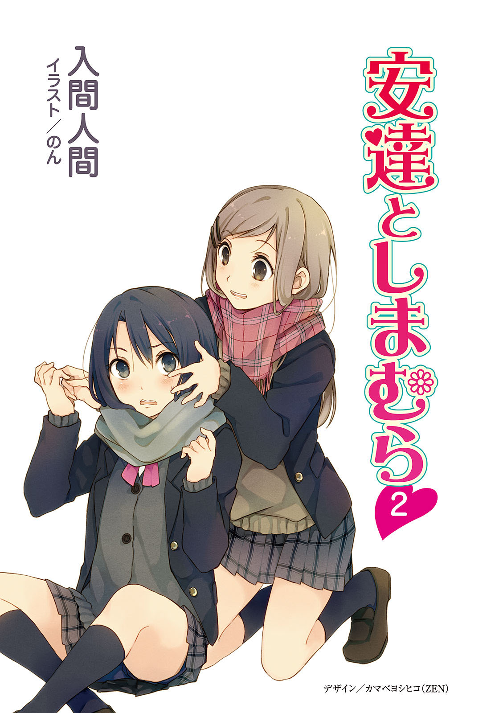
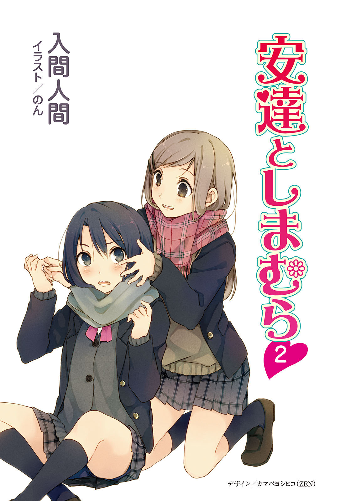

 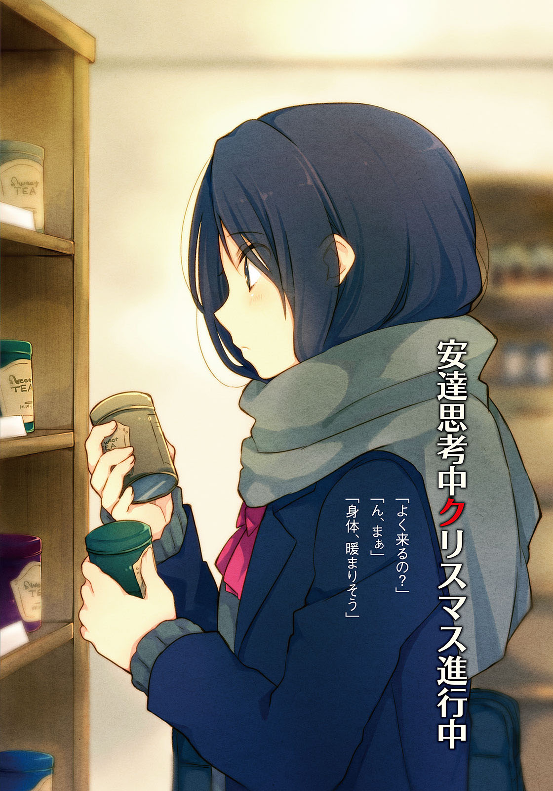
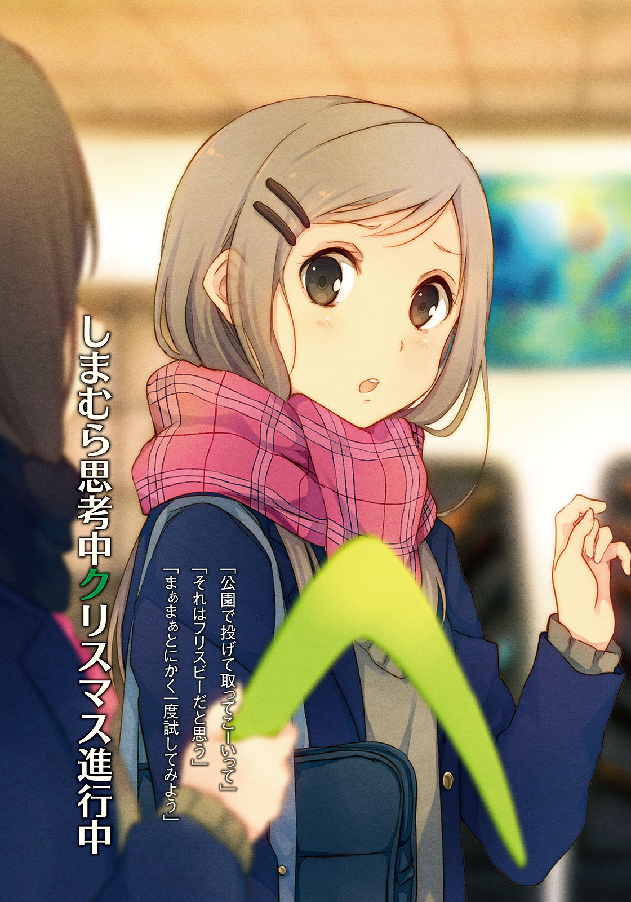
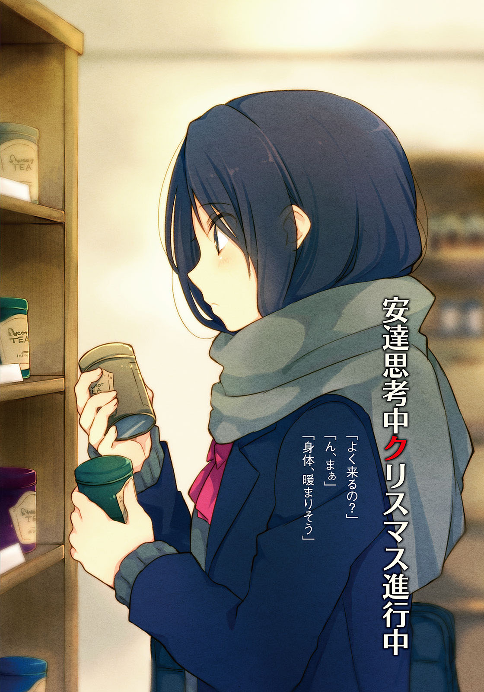
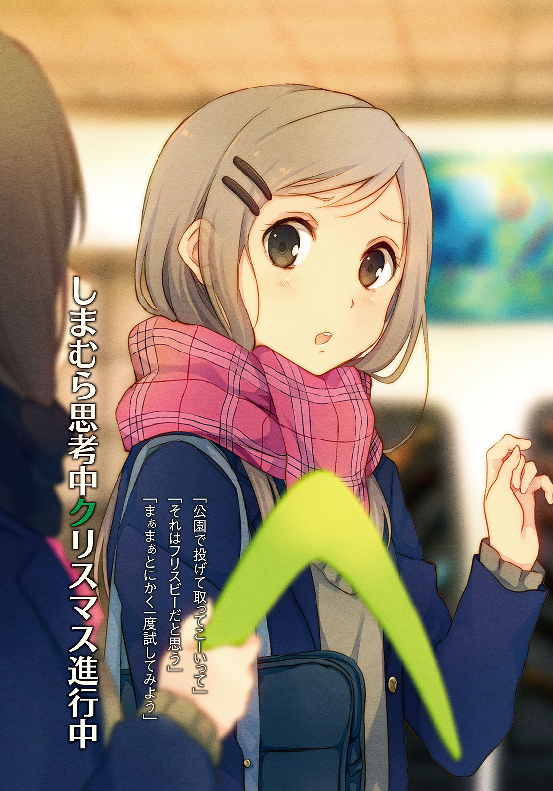
 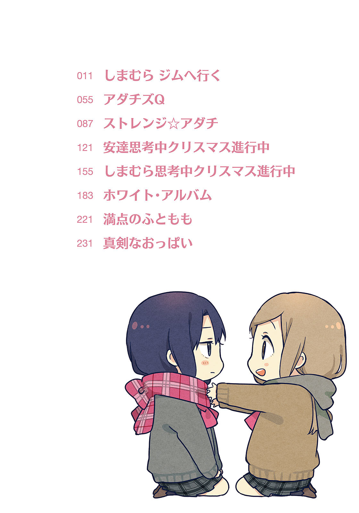
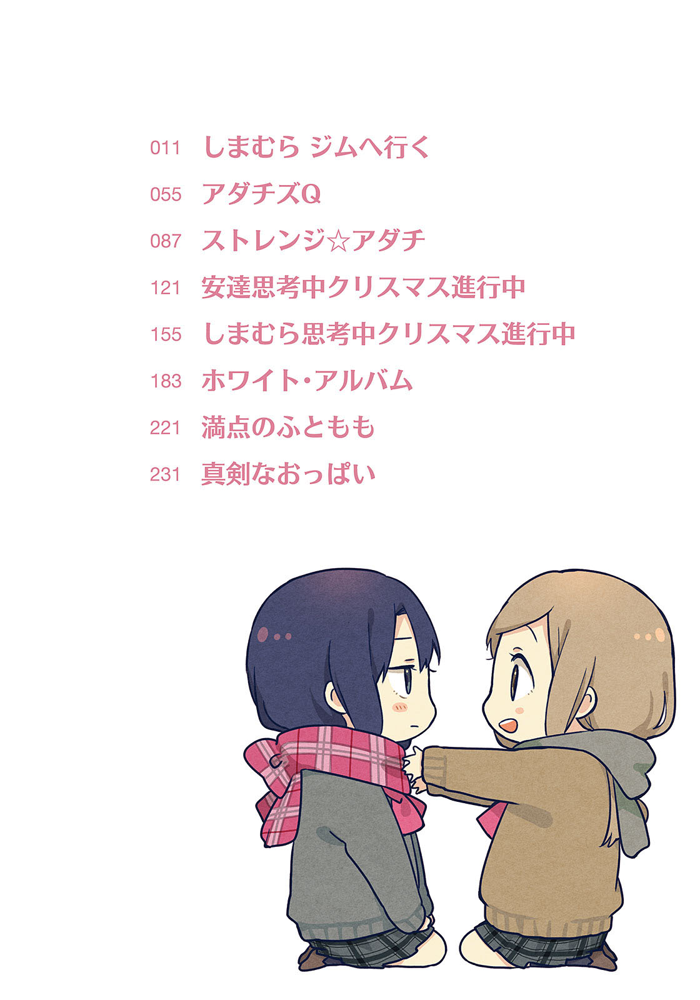
『腹筋できる？』
出かける少し前にそんなメールを送信すると、二分ぐらいして安達から電話がかかってきた。スポーツバッグを肩にかけ直しながら電話に出る。部屋から廊下を覗くと、まだ母親はうろうろ歩き回っているので、時間には余裕があるだろうと判断した。安達の声が聞こえてくる。
『なに今のメール』
「え、そのままだけど。腹筋できるのかなぁって」
扉の脇の壁に寄りかかりながら聞いてみる。電話までするほどの質問じゃなかったから、かかってきて少し困っていた。話すことを用意していない。人と電話するとき、ついそういうことを考えてしまうのだけど、その意識は変だとだれかに言われたことがあった。そうだろうか。
『腹筋？ ん、と……』
安達の声が遠くなる。少し待つと、声が耳もとに戻ってきた。
『できた』
安達が報告してくる。試してみたらしい。律儀というか、まじめというか。
『えぇっと、できたけど？』
「そりゃあすごい」
電話を挟んで拍手する。内心、なんだできるのか、と仲間を見つけ損ねて残念だった。
「実はわたし、足を押さえてもらわないとできないんだよね」
『そうなの？』
「そうなの」
服の上から腹部を撫でる。余分な肉もついていないけど、おまけで筋肉の方もまったくない。
布団に寝転がってから、どうやって起きているんだろうといつも意識せずにしていることが不思議になる。ちなみに妹はできた。ぶんぶんできる。……ほら、わたしの方が胸あるし。
『そうなんだ……それだけ？』
「うん、それだけ。じゃ」
電話を切る。切ってから、なんだ今の会話、と呆れる。
もう少しなにか喋った方がよかっただろうか。でも喋ることないし。安達も口数が多いわけじゃないから、無言の時間が増えるばかりだと思う。それに、これから出かけないといけない。
まるで言い訳しているようで、どこにそんなやましさを感じているかが掴めない。そもそもそんなものはないのかもしれなくて、雲を掴むような話に翻弄されるのもしゃくだなぁと感じたあたりで「そろそろ行くぞー」と呼ばれたので、というわけで、今日の午後は母親に連れられてスポーツジムに行くのだった。日本語はおかしいけど、勢い重視で家を出た。
スポーツジムは十八歳以上でないと入会することはできない。でも一日体験というやつは券さえ持っていれば問題ないそうだ。で、うちの母親はジムの会員で、優待価格で体験チケットを購入できるらしい。その券をなぜかわたしに一枚くれたので、行ってみることにした。
体験してみる理由はなんとなく。強いて言えば退屈しのぎだった。家にいても妹の相手をするか勉強するかで他にやることがない。その合間にぼーっとするぐらいなら、ここは身体でも動かしてみようと思い立った。一日運動しただけでどうなるものでもないけど。
家には自転車が一台しかないけど二人乗りはだめと言われたので、父親の車で送ってもらうことにした。商店街の方の大きな橋を越えた後、市の運動場を過ぎたあたりに青白い看板が見えてきた。ポカリスエットを思い起こさせる色合いの看板には英語でジムの名前が記されている。道路を挟んだ左手側に駐車場がある。右側のジムの入り口前にも駐車場はあるのだけど、そちらは既にいっぱいだった。左側の駐車場もほとんど埋まっている。人気があるというより、暇人が多いんだなぁと感じた。
入り口の前で車が停まる。わたしと助手席の母が降りてから、父はすぐに走っていった。父は母に誘われても一緒に身体を鍛えるつもりはないみたいだ。『会社の健康診断では問題なしと出ているから別にいい』らしい。そういう問題だろうか。
「ほら行くわよ」
右肩をぐるんぐるん回しながら、母がわたしを呼ぶ。「はいはい」と後に続いた。
わたしが使っているのは母親のおさがりのスポーツバッグで、汚れと傷がひどい。端っこがくたびれて、伸び切ったゴム紐みたいになっていた。その端を持ち上げながら中へと入る。
入り口の自動ドアのすぐ向こうには受付があった。女性職員が二人いて、白いジャケットを着ている。その職員の片割れに母は会員証を、わたしはチケットを掲示するとそれと交換で、鍵のくっついた青いリストバンドを渡される。番号が割り振ってあって、わたしは83だった。ロッカーの鍵みたいだ。83という数字でなにか思い浮かべるものはあるだろうかと少し考えたけど、なにも思いつかなかった。縁のある数字、というものもない。
「館内の説明をしましょうか」と職員に聞かれたけど、「いいです」と断った。棒立ちで話を聞くのがめんどい。
受付から左側に回ると、奥のガラス戸の向こうにテニスコートが見えた。練習中なのか、中年のおばさんがぽこーんぽこーんと黄色いボールを打ち返している。それを見ている友達らしき人たちも、おばさんの集団。ついでにそれのずっと手前、わたしの目の前に円状に置かれた赤いソファに座っているのも、おじさんおばさんだらけ。そこで気づいたけど目に留まる人は中年か、お年寄りばかりだ。十代はいなくて当然かもしれないけど、二十代、三十代までほとんど見かけない。母が話していたとおりだった。会員の平均年齢はいくつなんだろう。
水着やテニスグッズの販売コーナーの間を通って、下駄箱で靴を脱ぐ。母はわたしを置いてさっさと先に行ってしまう。そういう人なのだ。遥か前方に立って、人を手招きする性分だ。
左側にある83番のロッカーを開けて、靴をしまう。それから階段をあがって二階に向かうと、様々な器具が目についた。黒い運動器具がいっぱいあって、いかにもジムだった。
壁に沿って十台並べられたルームランナーはどれもそれぞれの速度と角度で稼働して、中年たちがいい汗を流している。ついでに一台ずつテレビが設置されていて、昼のドラマを流していた。奥の別室でエアロビクスをしているおばさん集団もいる。それらを尻目に、更衣室に向かった。その途中もお爺さんたちの視線がわたしに集まるのを感じた。なんだよ、と言いたくなる。
更衣室のロッカーにスポーツバッグを収めて、持ってきた運動着に着替えた後、髪を後ろで軽く結んだ。途中に置いてある体重計は行き来の中で意図的に無視して、素早くその前を通った。母は先に更衣室に入ったのにまだ着替えている途中だった。先に行く旨を伝えて、外に出た。
器具の置かれた二階に戻る。覗いてみると右側の奥にはマットが敷かれていて、側には色んな大きさのボールが用意されている。その中の一つを足の間に挟んで、伸ばした足を左右に振っている人もいた。脇が痛くなりそうだ。なんとなく、日野の得意そうな動き方だった。
二階でもシャツやら、マットやらの販売コーナーがある。隙あらばなにか売りつけようとしてくる、その商魂のたくましさに感心する。わたしはこういう風に食い下がるものを持ったことがない。そんな気がしてならない。
なにをすればいいんだろう、と立ち止まって見回すと丁度、ルームランナーから人が離れるところだった。物は試しと乗ってみる。適当に設定して、がおんがおん走る。すぐに歩調を緩めて歩く。五分ぐらい続けて、これはだめだと停止させておりる。
脇腹が痛くて気持ち悪いけど、見栄を張って余裕ぶった。
「いやーよくがんばった」
「アホ」
いつの間にか来ていた母に頭を叩かれた。鍛え抜かれているせいか、手首のスナップが利いてけっこう痛かった。
「学校の成績が悪いわけだ」
よよよ、と母が泣き真似をする。半袖の運動着で拭くものもないのに、服の袖で涙を拭う演技までする。学校の成績と体力不足のどこに関係があるのだろう。根気の問題だろうか。
「若い子なんて珍しいんだし、もっと絵になるところを見せて頂戴な」
「年齢なんか関係ないじゃん」
周りを見ると、お爺ちゃんと呼んで差し支えない老人がバーベル上げに尽力していた。
「あんたは昔から怠け者だったものね……だったはず、うん」
なんで娘の昔話がちょっとあやふやなんだ、この母親は。……いやまぁ、わたしも昔の自分がどうだったかなんて人に説明できないけど。断片的には覚えていても、詳細なんか忘れた。
通信簿に目立ったことが書かれるような子供でなかったのは確かだ。卒業文集で先生が生徒たちに一言ずつコメントを書くコーナーがあったけど、そういうときになにを書けばいいのか困らせる側の子供だった。結局、なにを書いてもらったか覚えていない。
「こういうのは、こういう風にやるのよ」
母親がわたしに代わってルームランナーに乗る。傾斜もきつくして、勢いよく走り出した。
そんな全力疾走が何分続けられるものやら。面白いので見守ることにした。
「ところであんた、学校ちゃんと行ってるの？」
走りながら母が話を振ってくる。ついでにテレビも操作する。忙しい人だな。
それはさておき、面倒な話題を持ち出すものだ。
「毎日出て行ってるじゃん。制服着て」
「その行き先が学校とは限らない」
母の目つきが細く、意地悪なものになる。見つめられると、自分が悪かったですと認めそうになってしまう。学校には行っていて、嘘はないのに。これが母親の圧力だろうか。
「行ってるよ、ちゃんと」
ルームランナーのハンドルに寄りかかりながら、テレビを見るふりをして目を逸らす。
母と二人で話す機会なんてあまりない。別にそれは望まれた時間でもないし。こんなことなら来るんじゃなかったと思うぐらいには嫌なものだった。親とはそういうものだ。
母はまだ走り続けている。力強い走り方で、安定していた。顎が上がらないし、腕の振りも衰えることがない。すぐにへろへろと萎びたわたしよりずっとみずみずしく感じられた。
「ちゃんと行っておかないと、あんたが苦労するのよ。それと周りの人間も」
わたしの言い分をまったく信用していないみたいだ。そこらへんを見抜くのも、親かな。
「周りの重荷になるような人間にはならないようにって、昔から教えてるでしょ」
「分かってる。覚えてる」
お説教が始まってしまう。わたしを誘ったのはそのためなんだろうか。妹に冗談で『お姉ちゃんみたいになるなよー』と教えているところを思い出して、なんとなく笑ってしまう。
こういうのは心配される間がなんとやらと言うけれど、もっともだった。
理解はするけど、理屈だけで納得できるほど思春期を放棄していない。
頭をルームランナーに軽く打ちつけて、その反動で離れる。
「どこ行くの」
「てきとーに運動してからプールに行く」
「根性なしめ」
未だ走り続ける母に手を振って、逃げた。
そもそもジムにはプールがあると聞いて、のんびり浮かぶことを目的にやってきたのだ。
それから上での運動を宣言どおりに適当にこなした後に切り上げて、更衣室に戻る。真剣にやっていなくても額や背中はいつの間にか汗に濡れて、二の腕が痛くなっていた。あと、腹筋ができるようにとお腹に効きそうなそれっぽい運動を繰り返したために脇腹も痛い。ボールを足に挟んで振りすぎたかもしれない。運動の前後にストレッチもしていないし、明日は筋肉痛かも。いやわたし若いし、大丈夫と楽観的に考えて更衣室に戻った。
ロッカーのスポーツバッグを漁って取り出した水着に着替える。水着といっても学校指定で買ったやつだった。家族で海に出かける機会も失われた高校生としてはこれぐらいしか持っていない。
水泳帽もかぶる。中に髪が入れづらくなっていて、一学期よりも伸びたことを実感する。エアロビクスを終えたおばさん軍団が入ってくるのと入れ違いの形で、更衣室の別の入り口からプールへ向かった。一歩出ると、濃い塩素の臭いが鼻についた。学校のプールよりずっと消毒がきつい。季節は冬に近づいているのに夏を思い起こさせる。うぇーうぇー言いながら階段をおりていった。薄暗い一番下にまで行くと途端、扉の向こうから光が入り込んでくる。
扉をスライドさせて一歩めから、足もとの消毒を促された。消毒液に足首まで浸る。生温い。学校のやつは冷たいから、少し驚きだった。シャワーを浴びた後、プールの方に行ってみる。
「やっぱり、入会してよかった……ふふふ、たまにはぼくも閃くもんだな」
急に声が聞こえてギョッとする。ブロック塀のようになっている場所を上から覗くと、金髪で、鼻に少しそばかすがあるおにいさんが座って、へらへら笑っていた。
プールの右端のコースで泳ぐ、水泳教室の女の子たちを見つめながら。
うわぁ。
見た目は悪くないのに、目つきが少し気味悪い。いや、気持ち悪いっていうか、眩しいものを見るように目を細めて、いい笑顔を浮かべているのがおかしいでしょうって話だった。
視線に気づいてか、そのおにいさんがこちらを向く。うわぁ。子供を見ているときは宝物でも見守るように目が輝いていたのに、こちらに振り向くその目には感情がなかった。窓の外の見飽きた景色を前にしたように、綺麗だけど思うところのない目の輝きだった。その顕著な反応の差を見るによほどの子供好きか変態、どっちかだろう。
「おっと」
見逃す時間も惜しいとばかりに、すぐに女の子たちの方に向き直る。
多分、変態の方だった。近寄らないようにしておこう。そそくさと離れて、プールに入る。
左端に階段と手すりがあったのでそれに沿って水に沈む。左側は歩行者用のコースで、お年寄りたちがうろうろ歩き回っていた。そういう祭りか儀式のようにも見える。そこに紛れた。
温水プールだけあって水温は低くない。運動して火照った肌にはもっと冷たい方が気持ちいいぐらいだ。じゃぶじゃぶと一回、顎まで沈む。慣れない塩素の臭いが鼻の下まできた。
「………………………………………」
気のせいではなく、ここでも注目を浴びている。学校指定の水着だからだろうか。それとも年齢故か。そういうのが心地よい人もいるだろうけど、わたしにとっては不愉快でしかなかった。迂闊だったとも少し思う。注目される、つまり浮いている。ここはわたしの来る場所じゃないのだ。
沈んだ姿勢のまま、中腰でとろとろ歩く。隣のコースで泳いでいるお爺さんが追い抜くと、生まれた波が口と鼻に入った。顔を拭いながら膝を伸ばす。隠れることもできない。
安達でも誘えばよかったかな。でもこういうのにわざわざ来る性格だろうか。人目に多くつく場所で、明るい顔をした安達を見たことがない気がする。体育のプールにも出てきたことがなかったみたいだし。
うろうろ、お爺さんお婆さんの間で流されるように歩いていると、さっきの変態おにいさんがプールに飛び込むところを見かけた。右端の水泳教室の隣コースを確保するあたり、本格的というか、手慣れたものを感じた。あげていたゴーグルを装着して、泳ぎ出す。
おぉ、速いぞ変態。泳いでいるのが中年やお爺さんばかりということもあるけど、やたらに速度があるように見える。クロールであっという間に向こう岸まで泳ぎ切ってしまう。間髪入れずに壁を蹴ってターンして、またクロールで快速を維持する。見ていてちょっと楽しい。
でもよく見ると泳ぎ方が変だ。首の傾きがどうもおかしい。うーん。わたしもゴーグルをつけて、その場に潜ってみる。水中で変態さんを観察すると、違和感の正体に気づく。
首の向きが変わっていない。
あぁ、なるほど。
激しく泳ぎながらもずっと、女の子たちの方を見ているらしい。
筋金入りだった。首の筋でも違えた方が世間のためなんじゃないでしょうか。呆れたけど、色んな人がいるものだなと世界の広がりを感じた。今あるこの目から少し離れて世界を見てみれば、きっとわたしたちは異端の集まりなんだろう。自分ではその異質なものに気づけないだけで。その中でこういう人はだれの目にも分かりやすいというだけだ。近づかないようにしよう。
歩いている間に六つあるコースの中で一つ、人がいなくなる。そっちへ逃げることにした。そちらは泳ぐためのコースで、短距離用コースとか書かれているけど無視して、浮かんだ。
泳ぐ気なんかまるでない。ゴーグルを目の上に外したあと、手足を大の字に広げた。
周りの視線も、天井を向くようになれば気にならなくなる。照明が眩しくて目を瞑った。そうすると身体の揺られる感覚が前面に押し出される。水ではなく暗闇に揺らされるようだった。
水の跳ねる音の中に母の声が混じる。人に迷惑をかけるな、は母がもっともわたしに強く教えることだった。その迷惑がなによりまず家族に向くという部分を踏まえて、そう教える。
ここで浮かんでいることが、だれかに迷惑をかけているだろうか。重力から少し距離を置いて楽しんでいるだけなのに。学校でのサボりも同様に、井戸の底みたいな息の詰まる場所、教室から逃げているだけだ。わたしがいなくても授業は進む。なんら滞りなく。じゃあいいじゃん、と思うけど母親の言う迷惑は、わたしが将来ろくでなしになることを危惧しての意味なんだろう。いつまでもあの家で、庇護の下で生きられてはたまらないと。そういうわけだ。
それに対して、自分の人生だから放っておいてと言う権利すら今のわたしにはない。
わたしは高校生になってすっかり自分が一人前に思っているけど、結局、未だ責任を取ることも満足にできない子供なんだろう。少なくとも大人からすればそう見えるのだ。
目を開いて、ゴーグルをつける。それから、身体の力を更に抜いた。
沈みながら息を吐き出す。吐いて、身体の浮き輪を捨てていくように。重くなりながらもわたしは解放されていく。あぶくを見上げながら、背中が床につくまで沈んでいった。
見上げる水面の色は床に染まるように青い。
安達の飲むミネラルウォーターのラベルを思い起こさせる、アクアブルーだった。
なぜかそれだけの色と反射が尊い。水の流れゆく音と合わせて、ひどく心地よい。
ゴーグルの中が、水も入っていないのに濡れてしまいそうだった。
息を吐き出さないとこの心地よい水底にとどまれず、そして吐き出せば長くはいられないのがジレンマだった。名残惜しくも息苦しくなって浮上して、一息ついているといきなりお腹のあたりを押された。再びあぶくを吐き出しながら急速に沈んでいく。床を足で蹴って踏みとどまり、慌てて浮き上がると今まさに犯人が逃げているところだった。母親だ。「わはははは」と笑いながら走って逃げている。水を掻き分けて疾走し、遠くへ離れていく様はカッパのようだった。いやカッパ見たことないけど、あんなイメージ。もしくはギャグマンガの落ち武者。
「この、いい歳こいて」
罵倒はそこまでで、後に続かなかった。わたしも母を追うように、プールからあがった。
帽子を脱いでから、さてなにしようとプールの反対側へ行ってみる。そちらにはシャワー室と室内ジャグジーがあって、温泉のような湯気が上がっていた。それと扉の向こう、外にもジャグジーがあるみたいだ。ちらりと覗くと母は外のジャグジーに浸かっているみたいなので、そちらへ行くのはやめておいた。
外へ続く扉の手前には、二種類のサウナがある。ミストサウナとスチームサウナがあって、両方から相応の熱気が感じられる。どうせならどっちかに入ってみようかと思い、どちらがいいのかなと見比べてみる。サウナなんて入ったことがないので、勝手もよく分からない。
お尻の下に敷く青い板を持ったままうろうろしていると、人がやってくる。サウナに入ろうとして横を通ったその中年の女性にふと目をやる、と、既視感めいたものに目の端を奪われて、つい視線が固定された。すると相手もすぐに反応して、こちらを向いた。しかも目があっただけなのに、そのまま立ち止まる。
サウナに入るつもりしかないのか、水泳帽もかぶっていない。黒い髪の、母親ぐらいの年齢。
だれに似ているんだろう。悩んでいる間に、相手の方が口を開いた。
「気に入らない」
内容と裏腹に冗談めいた口調で声をかけてきた。その口調に、連想する人はいない。
「ここジジババだらけだからさ、私ぐらいの歳でも一番若くて優越感に浸れんのよ。あ、水泳教室とかテニス教室の小学生は無視してね。で、そういうところにあんたが来たのだから、分かるでしょ？」
「はぁ……」
早口にまくし立ててくる。つまり若いやつは気にくわないと言いたいだけらしい。
そういうのを面と向かって言われるのは斬新だった。
「なんちゃって。でも若い子なんて珍しいのよ」
「そう、でしょうね」
返事をしつつも、口の中で小さく『あ』と声をあげる。
その中年の横顔を眺めたところで、既視感の周りにかかっていた靄が晴れたのだ。
そして、その人がサウナから出てきたお婆ちゃんに話しかけられたところで確信した。
「安達さんも来てたの。いくらサウナ入っても痩せへんよー」
「大きなお世話」
ジムの仲間と朗らかに言葉を交わす、その人の名字があまりに身近で。
安達に似ているんだ、と気づいた直後の出来事だった。おおぅ、うんめー。
日本は狭い。まさか安達の母親とこんなところで会うなんて。
こういうのを縁っていうんだろうか。自分の母も苦手だけど、友達の母親に会うのも微妙になるものだなぁと、スチームサウナで小さくなりながら安達の母を見つめていた。
安達は親の話を嫌う。口をつぐんで、ほとんど語らない。わたしたちの歳なら親の話なんてあまりしないのが普通だけど、そういうこの年頃特有の反発とは質を異にするものなんだろうと感じていた。わたしたちのそれには微量の熱があるけれど、安達の親への感情に温度はない。砂のように乾き切っている。そしてその砂が感情の発露で固まることを、安達は知らないように思えた。
「……でねぇ、あのコーチほんと教え方が下手っていうかさ」
「そうよねぇ。もう一人の職員の方が上手だし、声もいいし……」
安達の母親は別のおばさんと汗だくになりながら盛り上がっている。テニスの話をしているみたいだ。どの男性職員がだめだのなんだの言っている。学校の女子が同級生の男子の善し悪しを語っているときと大差ない。ついでに同性の悪口が良い話の種になるところも変わらない。
安達の母親は娘と違って社交的、そして話し好きみたいだ。横顔は相応の老けている肌以外はよく似ていて、顎の輪郭が特に瓜二つだ。髪の色も似ているせいで、遠目で見たなら安達が髪型を変えたと誤解してしまうかもしれない。
このジムと安達の家はけっこう距離がある。通う意欲はあるんだなぁと、なにと比べてやる気に溢れていることへの嫌みを思ったか明瞭でないままに、ぼぅっと観察を続ける。暑い。
真夏のような体感温度にくらくら、目眩がしてきた。元々、暑いのは苦手なのだ。
しかし安達の母親がここに入ったことで、つい、一緒に中へ招かれてしまった。
「……まったく。そういえばお宅の子、今いくつだった？」
「十五。高一よ」
安達の母親が聞かれて答える。へぇ、安達は誕生日をまだ迎えていないのか。
「あ、いいわねー。高校受験終わって気楽じゃない」
「まーねー」
「わたしんところ、今年が大学受験で……」
わたしの母も去年はそんな話をしていたんだろうか。
「気楽って言っても手のかかる子で、困ってるのよ」
安達の母親が笑いながらそんなことを言う。きろりと、わたしの目が自動的に動いた。
その、手のかかる子という表現が引っかかった。
「なに考えてるかも話さないし、よく分かんないの。暗い子でねぇ、人見知りするし」
安達が語る母親像はすかすかで、手垢を感じない。
それはつまり、母親の言葉とはまったく逆なわけで。そういう、子の心を理解しない母親の姿にはわたしも多少、思うものがあった。自分が子供の延長にあることを、大人はすぐ忘れる。
だから。
「あの」
かけたくもないのに声をかけてしまうときも、往々にしてあるものだ。
「あだ……お子さんのことはよく……知らないけど。そういう言い方、よくないと思います」
嘘をついた。いや、嘘だろうか。よく知っている、とは言えないかもしれない。
心臓が跳ねる。分かりやすく言えば、びびる。そりゃあそうだよね、と目玉に焦燥が収束していくのを感じながらも納得する。大人に口答えすることへの勇気は、これぐらい必要だ。
足りない分をわたしは大いに焦って、意識まで遠のきそうになっている。
その曖昧模糊とした感じは決して、サウナの熱にやられているわけじゃない。
安達の母親がわたしを訝しむ。話に加わってくるのが予想外だったんだろう。
「手をかけていないから、分からなくなるんじゃないですか」
わたしのそうした言い分に、安達の母親が目を剥く。
間違っているというのか。
お節介なわたしの母親は、ちゃんとそれなりに娘たちのことを分かっている。
それは関わっているからこそだ。
だから嫌みも的確で、疎ましがられて……それと比べて、安達はどうなんだ。
不当な言い分というやつじゃないのか、それは。
「あぁ別に議論とかするつもりありません」
甲高い声で怒鳴られる前に遮る。中年と話して論破できるなんて思っていない。
そんな不毛なことはしたくない。聞き入れられるかはまったくの別問題だけど。
「あんた、親と一緒に来ているの？」
安達の母親が尋ねてくる。声色は思ったより落ち着いていた。
「そうですけど」
「名前は？ だれ？」
「そんなこと関係ないと思います」
これはわたしの意見だから、親なんか関係ない。
なにか言いたそうな安達の母親の機先を制して、口を開く。
「話し合いは、しません」
そこをもう一度強調する。人の生活に干渉なんかしたくない。されたくもない。
言わずにはいられないことを好き勝手に述べて逃げていくのが、今時の若者だ。
そんな無責任な発言など聞き流して放っておけばいいのに、思うところがあるのか安達の母親は動かない。嫌悪というより、どこか興味深いような目つきでわたしを見ている。名乗ってはいないし気づきもしないだろうけど、自分の娘と同じぐらいの年齢の子供からの反応だからかもしれない。連れのおばさんも後ろでわたしたちを不可解そうに見守っている。
安達の母親は他になにも言おうとしない。尋ねもしない。しかし、興味を失いもしない。
ただわたしを見つめている。
黙っていて、わたしから動かないといけなくなる。そこだけは娘と一緒だった。
「どっちが正しいかなんて、分からないから。正しいと決めつけるために勝負しましょう」
「勝負？」
我ながら強引な理屈だと思う。でも語るよりはきっと、こっちの方が早い。
安達の母親と何度も会うなんて勘弁なので、この場で白黒つけることにした。
「サウナに最後まで残っていた方の勝ち。わたしが勝ったらこっちが正しいので、今日だけ子供に良い母親面してみてください」
それになんの意味があるのか。母親面とは具体的になんなのか。なにも見えてこない。
けれどもしそれが通れば、明日、安達に会うとき少しだけ楽しみが増える。
それぐらいの動機だった。
「それは、若い子なりの反抗ってやつ？」
「そういうのです」
安達の友達だから行動しているわけではない。膝に肘をついて、前屈みになる。

髪から流れ落ちる水滴がプールの水か、汗か判別できない。勝負は無謀だったかも。
やっぱりなし、とあっさり妥協して撤回しようとしたら、安達の母親も同じ前屈みの姿勢を取っていた。既に勝負は始まっている、という雰囲気を出されて、引けなくなってしまう。
大して言葉を交わしていない、会ったばかりの相手の挑発に乗るなんて。
ボーリングで勝負をしかけた安達を思い出す。安達一族は勝負にこだわるのかもしれない。
連れのおばさんが首を傾げて、「変なの」と正直にわたしたちを評価する。そう、どう考えてもおかしな流れだった。わたしは別に安達の母親を悔い改めさせるような発言をしたわけでもない。単に揚げ足取りみたいなことをしただけなのに、なぜここまで行き着いてしまったのか。
とにもかくにも、耐久勝負が始まる。地味なので特筆することのない勝負だけど。背中から水気と一緒に魂まで蒸発していくような感覚と戦う。ただそれだけ。プール早泳ぎの方がまだ盛り上がったかもしれない。でもわたしが勝てない公算が高いので敢えて提案しなかった。
連れのおばさんが先に出ていく。ほどほどにと忠告したけど、耳鳴りが少し強まってきて聞き取りづらかった。安達は、恐らく家にいる彼女は想像もしていないだろう。自分の母親が同級生とサウナで幼稚な争いをしていることを。
「良い母親ってなに？」
途中、安達の母親がそんな質問をしてきた。声から水分が大分飛んでいる。
こっちも頭に靄がかかっていて、受け答えをいつも以上に億劫に感じる。
「わたし、母親になったことないから分かりません」
「あなたの理想でいいから教えてくれない？」
なんだそれ。理想の母親像？
そんなもの、人に言えるものか。
「別に、普通ならいいと思いますけど」
「普通って、どういう親？」
「……子供と一緒に、いて？ ご飯食べて？ とか？ そんなの……知らないよ」
定義したとき、関係はより一層見えなくなる。人間関係というのは形がないまま漂うことでしか維持できないものなのだと思う。友達とか、家族とか。必要以上の肉付けをしようとしても、中身は空洞になっていくだけだから。目に映らないものを映るようにすると、見えないという価値が失われて別のものへと変質する。そうして見えたものは、最初に見たかったものとかけ離れていて、暴いてすらいないのにそれが本質だと勘違いして、失望する。
友達のいい面ばかりを信じるのも間違いだけど、悪い部分ばかりをあげつらってそれが本性だ、というのもおかしい。どちらの面もあやふやにしたままでないと、友達は続かない。
わたしの説明に満足したわけではないと思うけど、安達の母がまた黙る。汗が瞼の上を滴るごとにしかめ面となり、貧乏揺すりが激しくなった。わたしもうつむいて、耐える姿勢を取る。
そうして、十分も過ぎた頃だろうか。入ったときから累計で二十分近くが経過していた。
「こないだ、サウナに入りすぎて倒れて血を出したお爺ちゃんがいたのよね」
「………………………………………」
安達の母親が揺さぶりをかけてきた。そういう小ずるい駆け引きは、大人っぽかった。
「負けてあげようか？」
顔を真っ赤にしている安達の母親がぎこちない笑顔で、譲歩した降参を申し出てくる。
そういうのは好きじゃない。
お願いしますと言えば終わるこの状況で、わたしも意地悪になる。
「あげなくていいです」
「あげて」
「あげない」
どんな会話だ。熱にやられて言葉が単調に、そしておかしくなっている。
「あげてやる」
「あげないでください」
なんの話をしているのか、その根っこを摑むのも難しくなってきた。
「喜んでるならさぁ、そうですって言ってほしいのよね」
急に話が飛ぶ。安達の母親が顔をあげて、下唇を突き出したような変な顔になる。
「どこ連れていっても引っ込んでばっかりで。楽しいのか不満なのかも分からない」
「……娘？」
「そう」
「いくつの話？」
「五歳かな。あ、四歳かも」
安達母が指を折る。安達のもっと小さいとき……今をそのまま小さくした感じかな？
「そんな子供のときの話じゃなくて。今の子供の話を考えれば？」
「親が一々なんか言ったらうるさいだけでしょ。私そうだったし」
「そうだけど」
うるさいのは嫌だけど、まったく構ってもらえないのも嫌だ。
そういうわがままに応えてくれるのは精々親ぐらいしかいないのだから、気づいてほしい。
子供はそういう矛盾を抱えていると。抱えたうえで、どう対応するかを、教えてほしい。
「よし、そろそろ負けてあげる」
「いいですって……」
安達の母親が立ち上がる。よろめきながら、入り口に向かって進んでいく。あ、逃げた。
限界らしい。
扉を押す段階で、一旦立ち止まる。緩慢な動きでこちらに振り向いた。
「娘って……あーまぁ、いいや」
安達の母親がなにか言いたそうに首を振ったけど、うやむやなまま外に逃げた。
わたしもそれに続く。なんかまずい発言したかなと振り返ろうにも、脳が痛い。
ふらふらと外に出て、用意された白い椅子に座り込んで、脱力しながら今更気づく。
わたしが負けたら、というのを決めないままの勝負だった。
そこに気づいていないとは思いがたいのに、言及しなかった理由に思いを巡らす。頭が熱にやられて意識が靄に溶け込み、満足に言葉も紡げないのでぼんやりとした答えしかないけど。
大人の矜持のようなものだろう。きっと、持っていると思い込んで振りかざす意地に似たものが安達の母親にそうした態度を取らせたのだろう。
そんな風に。わたしは子供なりに、分かったふりをした。
昨日がんばったから今日は休んでいいよ、と身体が言っている。
筋肉痛を都合良く解釈したわたしは月曜日の朝から、教室ではなく体育館の二階にいた。床に寝転がっていると、最初は少し冷たく感じられた。季節が確実に冬へと向かっている。
偶然か、なんらかの計算でも働いたか定かじゃないけど二階には安達もいた。一緒にサボって、ついでに足を貸してもらっていた。安達の伸ばした足、太ももを枕にしながら横になっている。安達の肌も最初は冷えていたけど、今ではとても温かい。ついでに柔らかい。
「前もこんなことなかった？」
「あったけど、あのときは私が膝枕してもらう方」
「あぁそっか」
寝返りを打つ。安達はわたしでなく、天井を見るように顔をあげていた。ぼーっとしている部分もあって口が半開きだけど、頬だけが赤く染まっている。ついでに足も少しおかしい。
「足が引きつってるみたいだけど、大丈夫？ ぴくぴく動くけどさ」
「え、えぇ、うん。大したことじゃないから」
安達が気にするなと答える。あまり平気に思えないけど、と痙攣している場所を指で摘むと、安達の足全体がびくんと跳ねた。跳ね上がって坂のようになった足の上を、わたしの頭が滑る。足の付け根、スカートの上まで転がってしまった。足が戻る。でもこっちも戻るのは面倒で、そのまま安達のより近くで寝転がった。
いつかのやり取りをぼんやり思い出す。なるほど、安達の匂いがするもんだなと思った。
その間も、安達はずっと上を向いていた。
心は上の空だけど、身体だけが鋭敏に反応しているみたいだ。
変な塩梅である。昨日、安達の母親と出会ったことを思い出す。なにか関係あるのかもしれない。だからここに来た、ということもあり得た。そこまでくると、わたしのせいでもある。
しばらく自分から発言していなかった安達の口が、そろそろと動く。
「しまむらは、昨日なにしてたの？」
「なにって、適当に。ごろごろとか、ぷかぷかとか」
「ぷかぷか？」
安達が不可解な表現に首を傾げる。なんとなく、ジムに行ったことは隠してしまう。ひょっとすると安達は母親がそういうところに通っていることすら知らないのかもしれないと思ったけれど、それならそれで話題に出すことではない。見上げると、安達の目が横に泳ぐ。
「昨日さ」
「うん」
「母親が、おかしかった」
安達がぽつりとそう言う。あぁ、やっぱり。安達の不良化の一役を買ってしまったみたいだ。
「おかしいって？」
なんとなく分かっていながらとぼける。安達は髪を指で梳いて、もごもごと唇を動かす。
「一緒に晩ご飯を食べたの」
「……それ、おかしなこと？」
わたしの家では当たり前のことだった。妹も、父親も一緒にご飯を食べる。それは小学生の頃からなにも変わっていないわたしの当たり前で、安達の感覚を掴み切れない理由となる。
「おかしい……懐かしい？ とも言える……あとは、息苦しい」
言葉に迷うように、安達が感情の形をあやふやになぞる。描かれる輪郭に気持ちのいいものは感じ取れない。違和感しかないようだった。
「いつもご飯は作っていってくれるんだけど、一緒に食べることってなかったから」
「……ふぅん」
「家にいることが少ないし」
わたしとの約束は守ったらしい。案外、律儀な人なのだと思った。
その誠実めいたものはこの娘にも感じられる。どこかで似通ったものがあるみたいだ。
「嬉しかった？」
「あんまり。喋ることもなくて落ち着かなくて、ご飯の味が分からなかった」
「それは、それは」
「で、朝ご飯はいつもみたいに一人で食べてきた。なんだったんだろう、あれ」
「さぁ……分かりかねますねぇ」
足を抱くように身体を丸めて、嘘をついた。きっと安達と同じような居心地の悪さを母親の方も味わったんだろう。どちらにも同情はしないし、まぁよくある関係だとも思っている。
余計なことをしたと、自分に後悔するぐらいだ。
安達も、なにも変わりはしない。ただそうした少しのおかしさについて、わたしに、というかだれかに話すことができた、ということの方は大事なことなんだろう。安達にとって。
「………………………………………」
不思議だった。家庭の環境を考えると、正反対になりそうなものなのに。
わたしと安達の、人との接し方。距離を欲しがるものと、埋めたがるもの。
……ん、いや。これで合っているのかもしれない。
恵まれているものほど無関心となり、その逆もまた然り。
そういうことなんだろうか。
もっともわたしだって、一人で生きたいとかそんなことは願っていない。
そもそも無理だ。
以前にだれかが言っていたけど、一人で完成されて生きる人間は、もう人の範疇からはみ出している、らしい。人間という生き物としてのバランスが崩壊しているのだから、別種の生物と捉えるべきだ、だったかな。まぁ大体分かるし、そんな大それたものになるつもりはない。
だからこうして、膝枕してもらっている。
「あ……」
安達が短く声をあげる。上を向いていたその目が、わたしに注目していた。
話が一段落ついて、今更のように、お腹の側にわたしがいることに驚いたみたいだ。安達がびっくりした姿勢のまま固まる。顔を少しあげようとしたら、慌てたように頭を押さえられてしまう。なぜだと思いつつも抗わずに、安達の足とスカートに突っ伏した。鼻が生地で擦れて少し痛む。
これでは元から大して高くない鼻が一層潰れてしまう。……まぁいいか。
しばらく安達の太ももに顔を埋めた。そう言うとなんだかわたしが変態になったように思えるので、もう少しマシな表現はないものかと考える。でも息苦しくなってきて考えるのが億劫になり、変態で落ち着くこともよしとなった。
頭の上にあった手が離れたので、寝方を変える。横向きになったあと、水面へあがるように軽く息を整えた。呼吸を繰り返してその味が変わっていくことに、小さく笑う。
「するもんだね」
「え？」
「安達の匂い」
いつかの安達の正しさを口に出して認める。と、安達が真っ赤になった。安達スイッチをぱちんと押し上げる気分になる。ついでに言うと、その赤く染まった顔つきはサウナで耐えしのぶ母親と色が異なる。あれは赤で、安達は桃。桃色の方が艶やかだった。
そんな差異を見つけながら、安達にお願いしてみた。
「ねぇ安達、腹筋してみて」
「なんで？ というか、なんで昨日から腹筋？」
「ん、別に。見たいだけ」
理由を濁して求めてみる。安達は少しの間を置いた後、動き始めた。
顔が赤くなったのを悟られないようにするためかもしれない。遅いけど。
安達が四つん這いでのそのそと移動して、開けた場所まで行く。それから足をこちらに向ける形で寝転んで、あっさりと腹筋を披露した。しかも連続で。身体を起こすのはのそのそして鈍いけど、途中でへばることもない。五回連続で行った後、寝転がって動かなくなった。
同じサボり学生として、差を見せつけられた感じだった。
「むぅ……」
じーっと見る。視線が気になったのか、安達が顔をあげた。
「なに？」
安達が無垢な顔つきと反応を見せる。つい少しからかってみたくなった。
「安達さん、スカートの中丸見えですよー」

見てもいないのに言ってみた。すると、安達が飛び跳ねた。
冗談だったのに、すごい勢いで反応した。部屋にゴキブリかムカデが出没したときの妹ぐらいの速さだった。起き上がって座り直して、スカートを押さえる。そしてわたしを睨んだ。
赤らんだ顔と相まって、すごく責められている構図になっていた。
これではまるでわたしがいじめて怒らせたみたいじゃないか。
「え、悪いことした？ 親切に教えただけなのに」
「セクハラ」
生まれて初めてそんなこと言われた。性別からして一生言われないはずだったのに。
「えー、セクハラって……いいじゃん、わたししか見ていないんだし」
本当は見てもいないし。そう言うと、安達が染めた頬を掻きながらぼそぼそと反論する。
「しまむらに見られるのが……アレなんだけど」
「アレ？」
そうアレ、と言ったその続きはなかった。アレの正体など分かるはずもない。
赤い風が吹くようなやり取りの落ち着くのを待ってから、話を戻して安達を賞賛した。
「でも腹筋普通にできるなんて、すごいよね。自転車に長く乗っているからかなぁ」
「しまむらはできないんだよね」
「……ふっふ」
筋肉の軋みが聞こえる。そんな身体を動かして、仰向けに寝転ぶ。体育館の床は埃とニスの臭いがする。そこに背中をくっつけるのは良い気持ちではないけれど、高い天井を見つめていると意識がそこへ吸い込まれていくようで、気にならなくなっていく。
手を頭の下に入れる。膝を折って、息を吸う。溜め込んだそれを吐き出すようにしながら。
首があがる。肩が少しだけあがる。背中が少しだけ離れる。
首が痛い。引きつる。お腹の方にまったく力が入っていなくて、無理のしわ寄せがくる。
息苦しくなってきた。
諦めた。
「……今の、腹筋？」
安達が疑問を呈する。
首を動かしただけにしか見えないよ、と言外に語っている目つきだった。
腹使ってないよ、と言いたいのだろう。えぇい、正論すぎるぞ安達。
勝手に安達を正しくしてみた。
手を使って起き上がり、照れ笑いを浮かべる。うまく浮かばずに頬が引きつっていそう。
筋肉痛を節々に感じているせいだった。こんなにがんばってはみたけど。
「やっぱりたった一日じゃあ変わらないよ、なにも」
きょとんとした顔で、安達が首を傾げる。わたしの発言が分からなかったみたいだ。
それでいい。分かったらもう少しややこしい話が始まってしまう。それは、いらないものだ。
「なんのこと？」
「まぁ色々とね」
指で床を押して立ち上がる。お尻と背中を払ってから、二階の入り口に向けて歩き出す。
そろそろ昼休みだ。今までずっと休んでいたけど、もう少し休めばいいと思う。
だから昼ご飯を買いに行こうと思った。安達の分まで、ついでに。
いつもみたいに、目に見えるほどは変わらないように。
おまけ「ヤシロ来訪者」
右に動く。「さささー」相手も動く。左に逃げる。「すすすー」左に立ちふさがる。
思い切って、「きょー」と走って逃げてみたら、ぺったぺったと追いかけてきた。なぜだー。
家が近かったので逃げ込む。玄関に姉ちゃんの靴があることを確かめてから廊下を走って、「姉ちゃん、ねーちゃーん！」と呼びながら奥の部屋に飛び込んだ。
部屋の中では座椅子を引っ張り出してもたれかかりながらテレビを見ていた姉ちゃんがいた。身体を後ろに反らして首だけ振り向く。逆向きになって髪が下に流れて、ホラー映画のキャラみたいだった。逆さ頭の姉ちゃんの唇がめんどうくさそうに動く。
「あー？ おかえりー」
のんきにあいさつする姉ちゃんに、そうじゃないのよとうったえる。
「変なのがいた！」
「んー、変なの？」
姉ちゃんも変だけど。
「こう、髪がぶえあーっとして、変なのが追っかけてきた」
身振り手振りで説明すると、姉ちゃんが座椅子から離れて立ち上がる。
「変質者？ あんた大丈夫？ なんかされた？」
姉ちゃんがしゃがんで、めずらしく真剣そうな顔になって聞いてくる。
急に姉ちゃんがすごく大人に見えて、ちょっとびっくり。
「えーと、通せんぼされた」
「他には？ 触られたとか、連れていかれそうになったとか」
「んー、ぜんぜん」
「なら、いいけど」
姉ちゃんがホッと息をはく。こわばっていた肩を落としてから、また立った。部屋を出ていって、外の変なのを確認しに行くつもりみたいだ。わたしも後ろについていくと、「来なくていいの」と追い返されそうになる。でもどれが変なのか教えないといけないので、ついていく。
玄関に裸足でおりて「あー、姉ちゃんやっぱりわるいこ」「静かにして」中腰の姉ちゃんが郵便入れを開けて、外を覗く。すると、大きく溜息をついた。
「なるほど、確かに変なのだ」
そう呟いた姉ちゃんが膝を伸ばしてから扉を開けた。えぇ、開けちゃうの？
「おーい、そこの謎のちびっ子。人の家の前で怪しい動きをしないように」
姉ちゃんが声をかけると、家の前をうろうろしていた変なのが振り返る。わたしとおんなじくらいの大きさで、もこもこに着込んで後ろの帽子が重そうに垂れて。で、どこが変かというと、髪が水色だった。後ろでちょうちょみたいに結んでいて、ぶわーっと、光のつぶつぶがまわりに飛んでいる。あとコロッケの入ったパックを手に持っている。
「おぉ、うんめー」
あれ、姉ちゃんの友達？ その子が嬉しそうにぺったぺった走り寄ってくる。
なんでぺたぺた鳴るかというと、履いているものがビーチサンダルだったからだ。足だけ寒くないのかな。近寄ってくると、つぶつぶが勢いにのってこっちまで飛んでくる。……きれい。
「ほほぅ、ここはしまむらさんのお家ですね」
「まったく、まぎらわしい」
姉ちゃんが変なののほっぺをうにーっとひっぱる。「むぃー？」と変なのはよく伸びる。
「うちの妹を追いかけ回したのはあんた？」
姉ちゃんがわたしの背中を押して前に出してくる。ほっぺが伸びたまま、変なのが「ぼぉー」と反応する。姉ちゃんがほっぺを離すと、変なのが頭を軽くふってからうんうんと頷く。
「しまむらさんと同じ波を発していると思いましたが、妹さんでしたか」
なんかよくわからないことを言ってくる。姉ちゃんが変なのの頭に手を乗せる。
「この変なのはヤシロ。変だけど、多分危なくはないよ。わたしの友達……というか」
「うんめーです」
わからん。でも名前はやしろ……言いづらいからヤチーでいいや。
……ふりょう仲間だ！ 姉ちゃんみたいに髪をそめているし。
「で、あんたはなにか用？」
「いえぜんぜん。ころっけを食べるという用はありますが」
ヤチーがほくほく顔でコロッケをかかげる。姉ちゃんも高校生になってから変な友達がふえたな。姉ちゃんの今後が心配だ。この前、家に来たのは髪が黒かったから不良じゃないのかな。
姉ちゃんの後ろにかくれると、ヤチーがまわって覗き込もうとしてくる。「むむっ」と逃げると「ささっ」と追いかけてくる。なんでヤチーはわたしを追いかけてくるんだろう。犬嫌いの子を嬉しそうに追い回す犬みたいだ。姉ちゃんを中心に、二人でくるくる回る。
姉ちゃんはぐるぐる首を回して目で追っていたけど、途中で飽きたみたいでわたしたちの頭に手をやる。わたしたちの動きを止めた後、間からするりと抜け出して帰ろうとする。
「ちびっ子同士で遊んでなさい。姉ちゃんは勉強してくる」
「えぇっ」
ひ、一人にするなよー。姉ちゃんにだきつく。「こら、スカート掴まないでよ」姉ちゃんがわたしのおでこを押す。ヤチーは腰に手を当てて、なんでか鼻を高くするような姿勢になる。
「ちびっ子とはしつれーですね、しまむらさん」
わたしを押したまま、姉ちゃんが腰をひねってヤチーの方を向く。
「ていうかあんたいくつ？」
「えーとですね」
ヤチーが指折り数え出す。全部折れて、また伸ばして。また折って、また伸ばして。それを何回も何回も繰り返す。最初は姉ちゃんも黙って見ていたけど、それがずっと続くものだから「おいおい」とあきれる。ヤチーは何十回と数えてようやく、姉ちゃんに言う。
「六百七十歳ぐらいです」
「あんた室町、あれ南北朝時代？ かな、から生きてるの、へぇぇー」
姉ちゃんはぜんぜんまじめに取り合わない。目を細めて、肩が笑っている。
「あ、もちろん地球の感覚で言うとですよ。それとドーホーは八百歳ぐらいのはずです」
ヤチーはおおまじめだ。姉ちゃんは呆れて言葉も出ないように、みけんを掻いた。
「ちきゅうのかんかくで？」
ヤチーの言っていることはほとんど分からないけど、気になる点について聞いてみる。
聞くとヤチーが近寄ってくる。逃げる前に耳もとに顔が近づいて、「ひそひそ」と話してくる。
「実はわたくし、宇宙人なのです」
「………………………………………ほへ」
「信じないように」
姉ちゃんが釘を刺してきた。えぇでも、と言いたくなる。
だってこんな髪の色、おかしいし。なんで姉ちゃんは普通にしているのだ。
ヤチーがパックの赤いゴムを外して、ふたを開ける。中にはコロッケが三つ入っている。
その中の一つを手にとって、こっちに差し出してきた。
ヤチーとコロッケの組み合わせは、別々の絵を雑にくっつけたみたいに見える。
「おちかづきの印です、食べますか？」
「じゃ、じゃーもらう」
すすめられたのでコロッケをいっこもらう。ちぎって、姉ちゃんにもちょっとあげた。
「食べたことある味だな」
つまみ食いした姉ちゃんが横を向いてぼそりとつぶやく。わたしも食べてみると、お肉やさんのコロッケの味だった。お母さんが『料理するのめんどい』って手抜きをするときに買ってくるやつだ。じゃがいもがいっぱいで、お肉がちょっぴり。わたしの好きな味だった。
「うんめー」
ヤチーがさっきと同じことを言う。でも今度はおいしいってことで、うんめーみたい。姉ちゃんが呆れたまま、ちょっと笑う。ヤチーはほんとうに、おいしそうにコロッケをかじる。
そのヤチーがにこにこと、わたしに笑いかけてくる。
名前を知って、笑いかけられて。
そうなると『変なの』が、『きれいなの』に変わる。
ヤチーの目と髪は、羽でも生えてふわふわと飛ぶように、わたしの心にすみつく。背の高さは同じくらいだけど、小学校のどこにもない色だ。
ようせいさん。
そうやって呼びたくなる。ヤチーはわたしの頭の中で、ふわふわと飛んでいるから。
今年一番の驚きは、わたしを一面の水色に満たす。
その日、わたしは奇妙な友達、ヤチーと出会った。
クリスマスにしまむらと外を出歩くのはおかしいだろうか。期末試験も近いのに、手を止めて考えるのはそんなことばかりだ。エアコンが暖めてくれない足もとを忙しなく動かしながら、机に頬杖をついた私は飾りの参考書を閉じる。勉強するふりをやめて、ベッドに転がる。
寝転がると天井の照明が思いの外眩しい。電灯を換えたばかりで光が力強さに満ちていた。横を向いて窓の方に目と身体をやりながら、頬を指で撫でる。エアコンの効いた室内にずっといるせいで少し乾いている。このまま寝るのだけはよそうと思った。
十二月に入ってすぐの火曜日。来週の頭から二学期の期末試験で、気温の低さも相まってか年間を通じてもっとも、私たちの表情が硬い時期だ。さすがにテストはサボるわけにもいかない。最近は体育館の二階も寒くて、床なんかなにも履いていない足を乗せたら飛び跳ねるぐらい冷たくて、あの場所に足が向くこともなくなっていた。あそこは春から秋にかけての、私としまむらの場所だ。じゃあ冬の私は、しまむらとどこに行けばいいんだろう。
そんな考えから流れに流れて、今はクリスマスについて頭を悩ませている。祝日とかお祝い、祭りの日はたくさんあるけれど女同士で盛り上がる日というのが少ない。正確には盛り上がっても変じゃない日、というのが少ないのかな。私としまむらだけの個人的な記念日なんてあるわけもないし、それを作るとするならやっぱり、クリスマスが一番近いのかなぁということになる。お正月はなにか違うし、あとはバレンタインで友チョコ渡してきゃーきゃー騒ぐのもやっぱりおかしい。そもそも、しまむらにチョコを渡すなんて私にできるのかな。変に意識して、無理な流れで強引に差し出して微妙な空気になってしまいそうな気がする。しまむらはそういうのを用意して渡すとは思えないから、お返しを買いに行かせるのも申し訳ない気になるし、でもいくらいいよと言っても渡したら必ず買いに行くと思うし……。
悩みがいくらでも増えそうなのでバレンタインは保留にして、クリスマスに待ち合わせして外を歩く私たちを想像してみようとする。でもすぐに、思い浮かばないことに気づく。クリスマスなんて寒いし学校も冬休みに入っているので、外に出たことがほとんどない。だから女子同士で楽しんでいる人たちが多いかも少ないかも分からなかった。そうなると町並みから白い吐息まで完全に空想で補うしかないのだけれど、弱気なときに想像すると、変だよなぁと落ち込む。心が軽いときに考えると、別に普通だよねと前向きになる。その姿勢の在り方が不安定で、私を散々に惑わせる。頭の中が左右を向くのを繰り返して疲れ切って、頭痛まで伴う日も珍しくない。これで何日、誘うか誘わないかで悩んでいるのだろう。
今夜も延々こんなことばかり葛藤している。横になっているのが妙にもどかしくなって、椅子に戻る。閉じたまま放ってある参考書を適当に開いて、目に入らないままどんどんとページをめくる。この参考書に私の求める答えはない。あっても、あまり従いたくなかった。
「……意識しすぎかな」
声に出して問う。悩みすぎて、端に寄っては木に登り、そのままおりてこられなくなっている気もする。本当はそんなに難しいことじゃなくて、軽く言ってみれば普通に返事が来るような、そんな簡単なこと……だといいなぁ。べつに、休みに遊びに行くだけだし。
問題はわざわざクリスマスを指定して誘うことだった。
しまむらが変に思わないで、うん、いいよと頷いてくれるかが肝心だ。
そこに注目するとやっぱり及び腰になって、いつまでも悩むばかりになる。
参考書の端にしまむらと書いてみる。こんなときでもひらがなだ。そういえば、しまむらの下の名前はなんだったかな。しまむら自身も、『時々忘れそうになる』と冗談めかして言うぐらい存在感がない。しまむらを下の名前で呼ぶ友達はいないんじゃないだろうか。
それなら、私だけが下の名前で呼んでみるというのはどうだろう。それは私の望む特別に近い間柄かもしれない。でも、しまむらを『しまむら』以外に呼ぶ私はいくら想像しても輪郭さえ見えてこない。そうして仲を深める自分は、今の私と別人に入れ替わったように思えた。
しまむらは、しまむらだ。書かれたその名前を見つめて、納得する。
でもそうやって見つめていると自分がどれくらいしまむらを意識しているのかを目の当たりにするみたいで、恥ずかしくなって、すぐに消した。筆圧が強かったのか、消してもうっすらと名前は残った。瞼を閉じて、寝て、明日になっても昨日のしまむらを忘れないことに、少し似ている。
私はしまむらに色々と要求されたら、どれくらいまで呑んでしまうのだろう。
鞄持ってと言われたら……そういう方向じゃない。しまむらに『だっこして』と言われたらがんばる？ というやつ。多分がんばる。買い物に付き合ってと言われたら喜んで同行するし一緒に昼寝でもしようと誘われたら……これも違う。途中から私の願望みたいになっている。しまむらが言いそうにないことばかりだ。そして授業中なのに、またしまむらだ。しまむら本人より、しまむらのことを考えているんじゃないだろうか。でもそれは、しまむらのことを多く理解しているということには繋がらない。池の周りをぐるぐるといくら回っても、池の水の冷たさや、なにが潜んで暮らしているかを知ることはできないようなものだ。
私は人付き合いについて考えるばかりで立ち止まって、前へ進めないことが往々にしてある。
そうしてなにもできないまま、色々と終わっていくのを見届けるばかりだ。
よく分からない子と両親に思われているのは気づいていた。私は自分なりに喜びや不満を表しているつもりなのだけど、それは伝わりづらいものらしい。なにがいけないのかはよく分からない。周りを見て真似するようにしたはずなのに、家族とは相性が悪いのだろうか。
血は繋がりにならない。少なくとも私の血縁は、触れればそれが液体そのままであることに気づかされる。縁として形を保つことはできないのだ。だから、家族と疎遠になる。
ただ、しまむらに関しての私は分かりやすいんじゃないかなと、恥ずかしいけどそういう自覚がある。それでもしまむらが大して気に留めていないような反応に落ち着いているのは、本当に、あまり気にしていないからだと思う。助かるような、悩みの種のような。
私としまむらの間は均等じゃない。どうひいき目に見ても私の意識の方が偏っている。
たとえば私は電話をするけれど、しまむらはメールで済ませる。こういうところに性格というか、姿勢が出ているように感じられる。私はメールの返事を待つ間の空白が好きじゃない。落ち着かなくて不安で、じれったい。それなら電話で直接話す方がよっぽど簡単だった。
でもさすがに授業中にしまむらと電話するわけにもいかない。しまむらも私も教室にいる。距離はそこまで遠くなくて、けれど話せるほどでもなく。視線をちらりちらりと送るばかり。
目があうことはほとんどない。しまむらも案外、まじめに授業を受けているんだなぁと感心する。じゃあ私はなんなんだ、とふまじめな自分を省みて、頬杖をついたままうつむく。
そんなことを延々と思い悩んでいる間に、授業は終わった。ついでにテストも諦めた。
放課後、私はようやく動く。今日は昼休みもしまむらと話していない。昨日も機会がなかったので、これで二日ほどしまむらの声を聞いていない。耳が泣きそうだった。……耳の穴からねちょーっと変な汁を出す自分を想像した後に、冗談ということにしておいた。
いつも置きっぱなしの教科書を鞄に詰めて、席を立つ。ここからしまむらのところへ向かうのに、いつも少しだけ勇気が必要になる。やましいことがあるわけでもないのに、人目につくところでしまむらの側に行こうとするのは抵抗を感じる。自意識過剰だからだろうか。
必要な勇気は一日に微量に溜まっていく分を全部使うぐらいで、その繰り返しだから私には勇気の貯蓄なんて一向にできないのだった。ただ、必要であること自体に問題はあっても、悪い使い方はしていない。そういう確信はあった。
私が席に近づくのと同じくらいに、日野と永藤もしまむらの側にやってくる。そうなると私は一歩引いて、先にしまむらに話しかけるということができなくなる。
「マフラー巻いてもおかしくない季節になったネ！」
「いきなりなんの話？」
日野の発言にしまむらが首を傾げる。しかも日野はマフラーなんて巻いていなかった。
巻いているのは私としまむらだ。相変わらず、変な発言が多い。
「しま子ちゃんはテスト勉強してる？」
「日野たちは？」
「ははは、みなまで聞くな」
なぜか腕を組んで偉そうだ。しかもそんな言葉あるんだろうか。
「むしろ成績ってなに？」
「あんたが言うと冗談なのか本気なのか分かりづらい」
しまむらが永藤に呆れる。永藤はきまじめで思慮深、そうに見える顔つきのまま「んー」と曖昧な反応をする。確かに本気とも冗談とも取れない。かけている眼鏡を外して目もとを拭う。
「で、用事でもあった？」
「べつぬ。用なんかないよ、なくちゃあいかんのかね」
偉ぶる姿勢のままの日野が問う。しまむらが鞄を机に置いてから、日野を見上げる。
「そういうものかな」
「だなだな」
まったく考えてなさそうに永藤が頷く。しまむらはそれを見て苦笑しつつも、釈然としないものがあるように目を泳がせる。しまむらは、用がないと人に話しかけないからだろう。
「じゃあ用事作るかー。帰りのご挨拶だよ。小学生のときになかった？ 帰りの会で」
「あぁ、先生さようなら、みなさんさようなら……あったねぇ」
しまむらの目が回顧に浸るように細くなる。ついでに緩く手を振った。
それに応えて手を振った日野が、私の方に向く。一歩踏み込んで顔を覗いてきた。
「おぅあだちっちー、勉強してるぅ？」
また呼び方が変わっていた。恐らくその場のノリで決めている。
「えぇと、まぁまぁ」
「え、やってるの？ マジメじゃん」
教科書を鞄に片づけながら、しまむらが意外そうな顔と声をこちらに向けてくる。最初から諦めてなにもやっていないとでも思われていたらしい。さすがしまむら、大体あっている。
「えらいえらい。私も見習おう」
「お前はなんでやってないんだよ」
日野が跳んで、永藤の頭を軽く叩く。途中から、永藤はわざわざ膝を屈めていた。
変なの。眺めていると、二人はそのまま帰るつもりのようだった。
本当にしまむらには用事がなかったらしい。ちょっと、ホッとする。
「よっしゃー、今日は永藤ん家でも寄るか」
「なんだかんだで毎日、こたつの近くで見る気がする」
「気のせいだ。きーのーせーいーはー。よし、気のせいになったな」
「うむ。そんな気がしてきたよ」
「しーてーくーるーなー。よし、今度はしなくなっただろ」
「なったなった。つまり毎日見かけるのは……」
なんだかとぼけた会話を交わしながら、日野と永藤が教室を出ていった。深く関わっているわけではないけれど、あの二人の人物像を大分掴めてきた。日野は見た目どおりに人当たりのいい性格で、永藤の方は理知的な外見を信用してはいけないみたいだ。
でもあの二人は仲がいいなぁ。二人一緒にいるところしか見たことがない。私もほとんどの場合、一緒にいるのはしまむらだけなんだけど、頻度が違う。それにしまむらは、私以外のだれかと一緒にいることもある。そこに時々、靄がかかる。喉が狭くなったように感じる。
二人が去って、しまむらの窺うような視線が私に向く。
「なにか用……じゃないじゃない。いつも一緒になるな、うん。反省」
しまむらが額を掻いて、口にしかかった言葉を取り消す。さっきのやり取りを踏まえて、少し気にしているみたいだ。鞄を持ってしまむらが立ち上がる。
「どうしたの？ あ、これも似たようなものか。どう出迎えればいいのかな……」
マフラーを巻き直しながら、しまむらが眉をひそめる。なんか、苦労している？
「なんて言おう？」
「私に聞かれても」
似たようなものだし。だれかが側にやってきたら、なにどうしたの、と聞くだろうから。
私はそれで十分だった。むしろ他人から聞かれた方が助かるぐらいだ。
「まぁ、これは今後の課題にしとこう。よしよし、で、安達はなんのご用？」
問題は棚に上げて保留したらしい。こっちもようやく本題に入れる。
……けどなんで、誘うときにはいつも尻込みしそうになるんだろう。
誘って、断られるのが怖いから。多分それ。不快に思われるのが、嫌だから。
「これから一緒に勉強でも、しないかなって」
「勉強？」
鞄を叩きながら、また予想外という顔をされる。確かに私は授業もほとんど出ていなかった不良生徒だけど、試験前はそれが一番の『口実』になる。遊びに誘うわけにはいかないし。
「安達が急に優等生になっちゃったじゃないか」
「そんなのじゃないよ。みんな普通、テスト前は勉強するから」
「わたしのお陰かな？」
しまむらとしては冗談のつもりだろうけど、そのための笑顔を少し無邪気に見せてくれるのだけど、実際、しまむらの影響だった。出会わなければ私は今日も教室にいなかった。
感謝したいけど、ここでお礼を言っても変な顔をされそうだから心の中で済ませる。
「でもそれなら、日野たちも誘えばよかったのに」
「えっ？」
「いい加減そうだけど、わたしたちより成績いいし」
しまむらの目が教室の入り口に泳ぐ。放っておけば早歩きで呼びに行ってしまいそうで。
私は、しまむらと二人きりがいい。直接的にそう言いかけるのを、なんとか留める。踏み込みそうになる足もそろりそろりと引っ込めて、目を回すようにしながら他の理由を探した。
「あの二人はマジメだし、成績いいなら一緒に勉強しても、えぇと、あっちに得がないし」
「あー、安達がわたしのことバカだと思ってるー」
「ふぇっ？」
いきなり、しまむらが子供っぽい調子で私を指差してきた。なんかニヤニヤしている。
「わたしと安達の成績が一緒ぐらいで、程良いバカだと思ってるなー」
「あ、えー、そういうのじゃ、ないない」
あれ、なにげに私もバカ扱いされてない？
「まったくもってそのとおりだけどね。じゃあ二人でやろうか」
でもそんな疑問はしまむらの返事であっという間にかき消えてしまった。
首の後ろ側にふつふつと湧き上がるものがある。希望の泡だろうか。
「どこでやる？ 図書館って近所にあったかな。あ、学校にも図書室があるか」
しまむらが口にする行き先に、そういうのじゃなくてと戸惑う。
人目につかない場所で二人きりが、一番落ち着いた。私の望む形だった。
「しまむらの家、とかじゃだめ？」
「えぇ、埃っぽいよ？」
あまり乗り気じゃない反応だった。しかも埃っぽい？ そんなことはなかったけど。
この間行ったときのことをふと思い出して、自分が顔を真っ赤にして逃げたことも含めて悶えそうになる。しまむらはそこまで気にしていないみたいだけど、あれはどう客観的に見ても不審極まりなかった。そして帰り道、よく事故に遭わなかったと思う。
「安達の家は？」
「私？」
遠いからしまむらが帰るときに大変だし、ともっともな理由で断ろうとしたとき、部屋にこの間の公園から持って帰った缶が飾ってあることを思い出す。あれがあのときのものだと気づかれたら、今度は自分の家から逃げないといけなくなる。どっちにしてもダメだった。
「家は、ちょっと」
「あ、ひょっとするとわたしもマズイか」
しまむらがなにかに気づいたように横を向いて呟く。ん？ と疑問を発しても無視された。
「いいよ、じゃあわたしの家でも。けど、埃っぽいから」
二度も念を押されてしまう。そんなに古くさい家でもなかったのに、なんだろう。
しまむらと並んで教室を出る。回数が少なくて、あまり慣れることがない。扉をくぐって廊下に出るとき、薄い膜に阻まれるような感覚を肩に感じる。それは私の拡大した自意識が触れられて、過敏に反応しているだけなのかもしれない。つまり、緊張しているってことだ。
意識したわけではないけど、私はしまむらの左側にいる。鞄を持つ右手の、反対に。
ちらりと、しまむらの手もとに目をやる。左手が暇そうにぷらぷら揺れていた。
その余っているような手に、こっちの手が伸びそうになる。でも、と思いとどまる。
周りを見る。ここは学校、ここは廊下。同級生がいっぱいだ。
こんなところではしまむらも拒むと思う。私の手を振りほどくだろう。
理解しないといけない。
しまむらは、『優しい』とは少し違うのだから。
さすがに手は繋げないよねぇと、引っ込めて、ごまかすように背筋を伸ばして歩いた。
しまむらを後ろに同乗させて自転車をこぎ、しまむら家の前に到着した。日が沈むのが早くなって、外は灯籠に頼りなく照らされているように、煤けている。帰るときは真っ暗になりそうだ。そもそも何時に帰ろう。どれくらいが普通なんだろう。
高校生になってから友達の家に遊びに行くなんてことはなかったから、勝手が分からない。
こういうことが、しまむらとの間ではよく問題になる。
私だって、『普通の友達なら』という基準は分かる。でも私はしまむらと『ちょっと違う友達』でありたいわけで、そうなるとどれくらいが基準になるのかまったく見当もつかない。そうして足もとが見えていないのに勇気と無謀をはき違えて踏み込むから、不用意に近づきすぎる。
その結果、悶えて独り相撲して、最後は『なんだばしゃあ』となる。
ここまで分かっていて一つも直せないあたり、重症のようだ。
「うわぁ帰ってきてる」
家とガレージの間にある隙間を覗いて、しまむらが眉根を寄せる。後ろから覗いてみると橙色のフレームの自転車が停めてある。しまむら母が乗っていってしまうという自転車みたいだ。
だから自分は学校に歩いていくことになる、と以前にしまむらが話していた。
「ただいまー」
そう挨拶しながら、しまむらが扉を叩く。ややあって、家の奥からだれかのやってくる足音が聞こえてきた。鍵を回す音の後、扉が開いた。出てきたのはしまむら母だった。
うっすらと髪が濡れて、肌が赤い。お風呂でも入っていたのだろうか。
「おかえり……おっとお友達。おっとハウス」
しまむら母が二回に分けて大げさに驚く。最初はともかく、二回目の驚きがちょっと分からない。家に友達が来たよ、ということなのかな。それを受けて、しまむらが嫌そうな顔で横を通って靴を脱ぐ。
「勉強するから。邪魔しないでね」
「安達ちゃんだったよね」
しまむらのことを軽く無視して、私に話しかけてくる。「どうも」と小さく頭を下げて、脱いだ靴をしまむらの隣に揃えて置いた。しまむらがますます不機嫌そうな顔になって、つい、珍しいなぁと観察してしまう。しまむらが気兼ねなくそういう顔をすることは普通ない。
多分、家族を相手にするときだけなんだと思う。やっぱり家族はしまむらの中でも特別なんだ。……いいなぁと、思ってしまう。しまむらの家族と、こういう家族のしまむらの両方に。
「いいから。ほら戻って帰って」
「んだよー、反抗期してんじゃないよ」
しまむらと母が話している間、視線を感じて振り向く。
廊下の奥から、しまむら妹が顔だけ出してこちらを見ていた。私と目があうとすぐに引っ込んでしまう。しまむらの話だとやんちゃな性格らしいけど、とてもそうには見えない。人見知りする方みたいだ。そういえば私も親戚の人に会うときはあんな感じだったかな。
しまむら妹も、学校の友達の間では『しまむら』なんだろうか。
「ほら行こう。しっし」
母親を手で払う仕草をしながら、しまむらが階段を上る。廊下の右側にあるそこを、ってあれ？ しまむらの部屋は一階にあったはずなのに。首を傾げているとしまむらが階段の途中で手招きしてきたので、考えるのをやめて後に続いた。少し急勾配な階段を上って、四角く壁に沿った狭い廊下を歩いた先にある部屋へ案内される。入った途端、空気が乾いているのを感じた。その後にすぐ、目の前で埃が舞っていることに気づいた。先に入ったしまむらが軽く噎せながら、電灯の紐を引っ張る。二度の点滅を経て、部屋の中が光に満たされた。
浮かび上がるのは、雑多な家具。それに端のよれている段ボール箱。ネジが数本抜けて、革も裂けている椅子が部屋の端に転がっている。窓は埃っぽいカーテンに覆われて、日差しが入り込まないせいか廊下よりも寒々しい。物置にこたつと……扇風機？ がなぜか一緒くたに用意されている。それだけの急ごしらえな部屋みたいだ。しまむらが夜遅くまで勉強するための部屋かな、多分。
「ね、埃っぽいって言ったでしょ」
しまむらが鞄を置いて、こたつのスイッチを入れる。こたつ布団の中で熱源の機能し始める音が聞こえる。「さびさび」としまむらがこたつに潜り込んだのを見て、その向かい側に座る。
「座布団持ってこようか？」
「ん、いい。大丈夫」
床に絨毯も敷いてなくて足が冷たいけど、気を遣わせたくないので手を横に振った。
こたつの側にははんてんが畳んである。青いはんてんを手に取ると、しまむらの目が向いた。
「こたつがあっても背中は寒いから」
「なるほど」
「とりあえずあったかくなるまで休憩はいりまーす」
しまむらが寝転んで、こたつに深々と潜り込む。制服のまま寝ちゃってもいいのだろうか。鞄を枕にして横向きになったしまむらを見て、私はどうしようと迷う。一人で教科書を広げ出す気はないけど、二人で寝転ぶにはこたつが小さい。今もしまむらの足が私の足もとにある。
……でもここ、いいかもしれない。埃っぽい空気と秘密の場所めいた狭さ、ごちゃごちゃ、静けさ。まだ暖かくならないこたつの中で少し震えながら、ここを私としまむらの『冬の居場所』にできればなぁ、と思ってしまう。
「安達は勉強するとき、音楽とか聴く人？」
しまむらが顔を上げないまま、そんなことを聞いてくる。私は少し考えてから答える。
「けっこう聴く方」
あまり意識していなかったけど、振り返ってみると昨日も聴きながら教科書を開いていた。それも三十分ぐらいのもので、途中からはクリスマスについて延々悩んで、頭痛を催していたけど。こんなことを話したらしまむらは微妙な表情で『あ、そうなんだ』と頷くだけだろう。
「そうなんだ。やっぱりけっこう多いのかな」
「多いんじゃない」
「ふむ……」
反応が段々と薄くなる。いつもの調子で、このまま沈静されていくのが常だった。
でも今日はもうちょっと、粘ってみる。
「しまむらって、どんな子供だった？」
昨日から温めていた話題を振ってみる。いつも話すことがないから、がんばって考えてきた。
「えーと、普通？ 今とそう変わんないと思うよ」
しまむらが流すように話す。そう聞いて、目の前のしまむらを単純に小さくしてみた。
小さいしまむら。
……私が手を引くところまで想像して、似合わないと悟った。逆だよね。
「運動会で活躍するわけじゃないし、学級委員なんかやったことないし。なんか給食委員ばっかりやっていた気がするなぁ。あとは……それぐらい？ 印象ないんだよね、あんまり」
自分のことなのに、接点のないクラスメイトを語るような口ぶり。他人事だった。
「あぁ、今より髪は短かったかも。染めてないし」
栗色の前髪を摘みながら、しまむらが思い出したことを口にする。となると、しまむら妹みたいだったのかな。短い髪のしまむらや、黒髪のしまむらも一度見てみたい。
「安達はどんな風だった？」
聞かれたので、とりあえず聞き返してみたという感じだった。
「今と、変わらないかも」
無難にしまむらと同じような答えになる。「ふぅん」と、しまむらが目を瞑って口を緩める。
「となると、保育士さんとか先生に手を握ってもらっていたのかな」
しまむらがからかうように、少し意地の悪い笑顔でそんなことを言ってくる。
今までのことがあって私のことをすっかり、『そういうの』と認識しているみたいだ。
「私、そういうのじゃないんだけど」
「どういうのなの？」
「だから、えぇと」
甘えん坊とか、そういうのじゃない。そう言いたかったけどその言葉は口にしようとすると思いの外恥ずかしくて、それに振り返ってみると無理があるかも、と弱気になってしまう。自分の否定に説得力を感じない。なにしろ手は繋ぐ、頭は撫でてもらう。言い逃れできない。
「相手は、ちゃんと選ぶ、っていうか」
言ってから、これじゃあ私はしまむらにだけ手を繋いでもらって、頭を撫でてもらいたいと言っているのと同じなことに気づく。告白みたいになっているじゃないか、いやいや。
いやいや！
「んー……なんでわたしなんだろね？」
しまむらも少し困っているのか、声が小さい。むぐむぐと、詰まったような声だった。
なんで、ってそんなのは簡単だ。『わたしはしまむら』だから、だ。
好きというのはそれだけで理由だって、だれかが言っていた気もするし本に書いてあった気もするし、今この場で思いついた言い訳な気もした。うつむいた顔を上げられない。こんなの答えたら、まるっきり、あからさまに、しまむら大好きですということになってしまう。
うぅう、と一人で呻くような声をあげて葛藤する。しまむらがその後になにも言ってくれないのが辛い。なにか言われて事態が好転するかはさておき、沈黙がずっと続くよりは辛くないと思いたい。だからなにか言ってと祈るように、意を決して顔をあげると、しまむらは安らかな顔をしていた。というか、目を瞑って静かな寝息を立てていた。ジッと見つめる。
……寝ている。
声が小さかったりくぐもっていたりしたのは、眠かっただけなのだろうか。
そろそろと音を殺しながらこたつを出る。音を立てないように近寄って、まず、しまむらの側で正座する。なんで？ というか、まずってなに。恐る恐る覗いてみる。人当たりのいい笑顔も取り去って無防備な寝顔のしまむらを見下ろすと、一層落ち着かなくなる。目だけでなく頬もぐるぐると渦を巻いて、熱を帯びていくようだった。隙だらけのしまむらなんて、滅多に見られるものじゃない。しまむらが常に他人に築いている壁が急に透明になって、そこから覗き見ているようだった。いけない気持ちになるし、同時に、目が離せなくもなる。
「………………………………………」
で、どうしよう。勉強会に来たはずなのに。いや今更勉強してもムダなのは分かっていて、口実なんだけど。このままただずっと見ているだけだと、もったいないような。もったいないってなに？ しまむらに悪戯でもしようというのか。意識するとつい、しまむらの唇に目が行く。冬で乾燥しているからか、少し荒れている。触れようとして、すぐに手を引っ込める。
つい、少し前のめりになる。だれもいなくて、しまむらは寝ていて。もしこういうときなら一度はキスしてみるかもしれない、と思い描いた状況を、今は満たしている。目が、回る。
頭のどこかが霞がかって、痛くなってきた。
いやいやいや。冷静になれ、と額を強く叩く。
二十四時間目覚めない保証がない。キスしているときに起きちゃったら、もう本当、終わりだ。それに私はしまむらにどうしてもキスしたいわけじゃない。しまむらからそれをねだられるのなら大いに意味があるけれど、そうでないなら、違う。
キスしたいことと、キスをねだられる仲は、ぜんぜん意味が違うのだ。
私が求めているのは後者であって、唇くっつけたという結果じゃない。
悶々としている間に、しまむらが目覚める。半開きの目が、私を捉えた。
側に来ていることを不思議がられるだろうか。固くなって成り行きを見守っていると。
「んー……」
しまむらが私の膝を掴む。それからのそのそと動く。なになにと内心でひどく動揺していると、しまむらの頭が私の太ももに乗る。置く位置を調整して、しまむらがまた目を瞑った。
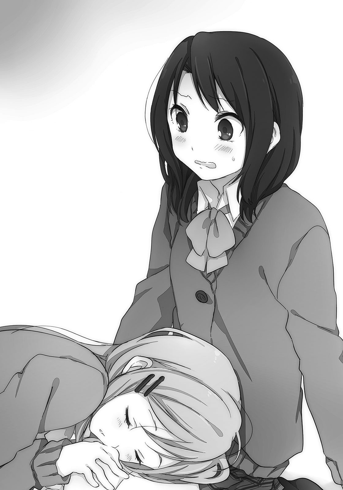「こっちの方が柔らかくて、いいねぇ」
しまむらがにへーっとする。枕を求めていたみたいだ。こっちはへぇそうなんだ、と冷静を装って流そうとしても舌が回らない。頬にこたつを押しつけているみたいに、熱が宿る。
「ね、眠いの、かな」
「んー、ねないよー。おきへる、へーひ」
横顔が潰れたまま、しまむらが億劫そうに答える。言葉どおり、目は開いた。
「寒くない？」
「ぜんぜんっ、へーき」
「あ、そう。はんてん着る？」
しまむらが寝っ転がったまま、手を振って引っかけたはんてんを掲げる。勧められたし本当は寒かったので、「じゃあ」と袖を通す。制服の上に更にはんてんを重ね着すると、背中や肩がもこもこになって身動きが取りづらくなる。でも着た途端、汗が噴き出るようだった。
これは多分、緊張に伴う冷や汗だけれど。
「しまむらって、えっとー、クリスマスとかどうしてる？」
声が途中で裏返りかけた。なんとも遠回りに、さりげなくを装ってクリスマスの話題を振る。
しまむらが眠たげな目つきのまま、顔を動かす。肌で擦れて盛り上がっていた頬を普通の形に戻してから、私の質問に答えた。
「晩ご飯にから揚げが出る。あとケーキも食べるよ、ロウソクは差さないけど」
「ふぅん……よくありそう」
統計取ったわけじゃないけど、それっぽい。家によってはから揚げがケンタッキーとかモスバーガーのチキンに替わるのかな。七面鳥は多分、食べる機会がない。
「妹はまだクリスマスプレゼントもらってる。サンタさんも信じてるし」
「サンタさんかぁ」
懐かしい響きだった。でも信じているってことはやっぱり、いないんだよね。
「しまむらは何歳まで信じていたの？」
「最初から信じてなかった」
素っ気ない返事だった。
「そんな人のいいおじさんはいないでしょ、ふつう」
しまむららしい考え方だった。『寛容』ではあるけど優しくない、しまむらならではの。
ところで、テスト勉強ってなに？
「安達は？」
「私は、保育園にいる人だと思ってた」
「なにそれ」
「保育園の大人しか、サンタの話をしなかったからだと思う」
家ではそんな話をしなかった。一度だけ母親に聞かれたけど、なにが欲しいというのを決められないまま黙っていたら、翌年から話題にものぼらなくなった。
欲しいものはたくさんあったのに。
「お互い、あんまり子供やってないねぇ」
「そうかも」
しまむらの意見に同意する。今も子供じゃん、というところはさておいて。
「でもさ、子供のときはもっとバカで、奔放で……あんなので、よく、生きていられたなぁって。呆れるよ……肩こりとは無縁なんだろうねぇ、きっと」
再び目を瞑って、しまむらが薄く笑いながら回顧する。羨ましさも垣間見えるような口ぶりで心情を吐露して、私の膝の上で居心地よさそうにしている。その姿からは珍しく、しまむらを少し幼く感じることができた。膝枕のせいだろうか。いつの間にか緊張は程良く落ち着き、体温の高ぶりにも調整が利いてくる。のぼせるような熱さから、適温に。こたつ布団の中で丸まっているような心地よさを、膝の上から享受しているようだった。
体育館の二階でサボっていた時間から、気怠さだけを取り除いたような。
こんな時間と空間が、ずっと続いてほしいと自然に願う。
「……やめた」
クリスマスの話題を振って、なんやかんやをどうにかこうにかして、誘おうと思っていたけど。
今日はいいや、今度誘おう。
今はただ、しまむらとこうしていたい。
愛おしい子供を、羽で包んで守るように、このまま。
おまけ「肉屋来訪者」
常日頃から正直に生きろと教えられてきたので、買いに来たお客さんに「向こうのスーパーの夕方市でメンチカツも特売やっていますよ」と広告で見たことを教えたら父さんに頭をぶっ叩かれた。正直に生きても得をするとは限らないらしい。今日も一つ勉強になった。
そもそも私に店番させることが間違っていると気づくのはいつだろう。
期末試験が控えているのに手伝わせるのもどうかと思う。いや手伝わなかったら勉強するかというと、ちょっと眠いからこたつに入ってゴロゴロするよとなるけど。見抜かれているのか。
「あ、今日も来た」
正面の潰れたタバコ屋と隣の建物の間をすり抜けて、小さな人影が走ってくる。水色の、少し変わった髪の女の子だ。軽快に、諸手をあげながらこっちに駆けてくる。最近、夕方になるとよく買いに来るようになった。そしていつも同じものを注文する。
背伸びしたその子が短い指を三本立てた。
「ころっけを三つください」
「はいいつもの」
今度はスーパーの夕方市の話はしなかった。父さんに注文して、丁度揚がったコロッケをパックに入れて用意する。それを差し出してきた硬貨と引き換えに渡すと、早速一個をその場で食べ始める。「うまうま」と満足しながら、また正面の路地に消えていった。
毎日買いに来るけど、おやつか家のお使い、どっちだろう。
父さんなんか、何度見かけても見慣れないのか動きがぎこちなくなる。
それとあの子は日野の友達らしい。あいつの友達は変なのが多いなぁ。私は普通だけど。
母さんが家事を終わらせて奥から出てきたので、戻っていいよと言われた。正直に生きる私は素直に戻ることにする。戻る前、首を伸ばすようにしながら頭の上の看板を見た。
『おにくのながふじ』と書いてある。いつ見ても美味しそうだ。おにくのところがいい。
家に帰るとき、この看板を見るのが好きだ。小学、中学とあだ名が肉藤になったのもこの看板の影響だろうけど。長々見ているとお腹が空くので、早めに切り上げて奥に入った。
店先から少し入ったところで靴を脱いで、居間にあがる。
お昼過ぎからは家の中まで揚げ物臭い。私は慣れているのでなにも感じないけど、この匂いを嗅ぐとたまらん、とか言っている友達もいる。丁度そいつがこたつから肩を出した。
こたつに入って金時豆を摘みながらテレビを観ていたそいつが寝転んだまま振り返る。空っぽになった発泡スチロールのパックを突き出して、笑顔で図々しく注文してくる。
「おかわり！」
「おかえれ」
要求をはね除けて、別の場所からこたつに足を入れる。日野がまたテレビに向き直る。
そもそもこいつはなんでいつも家にいるんだろう。保育園に通い出した初日から気づけば一緒に遊んでいて、そのまま私の家にあがってコロッケを食べていた覚えがある。どちらから先に声をかけたかは忘れたけれど、その頃はお互いに下の名前で呼んでいた。ちゃん付けもしていた。いつの間にか名字の方で落ち着いて、それは小学校の低学年ぐらいから変わっていない。
最初から日野は小さかった。私の背丈を追い抜いたことは一度もない。
「日野ってなんで大きくならないんだろう」
「おぅ喧嘩売ってんのか」
日野が胸に伸ばしてきた手を払いのけながら、不思議だなぁと見つめる。日野は肉より魚を好んで食べていたけど、その差かな。魚の差かな。ちょー面白い。でも私の母さんは魚好きだけどけっこう大きいので、気合いかなにかの差かもしれない。まぁ日野が大きくても小さくても、どっちでもいいんだけど。大抵一緒にいて隣を歩いているから、探す必要もないし。
そういえば、日野の名前はすぐに覚えたなぁ、と今更だけど気づいた。初めてできた友達だから嬉しかったんだと思う、多分。今は揚げ物の匂いみたいに慣れてしまって、ありがたみを感じない。
空気を見ることはできないし。
「日野って私の名前忘れたことある？」
「……お前、やっぱりわたしのことバカだと思ってるな」
日野が起き上がる。こたつ机に顎を乗せたまま、ジト目で私を睨んできた。そんなつもりはないのによく誤解される。ついでに私も時々バカ扱いされる。なんでかねぇ。
「……もう一つ、そういえば」
昔を振り返るついでに、思い出したことがあった。……懐かしいなぁ。
しかし、考えてみるとなにか意味があったのかな。よし、試してみるか。
「日野ちょっと」
こたつから出て手招きする。ついでに眼鏡を外す。当時は目が悪くなかったので。
「あん？ なになに、なんかくれんの？」
「うんあげる」
「おぉマジか」と日野がこたつから出てくる。四つん這いでてこてこと私の側に寄ってくる。金時豆のお代わりでも期待しているのだろうか。困ったやつだなぁと思いつつ、額に手をやる。
「お？」
日野の前髪を掻き上げて、小さな額に唇をくっつけた。硬さが昔と一緒だった。
ちょっと冷たいかな。ま、冬だし。
日野は少しの間固まっていたけど、れろんとデコを舐めたら仰け反るようにしながら離れる。今度は日野が自分の手で前髪をあげながら、目を白黒とさせている。反応が昔とちょっと違うなぁ。あの頃はお返しー、って私にもちゅーしたものだ。なんか一日中していた気もする。
「な、なんだよ急に」
「子供のときはよくしていたなぁと思い出した」
そう言うと、日野が「そうだった、か、あ、そうだ」と表情が忙しなくなる。
「でも昔は昔じゃん。今は……あー、っとさぁ」
「なにか変わった？」
私が尋ねると、日野が黙る。目を左右にゆっくり泳がせた後、脱力したように肩を落とす。
「……変わんないよなぁ」
「お互いね」
髪をあげたまま、日野が笑った。
それを眺めていて、なるほどこれか、と理解する。
空気を見ることはできない。でもその温度を、肌で感じた。
『しまちゃんは、おとなになったらおっきいのになりますっ』
小さいわたしはそんなことを言っていた。多分、夢だと思う。
周りの子からしまちゃんと呼ばれていて、それがすっかり気に入って自分でも使っていた。今振り返ると気恥ずかしい。自分をちゃん付けで呼ぶなんて、とうつむいてしまう。
これは幼稚園で年長組のときに、将来の夢みたいなものを聞かれての答えだった。自分のことだけど、なんでこんなことを言ったのか覚えていない。背の高い子に憧れていたんだろうか？
あの頃のわたしには周りがどんな風に見えていたんだろう。
空は高く、大人も高く。どこまで走っても息切れなんかしなかったし、どんなものにも興味を示して駆け寄っていった。甘い飴玉を舐めていれば苦悩なんか一緒に溶けてなくなり、煩わしい人間関係なんていう皮に包まれることはなく、あるのは大きな友情の塊だけだった。
あんな脳天気に、自分を剥き出しにしてよく生きていられたなぁと、呆れるばかりだ。
最近、安達の様子がおかしい。
いや前から時々挙動不審になることはあったけれど、そういうのとはまた違う変化だった。まず、視線を感じる回数が増えた。授業中にふとそれに気づいて遠くの席を見ると、大抵、安達と目があう。あうとすぐに安達はうつむいて、教科書を開く。せめて最初から開いておいた方がいいのではないか、とどうでもいいところを指摘したくなる。それがおかしいの一つめ。
二つめに、話していると唇と肩がふるふるしている。下唇がうねうねと波線を描いているし、肩も上下の動きが激しい。なにかを我慢しているような、もしくはなにか吐き出そうとして踏み切れないでいるような感じが続いている。唇が筋肉痛にならないのだろうか。ならないね。
三つめに、期末テストで英語の点数がわたしより良かった。
……外国を旅行するときは安達を連れていけば安心だ。それは冗談として。
多分、わたしになにか言いたいか、聞きたいことでもあるんだろうなぁと思う。そう感じたのなら『言いたいことがあるのですね？』とか呼び水になってあげればいい、とは考えるのだけど、そんな言いづらいことを促して、内容が重いものだったらどうしようと躊躇してしまう。
たとえば、お金貸してとか。妹頂戴とか。まずあり得ない、というかないけれど、それぐらいの『なんでわたしに言うのかな？』という相談なんて持ちかけられたら困る。
だから今は静観を決め込んでいるのだけど、これが三日続くとさすがにこっちも見なかったフリの限界だった。この授業が終わって昼休みになったら、昼ご飯を食べるついでにちょっと聞いてみることにした。こういうときは得てして想像するほど深刻な話ではないことが多い。
統計とか取ったわけではないけど、そういうことにして気楽にするよう努めた。
日本史の授業が終わって、教室内の空気が弛緩する。期末試験と答案の返却も終わって、結果の善し悪しはともかく終業式と冬休みを待つだけとなっていた。寒気の吹き抜ける夜に小さな灯りが寄り集まるように、寒いながらも明るい調子で声が飛び交っている。
テストで悪い点を取ったことを笑い話にする人もいるし、クリスマスに彼氏とどうこうなんて言っている女子もいる。クリスマスかぁ。あと十日もしたら、ヒゲを生やしたお爺さんがやってくるわけか。妹は今年もサンタからクリスマスプレゼントをもらえる。まだ信じているみたいだ。一緒の部屋で寝ているわたしにはなんの贈り物もないので、『ねーちゃんわるいこー！』と毎年勝ち誇ってくる。それをお仕置きなしに許しているあたりいいお姉ちゃんだと思うのだけど。
まぁそれはさておき、と教科書を机の引き出しに片づけてから、財布片手に席を立つ。日野と永藤がお弁当の包みを開いているのを横目に見ながら、ぼーっと頬杖をついている安達のもとに向かう。教科書も片づけないで、考え事に耽っているのかわたしにも気づかない。
あんまり不注意なので、そのまま声をかけるのがもったいなく思えた。後ろに回り込んで、安達の頭に顎を乗せてみる。すると安達が飛び跳ねて、顎を強く打ち抜かれることになる。
仰け反るように椅子から滑り落ちて、床に手をつきながら慌てて振り向いた安達が、顎を押さえているわたしを怯えた目で見上げる。こっちは舌も噛んで、少し涙が浮かんできた。
「しまむらか。あー、あー、ビックリした」
服の上から胸を押さえながらも、安達の顔のこわばりが解ける。相手がだれか分かって恐怖も薄れたらしい……と思ったけど目はさっきより激しく泳いでいた。
「というか、なにしてるの」
「ちょっと楽しんでみただけ。あーいた」
この間も妹に顎を頭突きされたのに、わたしはまったく学習しないのか。手を取って安達を立たせる。安達の立ち回りが派手だったので、周囲の注目を集めてしまっていた。安達も気づいたらしく、バツが悪そうにしている。さすがに少し責任を感じたので、まずは安達を教室の外に連れ出すことにした。取っていた手をそのまま引っ張って、廊下に出た。
「なに、なに。あの、なに」
安達の目がくるくると回って、心なしか頬が赤い。動揺が続いて落ち着かないせいだろう。手を離してからその肩を叩いて「はい深呼吸」と促してみる。壁に背中を預けた安達が言われたとおりに胸を膨らませて、大きく息を吐く。効果はあまりないのか、目は止まらない。
しばらくそのまま深呼吸を繰り返させてみることにした。呼吸をする度に正面の安達の赤面が深まっているようにも見えるけど、呼吸のエネルギーで熱が高まっているとか、そういう格好いいことをしているのだろうか。
でもこうして肩に手をやって向き合うと、安達の方が背は高いよなぁと実感する。前から知ってはいたけど、差は特に縮まっていないみたいだ。悔しくはないし競う気もないけど、自分より背の高い同級生が『おねえちゃん』とわたしを呼んで、その頭を撫でていたのだと思うとなんとも微妙なものがある。一体どういう人間関係なんだ、わたしたちは。
深呼吸を続けてもあまり効果が出ていないようなので、肩から手を離して打ちきる。他になにか良い方法はないかなとうろうろして考えていると、その間に安達が落ち着いていた。きょろきょろと動き回っていた目も動きを止め、頬の赤みも引き始めている。深呼吸の効果が遅まきにきたのかもしれない。これでようやく話ができそうだ。
わたしが余計なことをしなかったらこんな手間、必要なかったのだけど。
「よぅあだちっち」
日野を真似して少しおどけながら声をかけてみる。仕切り直しの意味も含めて。
「しまむらには、普通に呼んでほしいんだけど」
安達がぼそぼそとお願いしてくる。前も言われた気がする。言われなかった気もする。
「安心しなさい、多分二度と使わないあだ名だから。で、だ」
昼ご飯はやめとこうかな、と舌の調子を考慮して引っ込める。痛い目を見てしまった。いらんことしないの、と親に叱られたときを思い出す。
舌の上にはまだ血の味が残っていた。嫌な調味料を用意してしまったなぁ。
「最近、なにかなと思ってさ」
「なにって」
「あー、うん。こっちをよく見ているようだから」
遠回りに質問するのも面倒なので、直接聞いてみた。安達が露骨に目を逸らす。
表情は変わらないのに、目は嘘をつけないらしい。
「そんなこと、あったかな」
「あるの」
断定する。それから安達の目の逃げた方向に回り込む。安達はすぐに気づいて反対方向に。そうしたらわたしも……とうろうろして三周ぐらいしたところで飽きて、次の質問に移る。
「なにか言いたいこととかある？」
安達はすぼめたような唇をちょこちょこと、窮屈そうに動かす。
「あるには、ある」
「ふむふむ。じゃ言って」
こっちとしても気になるので、早めに聞いてみたかった。文句か、不満か。言いづらいとするならそういう方向かなと予想しているけど、それを言わせようとするのもおかしな話だ。
安達がぐむぐむと、口の中で話し始める。聞こえないんですけど。
「その、なんだろう。冬っていうか、来週っていうか、あ、十日ぐらい？ の」
もじもじしながら、まとまりなく呟き続ける。その言葉の群れに噎せるように喉が詰まり、安達が自分の胸を叩く。非常に忙しい。飛ぶために助走をつけるべく、ニワトリが走り回っている。そんな構図を彷彿とさせる慌ただしさだ。ニワトリは飛べないけど、大丈夫だろうか。
目をくるくる回したまま、安達が形ばかりこちらを向く。そして、言った。
「もう少し度胸、あ、もう少し、考えてから言う」
「……そう」
胸を叩いた結果、準備不足との返事が来たみたいだ。それなら仕方ない……のかな。
こっちも心配になってきた。心の張り裂けるようなこと言われたらどうしよう。裂けるほど繊細な心を持っているかというと疑問だけど。
すすす、と安達がすり足で逃げたそうにしていたので道を譲ると本当に教室へ戻っていった。小走りで逃げるように。わたしは廊下の冷え込みに今頃気づいて、一度軽く震えて。その身体の揺さぶりで落っこちたのか、一つの思い出を拾い上げる。色彩を曖昧とする、小さな記憶を覗き見る。
そういえばあんな子が友達にいたなぁ。そんなことを、思い出す。
わたしが無防備だった頃の話。幼稚園で、特別に仲良しの女の子がいた。
一言で言うと、なんというか安達みたいな子だった。実は本当に安達でしたというオチは名前が違うのでない。わたしと安達にそんな運命的な繋がりはないのだ。
あの頃のわたしはムダに行動的で隙だらけで、前進しか知らなかった。そのわたしの後ろにくっついてきていたのがその子で、まるで自分の影が形になったように離れなかった。横ではなく後ろに、わたしの後ろに隠れていた？ のかなと今となっては思う。人見知りがひどくて、幼稚園に通い出した最初の日、門のところで母親の手にしがみつきながらわんわん泣いていた。
そのときに横を通りかかったわたしが、なぜかその子の手を引っ張っていって幼稚園の下駄箱まで一緒に向かったのが友達付き合いの始まりだった。今なら多分、かかわらないのに。
名前を教えて、しまちゃんと呼んだのはその子が最初だった。他の子にもそれが広がってそう呼ばれるようになったことに、不満そうな顔をしていたのをよく覚えている。そういうところに安達を感じる。順番で言うと逆な気もするけど、今のわたしが思い出すと安達→その子になってしまう。思い出は目の前にあるわけじゃない。
当時のわたしは後ろにひっついてくる子がいると、探検隊っぽいな！ と喜んでいた。アホだ。もちろん、隊長気取りだった。わたしの中では幼稚園とご町内は未開の地で罠だらけで、それをくぐり抜けている気分だった。未開なのに罠があるとはどういうことだとか、細かいことは気にしない。とにかくその子と出かけたり、幼稚園の中を走り回ったりするのが好きだった。
その子の方は別段、動き回ることを好まなかった。むしろ嫌がっていた素振りもあったけど、わたしは自分の都合を優先していた。振り返るとなかなかに自分勝手だ。でも人の都合を考慮しない、というのは立場や考え方は異なるけれど今も似たようなものではないかと思う。
女の子は自己主張の強い性格じゃなかったけど、興味を示すものもあった。その子はビー玉とか風鈴とかキラキラしたものが好きだった。そういうものを見つけたときだけ、わたしの後ろから離れてそっちへ走っていく。そうするとわたしがその子を追いかける立場になる。
そういうとき、わたしはキラキラしていないのか、となぜか怒っていた。
どうしてそんな心境が生まれるのか、今では他人事のように理解しがたい。
その子とは小学校にあがって、クラスが別々になってからまったく会わなくなった。喧嘩したわけではないけれど、友情を維持できる距離ではなかったらしい。主に、わたしの方が。
風の噂だけどその子は中学生になってから、わたしたちみたいななんちゃってじゃなくて本当の不良さんになっちゃったらしい。道を逸れた場所にどんな綺麗なものを見つけたんだろうと、ちょっとだけ、気になった。
「んぇー」
台所のテーブルの上で潰れながら、眠気と戦っていた。
「どこが戦ってんだ」
母親に頭を小突かれて、しぶしぶ起きる。冬場はどうにも寝起きが弱い。わたしの身体は冬眠を求めているのかもしれない、と背中がぶるりときて身震いしながら考える。台所は暖房器具によって暖まっているけれど、それでもパジャマと背中の隙間に時折、冷たい風が入り込む。
テーブルと頬がくっついていた箇所の曇りを指で消して遊んでいる間に、朝ご飯が出てきた。ふりかけご飯、しらたきとたらことピーマンの和え物。昨日の夕飯の残りものだ。父親がお正月休みによるお腹周りの成長を今から気にしているので、あっさりめの食事が増えつつある。
それに不満を述べるのは、ダイエットと無縁の妹ぐらいだ。その妹は既に朝ご飯を食べて歯も磨き、小学校に出かけるところだった。なんでも朝マラソンというのがあるらしい。聞くだけでうへーとなる。そんな予定があるのにうつむかないで家を出ていく妹はえらい。
「えらいし早いし言うことないねー、うんうん」
「もそもそ噛んでないではよ食べんかい。洗い物片づかないでしょ」
食洗機の側面を叩きながら母親が急かしてくる。よく噛んで食べなさいと小さいときは教えてもらったのに、今では急げと背中を押される。親の教えを話半分に聞いておくべきだった。
通学用の帽子をかぶった妹が顔を覗かせてくる。
「行ってきまーす」
「はいはい、気をつけてね」
母親に挨拶した後、わたしの方を向いて勝ち誇るように、にやにやする。
「ねーちゃんも早く学校行けよー」
「うるさい、高校生は日が昇り切る前に学校に着けばいいの」
「だれが教えたそのバカルール。三年早いわ」
母親にまた小突かれる。反論のつもりが妹をきゃっきゃと喜ばせるだけになってしまった。
そうして妹が出かけた後、向かいの席に着いた母親がお買い物メモを前にしながら唸っている。スーパーに行ってなにを買うか決めるために先に夕飯の献立を考えて、それが難航しているみたいだった。握っていたボールペンをテーブルに置いてから、溜息をつく。
「毎日献立考えるのってめんどいわー」
「そーね、がんばってね」
「あんたなんか食べたいものない？」
聞かれて答えて、実現することはあまりない。スーパーに行って気分でころころと変更してしまうことが往々にしてある。そういうことが何度かあると、まじめに考える気にならない。
「カレーとかでいいんじゃない？」
「んー……肉屋の総菜とかでいい？」
「お好きにどーぞ」
なんという不毛な会話だ。肉屋ということは、永藤の家か。
あいつも時々、店番に駆り出されるらしい。……ちゃんとこなせているのかな？
「ねーちゃんねーちゃーん」
出ていったはずの妹が戻ってきた。給食袋でも忘れたのかな、と思ったけど母親じゃなくてわたしを呼んでいる。妹が台所に入ってきて、わたしを見た。ごく短い時間なのに、外の空気に触れた鼻がもう赤くなっている。
「ねーちゃんの友達が来てる」
「はぁ？」
懐かしくも新鮮な言葉すぎて、最初はなんのことか分からなかった。
ゆっくりと咀嚼するように、一つ一つ、その言葉の意味を理解する。
「えぇと、友達？」
だれ、とどちらを先に聞くのか迷って、動揺のせいか変な方を選んだ。
「どこに？」
「外」
玄関の方を指差す。そりゃあ、外にいるだろうけど。家の前にいるってことかな。
「友達ってだれよ？」
「こないだ家に来た人」
「こないだ……安達？」
なんで安達が学校を通り越してわたしの家に来ているのだ。そんな大胆に道を誤るお茶目さんではなかったはず。でも安達だとしたら、理由はともかくわたしを待っているのだろうから会いに行ってみることにする。箸とお茶碗を一旦置いてから、台所を出た。
後ろに妹もくっついてくる。台所で脱いでいたスリッパを履き忘れたせいで、冷え切った廊下を素足で踏むことになる。わたしの身を包んでいた暖気はすぐさま凍りつき、靄がぱりぱりと音を立てるようだった。しかもそれが肌にひっつくように冷え込む感じでタチが悪い。
「うひゃうひゃ」と身を縮こまらせながら扉を開いて外に出ると、妹の話どおりに安達がいた。
青い自転車にまたがり、お出迎えのように家の入り口に控えている。制服姿で鞄もちゃんと籠の中にあった。安達がすぐこっちに気づいて、自転車と一緒にぎこちなく前進する。
家の前は通学中の小学生が集団で通っている最中だった。通学路なのでこの時間帯はいつもうっとうしいほどの数が利用する（出かける両親談）。安達は端っこを、ハンドルを削るようにしながら謙虚に動いている。うつむきがちで、こちらを気にするように視線を何度もよこす。
「緊急の用……ってこともないだろうし。なんだろね」
用件を想像しながら、振り向く。距離を保ったままこっちを見つめている妹に手を振って、学校行けと促す。妹はこちらを何度か振り返りながらも、最後は手を振って小学生の流れに溶け込んでいった。手を振り返して挨拶が済んだ後、その手を引っ込める前にもう一人の妹（仮）に挨拶する。安達はじりじりと移動し続けて、今や目の前まで来ていた。そしてなぜか、控えめに手をあげていた。一緒に妹に挨拶していたらしい。なんとなく、安達っぽい。
「やーやー安達」
「ち、ちーっす、おはようっす」
「なんで体育会系気取り？」
安達なりに爽やかさを強調すると、そういう方向に行き着くんだろうか。
こんな早朝に安達と会ったことはないので、朝日の中にいる姿を見るのは新鮮だった。
髪の毛も整えて、きっちり着込んでいる安達に対してわたしは髪の毛寝起き、パジャマのままといい加減だけどまぁいいかと目を擦る。いつかの安達みたいに、十五分も家の外で待たせるには辛い季節だし。それでも安達がわたしの立場だったら、外で待たせる気もする。
「で、どしたの？ ていうか朝早くない？ あれ、何時ぐらいに来たの？」
質問をまとめてぶつけてみる。安達は白い息を細かく吐きながら、目を少し泳がせる。
「用事はちょっと話があって、朝は普通かなと思うし、今来たところ」
律儀にちゃんと回答してくれた。いつかの腹筋への質問といい、安達は根がまじめだ。
でも来た時間は本当だろうか。いや仮に正しかったとしても、だ。
「んー」
安達の頬に手を添えてみる。触れた瞬間、安達の目がびくっと跳ね回ったのに少し驚いた。でもそのまま肌の温度を確かめる。わたしの手よりずっと冷たい。安達の家から自転車で走ってくればこう冷えもする。鼻と頬に紅ショウガを忍ばせているように真っ赤だし。いくら着込んでも防ぎ切れないものがあるし、なにより、わたしも寒い。だから安達の手首を取る。
「寒いし家の中で話そう」
「ちょ、ちょ」
安達を自転車から下ろして、車庫の中に停めさせてから家へ引っ張り込む。途中から安達の戸惑い、抵抗がなくなってすんなりと靴を脱ぐ。廊下にあがってからどこに案内するか迷ったけど、食べている途中であることを思い出して台所の方へ向かった。
「お、お邪魔します」
「はーいいらっしゃい」
安達の小声に軽く返して、台所へ入る。
「ただいまー」
「お早いおつきで……って、あらあらお友達じゃねーの」
足を伸ばして天井を向き、だらけていた母親が人の目を気にしてシャキッとする。「お邪魔します」と安達が小さく頭を下げると、「はいはいいらっしゃい」と、わたしと似たようなことを言った。少し面白くない。扉を閉じてから、いつもの席に着く。安達が入り口で立ったまま戸惑っているみたいなので、「そこ座ったら」と妹の使っている席を勧めた。
「そうする」と鞄を脇に置いて、安達が腰かける。家の台所に安達と座る。……違和感がすごい。安達も萎縮したように小さくなっているし。楽しそうなのは、母親ぐらいだ。
「安達ちゃん、ご飯食べるの手伝ってあげて。うちの娘は食べるの遅くて困るよー」
「余計なこと言わなくていいから」
さっさと食べてわたしの部屋にでも行こう。ピーマンとご飯を大口でかき込む。
「あの、家で食べてきましたから」
安達は安達で、きまじめに答えなくてもいいのに。
「そりゃあそうでしょうねぇ。なに食べた、美味しいもの食べた？」
なんでそんなに食いつく。母親なりの冗談なんだろうけど、安達がちょっと引いている。
「パンを一個」
マフラーを外しながら安達が答える。パンは一枚と数えるのでは、と思ったけどそれは食パンだけか。しかし少ない。更に言うと、その朝食のお供は水だろうと思う。もう少しがんばれば植物にでもなってしまいそうな食生活だ。光合成で栄養がまかなえるなら、昼ご飯代が浮いて助かるかもしれない。というかわたしもまじめに授業を受けるようになったのだから、そろそろお弁当をもらってもいいんじゃないかと思う。棚の中でお弁当箱が暇そうにしているし。
「もっと食べないとーとかお母さんに言われない？ いやぁ言うでしょ、親っていうのは娘がムダに胴回り気にして食を細くすると不安になるのよ。ちょい太い方が安心する」
そこでなぜ、わたしを一瞥する。ダイエットのことか、それともちょい太の方でこっちを見たのかで、その視線は大きく意味を変える。なにか言ってやりたいけど大口で頬張っている最中なので声が出せない。安達まで人のお腹をちらりと盗み見た後に、淡々と言う。
「言われないです。あまり話さないし、家にもいないし」
言葉に含まれる乾いた空気を察してか、「あらそう」と前屈みだった母親が身を引く。
安達の母親との仲は、特に変わり映えしないらしい。以前のやり取りがきっかけで変わる、なんて劇的な仕掛けはわたしたちの毎日に潜んでいないみたいだ。わたしの成績も急激に伸びるわけではないし。なにか、大きなものの背中に乗って遠くへ運んでもらえないのなら、自分の足で歩いていくしかない。それで色んな人より出遅れて、間に合わなくなったとしても。
その後は、わたしが食べ終わるまで無言の時間だった。
食べ終わってから急いで台所を出る。安達も椅子から飛び跳ねるように離れて、後ろを追ってくる。椅子を戻す仕草や反応が妹に似ていて、なんとも微妙な気分にさせられる。
「ちゃんと学校行けよー、なんか浮かれてサボるなよー」
「わーかってますちゃんと行きますよーはいはい」
適当に返事して奥の部屋へ向かう。途中で振り向くと、安達が控えめに微笑んでいた。
「笑うところあった？」
あったに決まっているけど意地悪く聞いてみる。安達は「別に」と、笑顔のまま答えた。
奥の部屋はカーテンこそ開け放してあるけれど、寒々しい。日差しを取り込んだことでの明るい印象と室内温度が釣り合っていない。暖房をつけるかは少し考えたけど、一応つけることにした。長々と食休みを取ることはできないし、外へ出かけることをためらうようになる危険もあったけどお客さんもいるので大盤振る舞いした。
片づけて畳んである布団の上に座る。安達には黄色いクッションを投げ渡す。窓からの陽光を浴びて背中は軽く熱を感じるけど、前面は冷え切っている。ジッとしていられず、布団の上で身体が跳ねる。安達はマフラーを巻き直して、キョロキョロと部屋の中を見回していた。
前に来たときから変わっていなくて、面白みなんかないと思うのだけど。
「それでー、話って？ 昨日も聞いたけどね」
今日はその昨日の続きだろうか。もう考えがまとまったのかな。促されて、安達が前髪を弄りながら顔をあげる。わたしを正面から見据えるその目は少し充血して、顔色も優れない。
寝不足になるほど悩み抜いてきたのだろうか。段々、なにか申し訳なくなってきた。
「しまむら」
「は、はい」
「どこか遊びに行かない？ みたい、な」
そこまで言って、安達が目を逸らす。
「ん？ うん……」
頷きながら、え、それだけ？ と内心で首を傾げていた。
そんなことでずっと悩んでいたのだろうか。別に意を決するとか、考えるとかそういうものがまったくの不要に感じられる用件だった。悪口や不満でもないし、拍子抜けだ。
それに、そんな程度のことなら学校で話すか、メールでもすればいいのに。わざわざ家まで来るほどのことかな。どうも安達のことがよく分からなくなってくる。いや、元からそんなに知らないけど。
「いいけど、放課後？ まさかこれから学校サボって？」
「あ、今日じゃなくて、ですね」
「ですね、はい」
区切った安達がクッションの上で正座し始める。つられて、わたしも崩した足を引っ込めた。
安達が膝に手を乗せて、もぞもぞしている。いつ行くかなんて、言いづらいことにはとても思えない。なんだろうなぁと足を擦りながら待っていると、安達がうつむいたまま口を開く。
耳まで真っ赤に染めながら。
「今月の25日とか、どうかなって」
「25ねぇ……えーと」
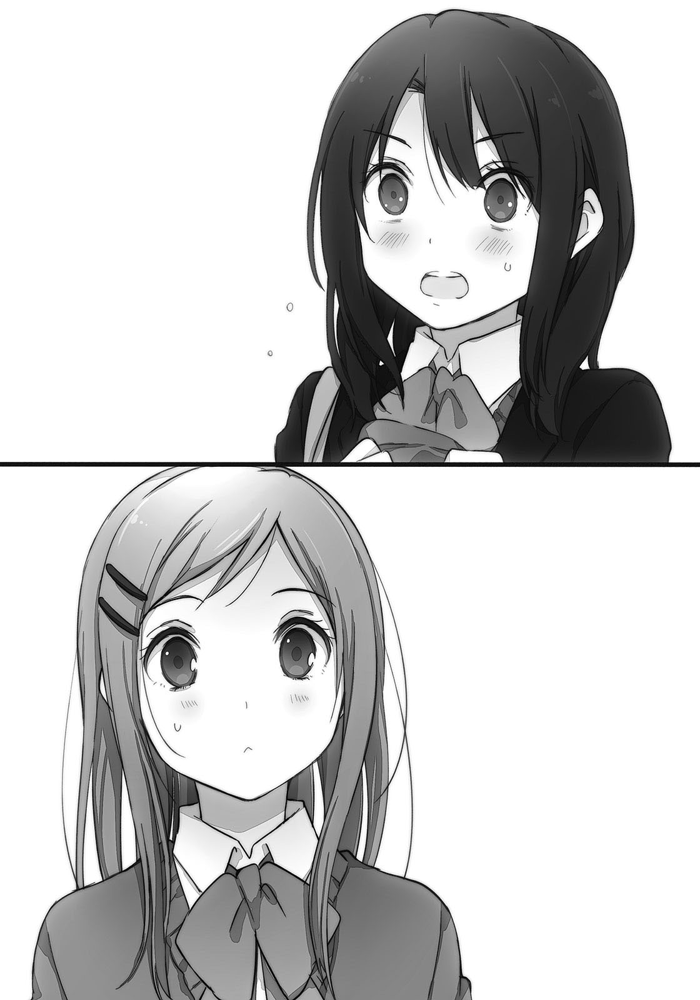曜日ではなく日付を指定してきて、最初はピンとこなかった。何曜日だったかなと考えてしまうほどだった。でも今月の、ときてそれが12月であることに気づき、12月25日がどんな日であるかというところに行き着いて、思わず目を見開いて安達を見つめてしまう。
「25日って」
「うん」
安達が首を縮めながらうつむく。マフラーで顔の下半分が隠れてしまう。
「クリスマスだよね」
「うん」
安達がへこへこ頭を振る。なにかに耐えるように身体を硬くして。
そこを認めるということは、日付を指定した意味はちゃんとあるみたいだ。
……え、意味？
クリスマスを指定して誘う。安達の赤面とあわせてなんだか意味深だ。まさかわたしとクリスマスにデートしたいってことだろうか。それはとても摩訶不思議なことじゃないか。
わたしと安達の組み合わせで、クリスマスに出かける理由が成立してしまうなんて。
「んー……」
目を瞑る。これは、安易に口を開いていいものではない。
なんで、と聞いてしまうとわたしたちの関係の脊髄がぐにゃりと曲がってしまいそうな気がした。それは治すのに多大な努力と手間暇が必要で、わたしはそこまでするのか？ と考えると寒々しい答えがすぐに見えてしまう。だからその質問はできない。とはいえ、ねぇ。
クリスマスに女二人でどこかへ遊びに行く、というのも案外ある話なのかも。あまり外に出たことがないし駅前や繁華街にも行かないので、本当のところは分からないけど。ただ安達が言いづらそうにして、何日もかけて決意を固めなければ誘えなかった、その理由は理解した。どんな意図があるにしても、それは大胆な提案だからだ。なにを考えている安達。
わたしの想像する重さとはまた異なる、振り払えない靄のようなものが頭から肩にのしかかる。安達は反省しているみたいに正座してうつむいたまま動かなくて、それ以上の説明がない。聞かれたのはわたしだから、返事を待っているということなのかな。おいおい困るよ。
なんで？ がダメならじゃあなにを聞く？ と考えて、次の事柄に行き着く。
クリスマスに、なにをするかだ。
「どこに行くの？」
「まだぜんぜんなんにも考えてないけど」
えらく早口だった。
「なにするの？」
「まだぜんぜんなにも考えてないけどっ」
更に早くなった。繰り返せば最後は音速を超えるんじゃないかと思うほどだ。無理だ。
「考えて、ないけど。どう、だろうって」
ちらちらと、上目遣いで安達が反応を窺ってくる。ヒーターがようやく動き出したけど必要なかったかもしれない。寒さを感じている余裕は、恐らくお互いに失われていた。
背中を焼くような光が強まり、弱まり。雲に隠れて、姿を見せて。そうして時間と空は淀みなく流れているはずなのに、この部屋の中だけは物体が静止し切っているように思えた。
安達は、……心の中でまで言い淀むのは初めてだ。安達は、家にいてクリスマス気分を味わったことがないから、そういうのを求めているのかもしれない。そこで安達唯一（多分）の友達であるわたしに、一緒に出かけてくれと頼んだ。
こんな感じでどうかな。相手の心情をどうだろうと形作るのもおかしいけれど、ここらでガッテン、じゃなくて納得できないものだろうか。安達じゃなくて、わたしの納得する線の話だ。
だって、それ以外だと困ってしまう。安達の態度といい、赤面といい。
これではほとんど、告白というか表明みたいなものじゃないか。
わたしはあなたのこと大好きですよーって。
そんなのだったら、いきなりなにを言い出すのだと驚くなんてものじゃない。
「ん、んー……」
困ったなぁと引きつり笑いが浮かぶ。無理に聞き出すべきじゃなかったかも、と少し後悔。するにしても25日を過ぎてからの方がよかった、のだけれどそんなこと、予見できるはずもなく。こうしてわたしは窮地に立たされる。言葉が出てこない。
安達の足がばたばた浮き上がり、逃げたそうにしているのが伝わる。いや逃げる前になんとかしていってほしいのですが。まいた種は自分で刈り取るべきだし。そういうわたしの視線を受けてか、安達が弁明でもするようにたどたどしく説明してきた。
「あ、別に大した意味はなくて。その、クリスマスっていうか、賑やかな日にだれかと、遊んでみたいのかな、かなじゃなくてそういうの、やってみたかったから」
「……ふぅん」
そういう方向か。だれかと一緒にいたくて、かぁ。それだとわたしの考えた理由も案外、的外れではないのかな。まぁ安達の意見が嘘じゃないなら、ということが前提だけど。
友達を疑うのはよくないな、うん。都合のいいときは、妙に信じてしまう。
本来は家族に頼むべきなんだろうけど、この歳になってそんなことを素直に言えないし。安達の家庭事情を考えるとなおさらってところだと思う。
だからわたしにおはちが回ってくる。他に友達がいないから。
なんだ、消去法じゃないか。
ホッとするような感じだ。
わたしと、ではなくだれかと、を安達が望んでいるなら。
そんな理由なら、まぁ、いいかなと前向きに受け取ることもできた。
「夕飯の前には帰らせてもらうけど、それでいいなら」
そう返事をすると、安達の背筋がぴんと跳ねるように伸びて、こちらを向く。
「ほんとに？」
「安達が行き先とか全部考えるならね」
夕方には家にいて、家族とご飯を食べる。なんだかんだ、いないと妹が寂しがりそうだし。これがあと二年、三年すると姉なんかいなくても困らないし、そもそもクリスマスという行事に心弾まなくなるんだろうけど。でもそういう妹ぐらいの感覚を安達が持っていて、クリスマスに飢えているのだと解釈したら色々と気が楽になった。うん、多分そっちだろう。
一方の安達は、身体が左右に揺れている。実に楽しそうに。尻尾を振るというか、全身がその尻尾にでもなったようにぱたぱた、ゆらゆら。抑圧されていた時間が一気に動き出すように、表情も一気に明朗となる。雪どけしたように、赤く染まった顔がぱぁっと輝く。
潤んだ瞳をそのまま放っておけば、涙の一つまで流しかねない。
そこまで大げさに喜ばれると、また勘ぐりそうになってしまう。……いやいや、と首を振る。
布団の上に座って少し高い位置にいると、尻尾を振る安達が忠犬のように見えてしまう。
安達犬。……なんか本当に種類にありそう。そんな、益体もないことを考えて、時計に目をやる。学校に行かないといけない時間が迫っていた。安達の自転車の後ろに乗せてもらえばもう少し余裕があるけれど、今日の安達に運転を任せて大丈夫かなぁと、不安になる。見るからに浮かれていて、信号を確認して運転できるのか非常に疑問だ。
なんだか全体的にぷるぷるし始めているし。唇がくにゃくにゃ、柔らかく変形している。
ほっぺを引っ張りたいと思うことはあっても、唇を弄りたいと感じるのは珍しい気もする。
「おっ？」
安達がいきなり立ち上がる。顔色と合わせて、山が噴火でもするようだった。
「学校、行かないとっ」
急に安達が舌と目をくるくる回しながら、優等生なことを言い出す。時計を指差すかのように右手を伸ばすのはいいけど、指し示す先には妹の学習机しかない。
「え、うん。じゃあ一緒に」
「いそ、ごう！ いお、いそがないと！ あ、いそがしい、いそがしい！」
滑舌は最悪なのに、手足だけがはきはきと棒のように動く。膝を曲げずに走るという人形みたいな動きを披露しながら、安達がどたどたと玄関に向かってしまう。大慌てで靴を履いているような音と、扉を勢いよく開く音が聞こえてきた。この部屋から出るときは毎回、勢いよすぎないか。待ってくだされ、と時代劇みたいに心の中で呟いてしまう。
「後ろに乗せていってくれよぅ」
今朝はちょっと楽できると思ったのに。振り向いて窓の外を見やると、事件の現場から逃げるかのように全速力の安達と自転車が走り去っていくところだった。立ちこぎで本気だ。わたしがおまわりさんだったら確実に呼び止めるぐらい怪しく、事件の匂いを伴っていた。
前もああやって、一人で先に帰っちゃったことがあったと思い出す。
今回は別に、わたしに落ち度はない……はずなのだけど。でも安達もなにかしていたわけじゃないから、やっぱりわたしに問題があったのかもしれない。せっかく部屋が暖まってきたのに、安達が入り口を開けっ放しにしてしまったからどんどんと冷えていってしまう。
この部屋に留まらずに、早く学校へ行けと寒気に背中を押されるようだった。
「……んー」
最後にもう一回目を瞑って、唸って。まぁいいかと、様々な問題を流してしまう。
わたしと安達。
運命的なものはないけれど、出会ってから積み上げてきたものはある。
というわけで、今年のクリスマスは安達と遊びに行くことにした。
……まぁどうせ。家にいても、サンタクロースは来てくれないから。
おまけ「肉屋来訪者その２」
総菜屋のかわいいキャラクターには常々、微妙な感情を抱いていた。
とんかつ屋のコック服を着たかわいらしい豚ちゃんとか、たこ焼き屋の笑顔のたことか。
「いやだって、そいつらのお肉を売っているわけだよ？ それなのにマスコットを澄まし顔でやっていちゃあダメだろ。なんというかそういう、こう、言葉にしづらいんだけどさ。売る側の都合丸出しで作ったキャラクターって、かわいいけどなんか、見ていると納得いかない。かわいそうっていうのとはまた違って、あわれみ？ そう、あわれみみたいなのがあるのかも」
「へー。日野って難しいこと考えるときがあるのか」
「お前と一緒にするない」
ノーノーと手を振ると、永藤の目がそれに釣られて左右に動く。こいつは利発そうなお子さんですねと言われることはあっても、賢いですねと褒められた例しがない。小学校の通信簿にも、しっかりしているのは見た目だけとか書かれていた。これは書き方が辛辣だったので、書いた教師に永藤の親が抗議して少し騒ぎになったことがあった。当の本人は終業式から続く春休みに浮かれて、わたしとマリ○カートで遊んでいたけど。
「うん日野の言いたいことはよく分かったから、がんばってマスコットを考えよう」
「分かってなさすぎー」
いつものことだった。わたしも独り言のつもりで言っただけなので期待はしていない。
学校から帰って（わたしは帰ってないけど）永藤の家にあがって、愛くるしいマスコットキャラクターを二人で考えている最中だった。永藤の店で使うらしい。だれの発案か知らないけど、おじさんたちに手伝ってくれと頼まれたので断れなかった。永藤一人に任せると謎のキャラクターを生み出しそうだから、わたしを引っ張り込んだらしい。まぁ分かる。お肉屋のキャラなのにうに子ちゃんとか作りそう。さっきはインコをムダにうまく描いていた。
こたつ机の上に色とりどりのペンや画用紙を並べていると、お絵描きして遊んでいるみたいだった。昔を思い出す。永藤はハンバーグを描くのが好きだった。付け合わせはポテトだ。
「なにか思いついた？」
「んー、乳牛のながふじちゃんでいいんじゃない？」
「どんなの？」
え、検討するのか。冗談で言っただけなのに手もとを覗き込んでくる。なんにも考えていなかったけど、「ちょっと待て」と慌てて描き始める。特に思いついたわけでもないのでなにを描くのかと右手に任せていたら、永藤の顔ができあがった。簡略化はされているけど、そのままだ。
永藤がそれを眺めて、「どっかで見たことある」とか言い出す。この家に鏡はないのか。それともわたしの画力では見るに堪えなくて判別できないとでも言うつもりかね永藤ちゃん。
むしろ名前と関連づけて分かれよと、永藤の反応はいつも言いたいことでいっぱいになる。とぼけているというか、間が抜けているというか。こいつちょっと変だぞと意識し出したのは中学生になったあたりで、他の子と比べてテンポが独特なことに気づいた。鈍いわけではないけど、マイペースがひどい。そういう部分は高校で知り合った友人、しまむらと似ているかもしれない。むしろ似ているから、しまむらとわたしたちが友達になったのかもと考える。ただしまむらは人にあわせる部分も持っているけど、永藤にはほとんどない。困ったやつだ。その困ったちゃんとわたしの力作を見比べると、ながふじちゃんの方は眼鏡をかけていない。どうやら、わたしから見た永藤は眼鏡のない方が普通みたいだ。
「いつぐらいから眼鏡かけ出したっけ？」
「小学六年生。急に視力がすとーんって落ちた」
どこに落っことしたのやら。永藤のことだから寝返りを打った際にぽろりと落ちて、そのまま身体で潰してしまったとしてもおかしくない。もしくは欠伸をして、涙と一緒に出ていってしまったとか。なんとも間の抜けた笑い話の似合うのが永藤というやつだった。
でも六年生からかけ出したというなら、納得だ。眼鏡なしの永藤と一緒にいる時間の方が長いからだ。永藤は眼鏡を外したりかけたりが忙しないけど、なにか基準があるのかな。
「ところでこれ、うちと関係あるの？」
「あーないない、ないですね。よし、じゃあこいつでどうだ」
青系のペンを取って、さらさらと描く。デフォルメされた水色の髪の女の子が、湯気の立つコロッケを掲げてご満悦な笑顔を浮かべている絵だ。この間客として来て注目を浴びていたから、まぁ関連がないというわけでもない。本人捕まえて客引きやってもらう方が早そうだけど。
「コロッケちゃんかぁ。じゃ、これでいいや」
「おぅおぅこれがいいやじゃねーのかよ、勝手に命名しちゃってよぉ」
「じゃあ日野にご褒美をあげよう」
人の話をまったく聞いていない永藤が嬉しいことを言ってくれる。
やったぜー、と喜びかけたけどなんだか既視感のある展開だ。
「まさかまたデコにちゅーとか？」
「いらないの？」
永藤としてはそれがご褒美になると考えているのか。……変なやつだなぁ、やっぱり。
お菓子とかより額に唇くっつける方が価値あると思っているのかね、ハハハ。
……変なやつ。いやさっきも思ったけど。何回でも思う。変なやつだ。
「まぁ、いいか。もらっとく」
もらう方もじゅうぶん、変なやつだけど。こたつから出て、前髪を上げる。永藤が四つん這いで近寄ってきて、前屈みの姿勢のままわたしの顎に手をやる。残る手は少し引いた位置にあるわたしの手に重なるように置かれて、冷たい床と暖かい手に挟まれる形になる。
永藤の顔が距離を詰めてくる。そのまま唇にキスしてくるんじゃないかという角度で自然、どぎまぎしてしまったけど進路は逸れて、ちゃんとわたしの額に向かった。永藤の唇が吸いつく。気づけば永藤とわたしの足まで重なるようになっていて、このまま覆いかぶさってがぶがぶ食べられちゃうんじゃないか、というぐらいに傾いていた。永藤とわたしが、ジッと、固まる。
二人で彫刻のように。
わたしの目には永藤の顎や青白い首もとしか映らなくなる。
……長くね？ むちゅーっと、いつまで吸いついてんの？ いやなにかルールあるのかなんて知らないけど。何秒以上は口を離さないようにしましょうとか。厳粛なものがあるのか？
「ほんと仲良しね、あんたたち」
いきなり横から声をかけられて、びくっと跳ねる。肩と腰が。頭も大きく動いて、そのせいで永藤が歯で唇を打ったらしく、「あたた」と口もとを押さえながら顔を離す。
店先から家にあがってきたおばさん、永藤のお母さんがわたしたちを見て微妙な表情で笑っていた。見られていたことが無性に恥ずかしくなって距離を取ろうとしたけど、永藤の手がわたしの手にのっかっているので離れることができなかった。おばさんはそのままこたつに入って、テレビの電源を入れる。永藤の目がテレビに向かう。なんでお前はそんなに平気だ。
「ちゃんと片づけしなさいよ」
おばさんが机の上に目をやり、「うん」と永藤が答える。……で、永藤がこっち向いた。
言いたいこと叫びたいことは山ほどあるけど、おばさんが同じ部屋にいるのでなんとも、空回りするばかり。走り続けて熱だけが高まる中、永藤が尋ねてくる。
「仲良しかな」
「普通じゃない？」
気恥ずかしさもあってそう答えると、永藤が残念そうな顔に、なった、気がした。
分かりづらいなこいつは眼鏡を外せそれなら分かると愚痴りながらも、返事を訂正する。
「……ん、まぁ。ふつー、ふつー、の仲良し」
足せば仲良いのが普通になる。割るのはもったいない気がして、やめた。
それを聞いて永藤がどんな表情になったかは、やっぱり眼鏡のせいで分かりづらかった。
クリスマスとはなにか。クリスマスとはいかなるものか。クリスマスに正解はあるのか。クリスマスに基づく幸福とはどんな形か。クリスマスに生まれるものはいかなる輝きを持つのか。
クリスマスとはいったいどこまで悩ましいものなのか。
少し落ち着くことにした。
二日も経てば冷めるだろうと思っていた熱は一向に収まらない。自分の思い描いたとおりにことが進むなんて滅多にないから、それに対する興奮もあった。けれどなにより、しまむらと特別な日に出かけるということが大きかった。ちょっとでは平穏を取り戻せない、大きな渦、うねりを私の心に起こしている。ねじれの中心に呑まれて流されるのも悪くないと思いながら、それに抵抗することすら楽しんでいるように感じられた。バイト中なのに、思いっきり。
露出の多いチャイナドレスの端を引っ張るのも忘れて、頭の中を雪景色と煌びやかなツリーでいっぱいにしていた。油断するとその場で飛び跳ねてしまいそうになる。自分の部屋でも右肩をぐるぐると振り回した後、両腕を振り上げて指を何度も開閉し、握りしめたこぶしを見上げて妙な充実感に浸ることが一夜の間に何度もあった。窓の外に広がる夜空を雲が流れていくのを見上げるだけで、なぜあんなに嬉しくなってしまうのか。完全にはしゃいでいた。
だけどその一方で、不安の種はまだ刈り取れていない。
目下一番に悩まされているのは、なにをすればいいんだろうということだった。
誘っておいて、なんなのだけど。クリスマスになにをすればいいんだろう。
私の例年を再現すると何事もなく終わってしまうので、一般的なやつというのを知らないといけない。そう思って見出しにクリスマスのデート特集とか書いてある、それっぽい雑誌を買ってみたけど、クリスマスにどこへ行くかという統計は載っていなかった。いや私たちの場合はデートとかではないけど、別に。ただその雑誌には映画を観るというのがオススメと書いてあった。行き先に困らないし、映画の感想を語り合えば話題に困らないし、という説明があって、なるほど悪くないかもしれない。でもしまむらは映画に興味あるのだろうか。しまむらは自分のことを語ろうとしないから、どういうものが好きなのか、というのが伝わってこない。相手のことがよく分かっていないのに、その相手を好き……というか、なんというかアレになるのもおかしな話だと思う。逆によく知らないからこそ、好き……みたいなアレな人のことを、もっとよく知りたいと願うのかもしれないけれど。
あと雑誌の紹介には家パーティーというのもあった。家の中で落ち着いて、美味しいものを食べて盛り上がるというやつらしい。私としまむらの性格からすればそっちの方が性にあっている気がするけど、どっちの家でそれをやるというのか。私の部屋にしまむらが来るのも、しまむらの家族にまぎれてパーティーするのも違和感しかない。やっぱり外の方がいい。
今までの人生でこれほど悩んだことは、多分ない。高校受験のときより必死だった。
あとはどんな服を着ていこうとか、頭を悩ませることは大勢控えている。
……新しい服、買いに行こうかな。しまむらはどんな服が好みなんだろう。
「ボッとスンナー」
横からぬっと、人影が飛び出してくる。そして珍妙な踊りつきで注意してくるのは店長だった。相も変わらず陽気なおばさんだ。もう一人、厨房を担当している若い人は日本語に慣れて発音が自然になったけど、この人は一向に変化がない。通じればそれでいいじゃんという姿勢がにじみ出ているけど、そういういい加減さは嫌いじゃない。
この想作中華料理店（意味不明）に常にいるのは経営者のおばさんと厨房担当の人だけど、広告やクーポンを配ってからの数日間、お客さんが増えるときは手伝いの人がどこからともなくやってくる。もちろんみんな、異国の人だ。同じく余所にある台湾系の中華料理店の人手が足りないときや、新装開店して忙しいのが予想されるときはそちらへ手伝いに出ることもある。人の貸し借りが激しい。大陸から来た人たちの繋がりというのは強固なものらしい。メニュー表まで使い回すのはどうかと思うけど。カラー写真の餃子が個数どころか形も違うし。
お客さんがいないせいで踊り続けている店長に、そうだ、と早めに伝えておくことにする。
「クリスマス、あ、25日はバイト休ませてもらっていいですか」
聞いたおばさんの目がきらりと光る。普段は眠そうにしているのに、こんなときだけ。
「デート？」
「そういう言い方じゃあ、ないですけど」
変な否定になってしまう。言い方って。じゃあ言い方を変えただけで本質は変わらないとでもいうのか。そもそもデートというのは、気になる相手と仲良くなるため、あと、楽しい時間のために一緒に過ごすこと……なのかな。だとすると、デートというのもあまり間違いではないことになる。しまむらとデート。字面を思い浮かべるだけで頭から湯気が出るようだった。
まだなにもしていないのに、そこまで熱くなってしまうのなら。
私にとってはデートかもしれないなぁ、と少し素直になって認める。
意識すると猛烈に恥ずかしくなってきて、やめておけばよかったと少し後悔した。
翌日、上の空で授業を受けて、気づけば昼休みの廊下を目的もなく歩いていた。大丈夫か私は、と来た道を振り返ってしまう。山が恋しくなったアルプスの少女みたいに、無意識にしまむらを追ってしまったのだろうか。と思って目をこらしても、廊下にしまむらはいない。もし、教室からふらふら出ていく私を目撃していたら、どう感じただろう。
ここは何階かな、とそこから確認する必要があった。窓の外に目をやる。見えてくる校外の景色の高さから、二階と判断した。教室に戻るか食堂に向かうか、悩む位置だった。
それにしても夢遊病にかかったみたいだ。でも歩く場所は夢と違って現実で、だれかやなにかとぶつかる事故も大いにあり得る。階段から転げ落ちるのも考慮して、少しぐらいは前を向いて、上の空になることにしよう。……難しい。
引くか進むか迷っていると、後ろからだれかが私を追い抜く。それが顔見知りだったから小さく声をあげると、相手も振り向いた。日野だ。動きにあわせて少し長い髪が揺れる。
「おっすあだちっち。なにぼーっとしてんのさ、立ちくらみ？」
「そういうのじゃないけど」
「あ、しまむら待ちか」
そういうのでもないけど、残念なことに。「いや別に」とごにょごにょと否定する。
そういえば、もう一人がいない。すぐに追いついてくるのかなと考えていたけど。
「そっちこそ、一人なの珍しいね。えぇと、永藤は？」
「なぬ？」
日野が左右を確認する。もしかして、言われるまで不在に気づいていなかったのだろうか。
「ほんとだ、いない。あいつがわたしを見失うなんて珍しいな」
なんとも奇妙な言い方だった。永藤が一人、ふらふらと遠くへ歩いていく様を想像する。
それだけだと変だけど、お菓子屋に入っていく絵を付け足したらしっくりきた。
「ま、なんだかんだで食堂までは来られるだろう。先に行って席取らないと」
信用しているのやら、していないのやら。そのまま離れていくかと思いきや、日野が手招きしてくる。ちょいちょいと指を曲げて、隣に来るように誘う仕草だった。
「あだっつぃーも一緒にメーシー、どう？」
「私？」
「他に安達さんの知り合いはいないねぇ。こっちに来るなら食堂に用かと思って」
日野が歯を擦るように、屈託ない笑みを向けてくる。人懐っこい顔立ちで、背丈の差もあってか年下と接しているみたいだった。多分、本人に言ったら怒るだろうけど。
「じゃあ、ご一緒する」
日野に教えてほしいこともあったので、同行することにした。
しまむら抜きに日野と行動するのは初めてかもしれない。きっと初めてだ。思えば私は学校の中でしまむらと一緒にいないとき、他のだれかと共にいた例しがない。いたいと感じないから自然そうなってしまう。なぜ感じないのか……なんて、延々と過去を掘り返しそうになったので、忘れることにする。そんなことで思い悩んでいる余裕は今の私にない。私の頭は右側がしまむらで、左側がクリスマス。そういう特別な仕様に飾り立てられているのだ。
「そういえば前にしまむらに聞いた気もするし聞かなかった気もするけど、あだっちーは英語の成績がいいんだって？」
しまむら以外から私の話を聞くはずがないと思う。というか、しまむらは私のどんな話をしたのだろう。そっちの方をよほど気にしながら、「いいっていうか、悪い中でも普通なだけ」と無難に答える。「へぇー」と日野が意味もなく感心したような素振りを見せた直後、
「ヘロゥ！」
いきなり英語で挨拶してきた。繋げ方が単純すぎて恐れおののきそうになる。
「は、はろー」
絶対なんにも考えないで、思いつきを口にしているだけであろう日野に、少し笑う。
日野はいい意味で小学生みたいだった。あ、背丈は関係なく。
「………………………………………」
これは決して悪い意味じゃないし、しまむらが邪魔ってことはあり得ないのだけど。しまむらがいないと、日野や永藤と一緒にいることへの抵抗がない。いや逆なのか。日野や永藤がいると、しまむらとの間に壁を感じてしまう。つまり、日野や永藤を邪魔に感じる。
どっちも性格は良好で、悪いやつではないと分かっている。それでもしまむらに感じるのと同様のものを、日野や永藤に持つことは不可能だった。その違いはなんなのか、というのは自分でも分からない。仮に好き嫌いの問題であっても、なぜ好きなのか、なぜ嫌いなのかということを明確に説明することは難しい。理屈で人を好きになるわけじゃないから。
日野と一緒に校舎を歩いて、職員室の側から回り込んで学食の入り口に到着する。渡り廊下と校舎の間には周辺の冬風が吹き込み、風専用の廊下のようになっている。そこに設置されている食券の自販機の前に行列ができていた。もちろん、大半の人が震えている。苦情も多そうなものだけど、設置場所を変える予定はないらしい。その列の最後尾にくっついて並んでいる間、携帯電話を確認する。いつもはアテもなく、手持ちぶさただからやってしまうその行為に、今は意味がある。しまむらからのメールが来ていなくてホッとする。『ごめんやっぱりやめた』とか簡素な断りが送られてこないとも限らない、とずっと心配していた。
楽しみにしている旅行の日を晴天で迎えられる保証はない。なんでも自分に都合よくことは運ばない、と肝に銘じているのだけど、それでもこればかりはうまくいくよう祈るしかない。
最近なにかいいことしたかなぁ、と祈りのよりどころがないかと考えてみたけど私は周りとの接触が少ないのでそんな機会もそうそうないのだった。クリスマスの前にせめて一つぐらいは意識していいことをしておこうと誓う。
十分ぐらい並んでようやく私の番がきた。今日は少しでも身体が温まればとラーメンを頼む。
「わたしもそうしよ」と日野も同じ食券を購入した。学食のラーメンにはなると巻きが彩りに添えられている。最近、余所のラーメン屋ではあの渦巻きを見なくなった気がする。
「あだっちーは趣味とかあるの？」
食券を握りしめて食堂に入って、カウンターの前にできている行列にまた並びながら日野が質問してきた。しまむらにも聞かれて、そのときもつまらない返事をしたなぁと思いながら、今も同じ答えを返す。
「特に、あんまり」
ないものはないのだから、見栄を張っても仕方ない。……まさか、趣味しまむらなんて、言えるはずもないし。
「なんだ、しまむらと一緒か」
日野がいきなりその名前をあげてどきりとしたけど、言葉の内容を追ってホッとする。心境を読まれたわけではなかったみたいだ。むしろその発言に、段々と高揚するものを感じる。
しまむらと一緒。……一緒か。
「お、どしたどした。思い出し笑い？」
日野が顔を覗き込んできたので、自分がどんな顔をしているか悟って慌てて、「なんでもない」と手を横に振った。こんな風に急に笑い出して、もしこの場にしまむらがいたら、おかしなやつなんて思われかねない。でもそれは、なにを考えているか分からないと親に言われることよりも成長しているのだろうか。
ラーメンを無事に受け取ってから、長机の端っこに向かい合って座る。学食内は混雑しているので、空いている席もほとんどない。日野は永藤の分の席も取るためか、隣の椅子の上にハンカチを置いた。それを見て、しまむらも来るかなと隣の席に目をやる。空いていなかった。
「いただきます」と丁寧に手を合わせる日野を見習い、私も同じ挨拶をする。それから、日野が箸を構えて麺を持ち上げるのを観察するように眺める。こうしてあらためて向き合うと、日野の仕草は一つ一つが丁寧に感じられた。奔放に思えるけど案外、親のしつけが厳しいのかもしれない。
「あのさ」
「んー？」
もやしを噛みながら、日野が顔をあげる。鼻がテカテカしていた。
一拍おいて、日野に聞いてみたかったことを尋ねてみる。
「しまむらってなにが好きとか、知ってる？」
クリスマスといえば、プレゼントだ。聞けば真っ先に思いつくのがそれだった。しまむらからもらえなくても、私は渡す。それがクリスマスだという思い込みにも似た印象に従うのだ。
「あいつの好きなもの……って、あんの？」
日野が不思議そうな顔で、逆に質問してきた。私が聞きたい場面なのに。お互い、麺をすする。もやしを囓った後、水を一口飲んでから日野が箸を持ったまま腕組みする。
「しまむらの好みねー。あいつそういうの話す性格じゃないんだよね」
「うん、知ってる」
直接聞くのは気恥ずかしいし教えてくれそうもないから、日野に聞いてみたのに。
「しまむらと買い物とか、行ったことない？」
「買い物ね……何回か行ったけど。本屋とか、あとはお茶屋を覗いたことあったかな」
「お茶？」
「まぁわたしの関係でね、しまむらはついでに覗いただけ。……あ、そのときにお茶の葉でいい香りって気に入っていたやつがあったかも。紅茶の棚だったか、日本茶だったか」
「へぇ……お茶かぁ」
そういうプレゼントでもいいかもしれない。やたらと気合いを入れて小物を選ぶより、そっちの方が気楽に受け取ってもらえる気もする。なによりしまむらが気に入っているなんて貴重だ。
「そのお茶の名前とか、思い出せる？」
深く尋ねると、日野が箸を置いてから腕組みする。
「ちょっと待てよぉ……あー、なんだったかなぁ。麦茶ではなかったし、どっちの棚だったかな……だめだ忘れた。名前も出かかっているんだけどね。見れば思い出せるかなぁ、多分」
「見れば……あーっと。見に、行ってくれる？」
お茶の名前どころか売り場の位置も分からないのだから、日野に頼るしかなかった。
他の人と行動するのが苦手なんて言っていられない。
日野が「ふむ」と目を泳がせてから、冷静に答える。
「しまむら連れていって聞けばいんじゃねーの？」
日野が合理的に困ったことを言う。確かにそれが一番だけど、今は誘いづらい。
それにそんなことを聞いたら、すぐにばれてしまう。それはなんとなく口惜しかった。
私が黙りこくると、日野が「あぁなるほど」となにかを察したように頷く。
「そういうことなら、わたしが一緒に選んであげよう」
どう納得したのか分からないけど、しまむらには内緒という意図は伝わったみたいだ。
「あ、うん。ありがとう」
「今日の放課後とかでいい？ 場所はモールね」
「ん……分かった」
田舎なので遊び場が自然、限定される。私たちの場合はモールか駅前のどちらかに繰り出すぐらいしか選択肢がない。しまむらとのクリスマスも恐らく、モールのどこかを利用することになるだろうと思う。お洒落な景観などどこにも望めるべくもない。
しかし、日野と出かけるなんて。なんだか、しまむらとは違う意味で緊張する。
「けど、しまむらって誕生日近いの？」
「えっ？ さぁ……違う、と思う」
既に十六歳になっているはずだから。近いというなら、私の誕生日の方だ。
「あれ、そういう贈り物とかじゃないのか」
日野が意外そうな顔をする。じゃあどういうのだ、と考え込まれたら日付が近いのもあって悟られてしまいそうだったので、慌てて取り繕おうと試みる。舌がくるくると、勢いだけはよく回る。
「えぇと、そういうの？ そういうの」
語尾がかなり怪しいまま、強引に何度か頷く。深く追及されると困る、と焦りながら。
「あ、日野がいた」
そこに永藤がやってくる。
「おっ」と日野が嬉しそうに顔をあげた。鼻がまたテカテカしているけど。
私にとっても丁度よく現れてくれて、永藤に感謝したくなる。
永藤の持っているのは購買のパンだった。買いに行っていたのだろうか。
なんでそれを持ってわざわざここに来るのだろうと不思議だったけど、日野がいるからと理解する。約束がなくても自然に集うその関係性に、かすかな憧憬を抱く。
「おぅおぅ遅いよ永藤ちゃんよぅ。どこを迷子になっていたんだい」
「んー」
永藤が日野の言葉を無視して隣に座ってから、頭に手をやる。
日野の柔らかそうな髪をぽんぽんと叩く。「んだごらぁ」と日野がだれかを真似るようにすごむ。
「さっきより小さくなっていない」
「あん？」
「いや日野がいつもより小さくなったから見失ったのかと思って」
本当に迷子になっていたのか。呆れると同時に日野が永藤の頭を叩き返す。
ぺしんと軽薄で小気味いい音がした。そして二人はなにごともなくご飯を食べ出す。
仲いいなぁ。私にはしまむらの頭なんて、とても叩けそうにない。
「ごめーん、あだっついー。待ったー？」
校門の前で待っているはずの日野が、なぜかこっちに手を振ってくる。
どう反応すればいいのか、すごく悩んでしまう。冗談だというのは分かるけど、こちらはどういう冗談で返すのが理想なのか。反応が遅いので日野も手をあげたまま固まってしまう。
「自転車取りに行っていた、から待ったということもなくて……ごめん、そのままになった」
「うーん、ノリが悪い。きみもしまむら系だな」
しまむら系、というくくりに私が入っているのは嬉しいながらも複雑な気分だった。
しまむらが私みたいなやつだったら、きっと好き……みたいなのにはならなかったと思う。
「しかし一生懸命考えていたのは評価する」
「……どうも」
お褒めの言葉を頂戴してしまった。いや、慰めにも感じられる。
「永藤はいないの？」
「おいおい、わたしはあいつのお母さんじゃないぞ。いつも一緒にいるわけじゃないのだよ」
日野が気取って答える。どちらかというと、背丈の関係で永藤の方がお母さんに思える。というのは黙っておいた。もしくは姉妹。そして日野が妹の方。というのも吞み込んだ。
「あいつは用があるんだってさ。まぁ一年に一回ぐらいはそういうこともある」
年に一回しかない方が驚きだった。日野がいい加減なこと言っている、のだろうけど。
でも永藤というのはある意味、しまむらより分かりづらい存在に感じられる。
「よっしゃ行くかー」
日野が腕を振り上げながら、スキップするように跳ねて歩き出す。
外は冷え込んで、今日は太陽も雲隠れしているのに元気だなぁ、と感心する。
「後ろ乗らないの？」
「乗るけど。学校からちょっと離れないと、先生に見られたらうるさいじゃん」
そう言って早歩きで校外に出る。以前にしまむらが、日野や永藤を優等生と冗談のような口ぶりで表していたことがあったけど、なるほどそんな感じだと納得する。しまむらは自転車置き場からそのまま後ろに乗る不良だ。……不良の方が楽をしているのも、妙だ。
「なぁにぃ？」
視線を感じてか、先を行く日野が振り向く。
「日野は優等生だ、と思って」
「もっと褒めてもいいのよ」
おどけて、得意げにしている日野が角を曲がったところで自転車の後ろに飛び乗った。
しまむらより少し小さくて軽い手が、私の肩に添えられた。
平日の午後なのにモールの駐車場はいっぱいだった。駐輪場にもママチャリが溢れかえっていて、停めるのに苦労する。下手に他の自転車と重なってしまうと、出すときに倒される恐れも、逆に倒してしまう心配も出てくる。学校の自転車置き場でも何度か経験があった。
一階のペットショップの横にある入り口から中へと入る。道案内は日野に頼るしかないので、私はついていくだけだ。その日野は今、電話をかけている。「うんそう、別に理由はないけど行くから、なんか買ってきてほしい……あぁはいはい、いくつ？ 五つ？ うん分かった」
話し方から、相手は家族みたいだ。私も格好をつけるためにメールが来ていないか確認する。……なかった、よしよし。元から、しまむらからのメールは滅多に来ないけど。腹筋の話が送られてきたのが最後だったと思う。……あれはなんだったんだろう、と今でも首を傾げる。
モール内で週替わり販売のケーキ売り場やワイン売り場の前を通って、パン屋の向かい側、交差点の一角に構えられているお茶屋が見えてきた。お茶と聞くだけで漠然と緑色をイメージしていたけど、店内は茶色が目立つ。お茶の葉が詰まった袋を棚いっぱいに陳列しているからだ。看板には古い人名のような字が刻まれている。みくにや、だろうか。
入ると脇にいた店員さんから、「よろしければどうぞー」と小さな紙コップを差し出される。咄嗟に受け取ったそれはお茶だった。小指ぐらいの高さしかない紙コップに一口分しか注がれていないそれを飲んでみると、まず舌にきた。意識していなくても、舌も冷え切っていたみたいで不用意に熱い液体に触れてしまった。そのせいで舌が飛び跳ねる。目まで躍りそうだった。
その熱さの波を耐えた後、やってきた味わいについては「苦い」と正直に感想を述べると、空の紙コップを受け取った店員さんが苦笑いを浮かべる。それから、「いつもありがとうございます」と日野に声をかけた。「どもー」と日野も軽く手をあげてそれに応えた。日野は試飲も勧められないし、慣れた雰囲気で棚を覗き出す。
「よく来るの？」
「ん、まぁ。家の人が飲んだり、飲まなかったり」
日野が適当にはぐらかす。家の人、という発言やお茶を買いに来るという部分がなんとなくお嬢様な感じがする。……偏見かな？ 日野が籠を取って、同じお茶の袋をばさばさ、五つほど放り込む。さっきの電話で頼まれていたやつのようだ。表には生姜茶と書かれている。
「身体、温まりそう」
横から見ていて、そんな感想を口にする。無言で居続ける方が楽なのだけど、少しぐらいは話をしなければ、という変な義務感があった。今日は買い物に付き合ってもらっている立場だからかもしれない。日野がお茶の袋を一つ持ち上げて、「んー」と表面を撫でる。
「冷え症に効果的、らしいよ。家の人に言わせると」
「日野は飲まないの？」
「冷え症じゃないからね」
袋を籠に戻す。それから、「どこだったかな」とカウンターの横にある棚を見上げる。そちらは紅茶の棚だった。隣は中国茶の棚で、その二つを日野が交互に見比べている。
棚の下にはそれぞれの紅茶の葉が缶に詰めてあり、匂いを嗅ぐことができるようになっていた。知らない品種ばかりなので適当に取って、試しに嗅いでみる。けどこういう方面は疎いので、お茶の葉の匂いなんてピンとこない。清々しいものもあれば、苦いものもあった。
日野も一つずつ缶を手に取って嗅いでいる。匂いで判別できるのだろうか。
しばらく、一歩引いて後ろで見守ることにした。振り向いて、通路の広間に目をやる。
休憩用に椅子の置かれたスペースがあって、その中央には大きなツリーが飾られている。巻かれた電飾が赤、青、黄の順番で灯って、まだ日の沈んでいない時間では目立たないけど夜には目を惹くのだと思う。他にもリンゴや星の飾りで煌びやかに装飾が施されていた。
子供の頃にも、絵本の中にこんな景色を覗いていた覚えがある。
町や人にクリスマスが迫っている。そのツリーの周辺を、多くの人が行き交う。
前を向く。それから、自然にうつむく。
「………………………………………」
本当は、おかしいんだろうなぁ。女同士でクリスマスに出歩いて、心が弾むなんて。
しまむらはきっと、クリスマスを待ち望んでいない。わくわくも、どきどきもない。ただ行事の一つとして予定に入れているだけだと思う。私との間には大きな温度差があって、私はそれをしまむらに知ってほしいのか、知られたくないのか。知られたくないのなら、ひっそりとして一々行動に出なくていいはずだから、やっぱり、知ってほしいのかもしれない。
でもそのせいでしまむらと距離を広げてしまうかも、と考えると、それが怖い。
その葛藤は簡単に言えば、片想いのそれに等しかった。
「あだっつぃーくん、一つ聞きたい」
お茶の袋に手を伸ばしたまま、日野が振り向く。声をかけられて慌てて顔をあげた後、「なに？」と促す。
「もし自信満々にはいこれと渡しておいて、間違っていたら怒っちゃう人ですか？」
「そこまでひどい性格ではないと思うけど」
「ならいいや。多分これ」
掴んでいたお茶の袋を私に預けてくる。意外と簡単に思い出せたみたいだ。
受け取った袋にはレジェンドオブアフリカと書いてある。……しまむらとイメージの繋がらない名前だ。紅茶なのだろうか。アフリカ茶？ 静岡茶みたいなノリかな。いや、ないよね。
「一緒に会計しようか？」
日野が掲げた籠に袋を入れて、お願いすることにした。
会計を合わせて済ませて代金を支払った後、日野がお茶屋のすぐ近くのコーヒーショップを指差す。客の数は少なく、ソフトクリームの看板が煌びやかでどこかむなしい。
「お茶でも飲んでく？」
「えぇと、じゃあ少し」
ここまで付き合ってもらったので、お茶のいっぱいはおごっておきたかった。
通路を一またぎするぐらいの距離だけ移動して、コーヒーショップに立ち寄る。
「ここは私がおごるよ」
日野より一歩前に出て財布を示すように掲げて振る。日野が目を丸くする。
「なして？」
「付き合ってくれたから、お礼」
「お、あだっつぃーのいいところを見つけてしまったな」
非常に分かりやすく褒めてくれた。それぐらい思い切りがいいと、こっちもなんだか嬉しくなる。
注文したコーヒーを受け取って席を選んだところで気づいたけど、椅子が四つ脚だった。いやそれ自体は普通だろうけど無骨で、中学校の技術室にあった椅子とよく似ている。木材丸出しの渋い脚だ。元は別の店で、その椅子を流用したんだろうか。民芸的な香りがする。
かなり強引に後付けされたと思しき背もたれに身体を預けると、自然に軋んだ。
「ここちょっと寒いねぇ。足すーすー」
日野がコーヒーのカップを手で包みながら、靴を軽く鳴らす。確かに足もとには暖房の風も入り込まず、心許ない冷たさが常駐している。客足の遠のく理由はテーブルの下で静かに控えているようだ。
熱いものは苦手なので、息を吹きかけて冷ましながら少しずつ飲む。もし平気だったとしても、今の私なら敢えて冷ます仕草を交えて飲むだろうと思う。そうすればコーヒーに夢中で、喋らないことへの言い訳に使えるからだ。
無言でコーヒーに口をつけていると、日野がいきなりこっちを指差してきた。
「話すことがないから困る、って思ってるだろ？」
こっちの心中を見事に言い当ててきた。すごいなと最初は思ったけど、黙っているのだから当たり前だった。苦笑でごまかして応えると、日野も笑いかけてくる。そこで屈託のない笑顔を浮かべられるところが、日野の人となりを語っているのかもしれなかった。
「まぁ永藤と来ても似たようなものだけどね。あいつの場合、口を開いた方がわけわか……」
日野の言葉が途中で止まる。口は開いたままだ。そのまま日野の頭がゆっくり、右に傾く。私を通り越して通路側を覗き込むように、目が動く。
釣られて振り返ると、私の目も痛いほどに見開いた。
しまむらと永藤が歩いていた。
しまむらが親しげに永藤の肩に手を乗せて、一緒に。
思わず日野と顔を見合わせる。
「用事って、へぇ、ほぅ……」
日野がぎこちなく頷いてから、頬杖をつく。その視線はなんだか、私の方に気を遣って向けられたようにも感じられた。しまむらたちはこっちに気づくことなく、別の方向へと消えていった。目が痛い。まばたきを忘れていたからだ。瞼まで呆然としていた。
「聞いてた？」
しまむらから、という意味だろう。無言で首を横に振る。
認めると、動揺していた。でも、なんで？
友達なら別に買い物ぐらい行ってもおかしくない。そう、納得したいのだけど。
けれど、という妙な引っかかりがあった。クリスマスだーと浮かれていたところに、横から強い衝撃を受けた。ダルマ落としみたいに、胴体だけがスコーンと横に飛んでいってしまったような、居心地の悪い感覚が押し寄せる。順調にいっているという錯覚を打ち消されて、焦燥や不安が一気に噴き出してきた。まばたきの回数が減っているのを目の乾きで感じる。
日野が身を乗り出してきた。そして「はーやれやれ」と棒読みで参った調子になる。
「困るなぁきみぃ」
「……え、なにが？」
いきなり肩を叩かれて困惑する。揺れた頭と共に、くらくらと目が回る。
「後でもつけてみる？」
日野が冗談と本気を半々にしたような調子で提案してくる。私は考えるより早く口が大きく開いて、でも声は引っ込んだままで。ぱくぱくと酸欠の金魚みたいに唇をくっつけては離して、その間に考えが追いつく。私の中の少女は行けと命じている。だから尚のこと、否定した。
「やめとこう。用事がある、みたいだし」
用事という部分は私なりの皮肉で、そんなことを意識して発言する自分に嫌悪を抱く。しまむらが自分以外の人といるなんて当たり前で、むしろそっちの方がずっと多いはずなのに、私はどうして内心、穏やかじゃないのだろう。本当はつけ回すどころか走って追いかけて、無言で横に並びたかった。日野はまだ私より余裕があるみたいだけど、似たような心境ではありそうな気がする。二人とも頭を撫でつけられるような、低い位置にある感情が目立ってしまう。
「あだっつぃーはほんと、優等生よのぅ」
日野が半笑いを浮かべながら揶揄してくる。
今日のことを感謝する前にこんな雰囲気になってしまって、色々と、機を逃した。
その後はそそくさとコーヒーを飲んで、微妙な空気のままモールを後にした。
自転車置き場まで日野と一緒に向かったのかも、いまいち覚えていない。
携帯電話の前で、指が行ったり来たりを繰り返していた。

『なんで永藤と一緒にいたの？』
文章が高圧的に感じられる。なんで、という部分が特に。
本音を多分に含んだその物言いに、嫌なものが広がる。
素直に心と向き合えば、嫉妬、しているみたい。
たったあれだけ、ちょっと遊びに行っただけかもしれないのに。私は、まるで裏切られたような気分でさえいる。勝手に、そんな風に傷ついている。問い詰められるようなことをしまむらはなにもしていないのに。いけないことだと理解しているのに、心は一向に晴れようとしない。
聞きたくて仕方なくて、でもそれを私は聞いていいのかと葛藤する。
そんなこと、聞ける立場なのか？
一々干渉していいのか？
そもそもしまむらの立場からすれば私も日野と勝手に？ 勝手に、適切な言葉が思いつかないけど許可なく？ 出かけたことになるけれど、しまむらはそれをなんとも思わないだろうし。後から知っても『へぇー、珍しいね』で終わりなのはすぐに想像できた。つまりしまむらがそういう風に終わってしまうのなら、私だってそんな風にまとめないと……だめなのか？
私は、しまむらのなんなのだ？
その自問で少し冷めて、熱に浮かされたような行動が途切れた。
携帯電話を放り出して、ベッドに倒れ込む。お風呂上がりで髪がまだ乾いていないけど、起き上がる気になれなくてそのまま腕を伸ばした。枕もとの、今日買ったお茶の袋を手に取る。
贈り物用に、丁寧にラッピングしてもらっていた。日野の計らいらしい。
それをぼぅっと眺めていると、心のざわつきが熱の中で溶けていくようだった。
私は、しまむらの友達だ。……それだけだ。そこを自覚しないといけない。
自分だけだ、と思い上がっていた。しまむらと二人きりで出かける、その隣にいるのは自分だけなんだ、って気づかない間に思い込んでいた。それが大きな思い違いだったことに、痛みを覚えることこそ間違っている。私がどれだけ盛り上がっても、それは一方的だ。
「……反省」
黒い炭のようなものがまだ心に浮かんでいる。放課後に残ったそれを、一つずつ、噛み砕く。
苦くてどろどろとしつこい味だけど、消化しなければ眠れそうになかった。
……黒ずんだ汚いものを噛み終えてから、さて、と仕切り直す。
私としまむらは普通の友達だ。望む形がどうあれ、今は、そうなっている。
そのうえで、しまむらとの距離を一歩ずつでも詰めていきたい。
そのために昨日、今日、明日があって。そのためにクリスマスがある。
だけど、常に意識しなければいけないこともある。
距離が近くなるというのは、伝わるものも大きくなるということ。
火に手を近づけすぎれば火傷するように。伝えるものの加減が大事だ。
私はしまむらに、クリスマスというお題目を得てなにを伝える？
愛？ ……いやいや。恋？ いやいやいや！ 好き？ さっきからそんなのばかりだ。
とにかく、温かいものだ。私の胸にどろりと流れる、温かい液体だ。
その熱を彼女の手に載せたとき、いつかそれを、温かいと思ってくれるだろうか。
「……しまむらー」
ぼそぼそとその名前を呼ぶだけで、胸に熱がこもる。
しまむらという言葉の響きだけで、今年の冬は乗り切れそうだった。
おまけ「ヤシロ来訪者その２」
帰ったら宿題の漢字ドリルをやって、リコーダーの練習をして、そのあとはどうしよっかなと考えながら歩いていたら、「るるるー」と聞こえてきた。ので、振り向くと「うわっ」
振り向けばヤチーがいた。前触れなく現れるので、二回目でも驚かされる。
学校からの帰り道、わたしはまたしてもヤチーとそうぐうする。公民館と養護学校の間の道で、周りには梨畑がいっぱいあるところだ。他の子も通る場所なので、ヤチーがものすごく注目されている。ちょっと恥ずかしい。
冬になったからか、後ろに垂れているのが帽子じゃなくてマフラーになっている。ふわふわして光っているもののせいなのか、ヤチーよりマフラーの方が重そうに見えた。
ヤチーには、独特の浮遊感がある。髪型も、後ろでチョウチョ結びにしてちょっと変。
「しまむらさん（小）ですね」
「そ、そーだけど」
かっこしょう、ってなんだ。
「区別つかないので、しょーさんと呼びましょう」
「うぉー、名前と関係ねー」
でも、ま、いっか。そういうあだ名もけっこう斬新でいいかも。
学校ではしまちゃんとしか呼ばれないし。
「ヤチーも学校の帰り？」
聞いてから、ヤチーが手ぶらであることに気づく。今日はコロッケも持っていない。
「わたし学校行ってませんし。何年前に卒業しましたかねぇ」
「学校ないのか。いいなー」
「でしょう」
ヤチーが鼻をとがらせるように得意がる。でも背の高さはわたしとほとんど変わらない。
大人でも小さい人はいるけど、でもなんか。嘘っぽいなー。
養護学校の道路側のフェンスに寄りかかる。ヤチーも隣に並んでくる。フェンスの剥げかけた水色とちがって、ヤチーのかがやきには新鮮さがある。さんちちょくそーだな。
でもヤチーといつの間に友達になったのだろう。この間は追いかけられて逃げたのに。
……ま、いっか。コロッケくれたし。
「ねぇねぇ」
「なんですか？」
ヤチーは言葉遣いがていねいだ。舌はあんまり上手く回っていない気もするけど。
「ほんとにうちゅーじん？」
「ほんともなにも、嘘ついたことありません」
ちちち、とヤチーが指を振る。むぅ。それでは姉ちゃんが嘘つきになってしまう。
「しょうこ見せて。うちゅーじんのしょーこ」
水でもくむように両手をくっつけて、お椀の形にして突き出す。
ヤチーはよゆうの笑顔でちちち、とまた指を振る。
「見せるのは協定違反なのでできません」
「えー」
「宇宙も色々厳しいのです」
「むー……きびしいなら、しかたない」
なんかごまかされた感じ。やっぱり嘘かなぁ。でも水色だしなぁ。
「おや、それはなんですか？」
ヤチーがわたしのランドセルから飛び出しているものをつかむ。ランドセルが揺れて、肩に少し食い込む。それとヤチーの髪が揺れることで、ふわりとした光がこっちに押し寄せる。
ちょっとびびった。
「リコーダー知らないの？」
「りこうだー？」
ヤチーが引っこ抜いたのは、わたしのリコーダー袋だった。リコーダーを知らないとは、小学校卒業も嘘だな、やっぱり。ヤチーがリコーダーを取り出して、ぺちぺちと指で弾いている。
「楽器だよ。こう持って、ここから吹くの」
つい得意になって教えてしまう。「ほぅほぅ」とヤチーが素直に構える。
他の人にリコーダーを吹かれるのは普通嫌なものだけど、ヤチーの場合は抵抗感がない。その透明感のせいだろうか。ヤチーの側にいると、冬の冷えこみとはまた違う、清水に触れるような爽やかな冷たさを覚える。透き通った氷が、温かさを持ったようだった。
ヤチーがリコーダーに口を重ねて、びぅういういいいういうういい「うばばばば」むちゃくちゃな高音がいきなり耳をおそった。ヤチーがめちゃくちゃ強く吹いたせいみたいだ。
「おおぅおぅおぅ」
吹いたヤチー本人も目を回している。見ていて、ちょっと笑ってしまった。ヤチーのふわっとした雰囲気には『なんでもできる！』みたいなのを感じるのに。実際はなんか普通で、ふーん普通かーと思って、なるほどなーと、ヤチーを近くに感じる。
「かげきな音楽ですな」
「かげきなのはヤチーだけだよ」
でも今の吹き方からして、本当にリコーダーを知らないんだな。
……どういう暮らしなんだろう、ヤチーは。なんだか色々、気になってきた。
「えっとね、もう少し優しい感じに息をはいて」
「あ。そろそろとくばいの時間なので、行かねば」
しゅばっと、フェンスを押してヤチーが離れる。とくばい？ スーパーかな？ お肉屋？
リコーダーを返してもらいながら、少し残念だった。わたしがリコーダーの先生になれると思ったのに。
でも時計も見ていないのに、どこで時間が分かったんだろう。
ヤチーが振り向いて、笑顔で手を振ってくる。
さよならー、とそれにつられるように言いかけた、そのとき。
『×▲△★Å♭々θ！』
「はぇ？」
目が押されて張りついたように、見開いて動かなくなる。
それぐらいのしょうげきを受ける。
なに、今の音。
「おっとつい。さよーうなーらー」
ヤチーがくねくね踊るように手を振って、すててーっと走っていってしまう。
「おーい、おいー……んー」
引き留めようとしたけど、足が速いので途中であきらめた。
それよりも、今のなんだったんだろう、という興味の方が大きい。
まったく聞いたことのない言葉だった。というより、言葉っぽくなかった。喉から出ている感じじゃなくて、直接、わたしの耳を震わせたような……英語？ フランス語？ それとも。
まさかまさかの。
「うちゅう語？」
なのだろうか、と頭をひねる。ひねるとヤチーがさっきまでいた場所に残っていた光の粒が、わたしの鼻や目に降りかかった。指で拭い取ると、光は吐息と共に空へ向かい、ふと消える。
ヤチーはこの光の粒があわさってできているんじゃないかと、見上げていてなんとなく思ってしまう。
うちゅーじんなのか、ごっこなのか。
嘘でも本当でも。なにもかも怪しいのは、間違いなかった。
昼休みになった途端、教科書もそのままにふらふらと教室を出ていく安達は大丈夫なのだろうかと、席に着いたまま見送る。目的があるような足取りとは到底感じられない。わたしとクリスマスは関係あるのかなぁ、あるんだろうなぁと思いながら、追いかけるのはやめておいた。
わたしの家に来て、クリスマスにどこか遊びに行くと約束してからの安達はずっとあんな感じが続いていた。魂を肉体の外ではしゃがせて、身体の動きをおろそかにしている。授業中だろうと構わず、唐突に『にーっ』とするときがあって、周りから見ると不気味このうえない。
涼しい表情で声色も落ち着いていた、不良の安達さんは冬の訪れと共にどこへ行ったのでしょうか。そんなイメージ、本人からすれば知ったことかという感じだろうけど。わたしも私服はしまむら専門という誤った印象を持たれる傾向があるので、気持ちは分かる。
教室にすぐ戻ってこないところをみると購買か学食でも行ったみたいだ。わたしはどうするかなと予定を考えていると、珍しく永藤が一人で突っ立っているのが目に留まる。大概、傍らに日野がいるのに。日野の側に永藤がいるのか、逆なのかは定かじゃないけど。永藤が眼鏡をかけ直しながらこっちにやってくる。こうして見ると永藤も背が高い。少し羨ましい。
「日野見なかった？」
「わたしがあんたより詳しいわけないでしょ」
「それもそうだ」と永藤がごくごくまじめに肯定する。冗談のつもりだったのに、でもまぁ永藤の言い分は正しい。わたしと日野たちとの付き合いは時間と間隔、そのどちらも浅いものだ。
「眼鏡を拭いていたら日野を見失った」
本気かどうか、真偽を測りづらい。永藤の発言はそんなのばかりで、察しようとすると気疲れする。日野はよく一緒にいるものだ。友情とは多数の感情より優先されるものなのだろう。
「今日はお弁当？」
「んーん、学食」
「じゃあ日野は先に学食行ったんじゃない？」
「おー」と永藤が拍手をする。学校の中、昼休みとくれば行き先など限定される。永藤でも少し考えれば思いつきそうなのに、なんにも考えていないんだろうか。それなら眼鏡が不要では、と思わなくもない。でも試験の成績は結構良いんだよねぇ、これで。どういう仕組みなのやら。
「しまむらも行く？」
「今日は購買かなー、なんとなく。でも途中まで一緒しようか」
財布を鞄から取り出して、永藤と一緒に教室を出る。永藤の隣を歩くのは珍しい。
背の高さから目の端に目立って映り、自然見上げているのだけど永藤は頭がほとんど動かない。目もあんまり左右に逸れないし、真っ直ぐすぎて見ている方が不安になってくる。外でもこの調子なら、よく車に轢かれないな。いつも日野が側にいるから大丈夫なのかな。そういえば永藤は部活動に参加しているはずだけど、何部だっただろうか。永藤が日野以外と潤滑なコミュニケーションを取っているところはまるで想像できない。わたしとも若干、意思の疎通が怪しいのに。
……そうだ、その永藤に聞いてみるか。日野よりは率直に答えてくれそうだ。
「クリスマスってさ、なにかやるの？」
全部を安達任せにするのもなんだなぁと思い、わたしも当日の予定は考えていた。
その参考になるかと思い尋ねると、永藤の目がこちらを向く。
「チキンカレーを食べるよ」
わたしの期待した答えとは方向性がまったく異なった。
「ふぅん。そういうのもあるのか」
カレー屋に行く、いや安達と一緒にカレー作り……ちょっと、なんか違う気がする。
「他にはないの？ たとえば日野と出かけるとか……あーえっと、いいや。やっぱりなし」
言葉をうやむやにかき消す。わたしたち以外にも例があると知って安心したかったのか、つい口走りかけてしまう。永藤が目をぱちくりとして、「日野？」と反応してくる。
「日野がどうかした？」
「なんでもないから」
「そうなの？ 日野はね……うーん、日野は……日野は……」
話を聞いていない永藤が、なぜか勝手に悩み始める。腕を組み、頭を捻り、ぐねぐね。
「日野は、いつも私の家にいる気がするなぁ」
「あ……はぁ。そうなの」
「日野といえば、小さいときはクリスマスプレゼントの交換とかしたかな」
いきなりシャキッとして答えを追加してくる。こいつも大概、変わっている。
「プレゼント？ ……なるほどねぇ」
それは良い考えかもしれない。交換は、今の安達と相談してそういうことをしようという段取りを取ることに抵抗があるのでしない。一方的にこちらからプレゼントする。その贈ったものの話題で当日、少しは盛り上がることができないだろうか。そういう狙いだった。
でも安達の欲しいもの、好きなものってなんだろう。
本人に聞いてしまえば簡単なのだけど、それではなんとなく面白みに欠ける。
あまり縁はなさそうだけど高めの靴とか指定されると困ってしまうし。
そんなことを考えながら階段をおりて、廊下を進み、購買部の前に到着する。建物の角に外側を向いて小さな売り場が設けてあって、担当している人はおばさん一人。中は白色の壁が電灯でうっすらと黄ばんでいるように見える。給食のパンを運ぶ大きな箱と色が似ていた。
購買は学食ほど並んでいない。数人の先客が買うのを待ってから悠々と選ぶことができた。
「へー、こういうの売ってるんだ」
永藤が眼鏡をあげてから顔を近づけて、物珍しそうに商品の一覧表を眺めている。
「買ったことないの？」
「お弁当か学食で済ませるから、来たことないかも」
「なるほど」
わたしは常連だった。体育館の二階でサボっている間も、昼ご飯をここへ買いに来たものだ。そのお陰で購買のおばさんとは顔なじみになっていた。笑顔で挨拶されて、頭を下げる。
適当に菓子パンを選んで、と。
ところで。
「それはいいんだけどさ、永藤」
「うん？」
「なんでパン買ってるの？」
牛乳とあんパン、玉子サンドの入った袋を受け取った永藤に指摘する。
そこで学食に行こうとしていたことを思い出したらしい。袋の底に目が行く。
「そうだった」
ぷらぷらと、袋と共にパンと牛乳が揺れる。
「そもそも、ここまで一緒に来ているのもおかしいし」
「じゃあ言ってよ」
言わなくても自分でなんとかしてほしい。永藤にそれは酷かもしれないけど。
行かねばー、とか言いながらふらふらと学食の方へ歩き出す。その背に声をかけた。
「あのさ。暇だったら放課後、買い物に付き合ってくれない？」
ここまで来たついで？ に永藤を誘ってみると、ほとんど間を空けることなく頷いた。
「いいけど、なに買うの？ 美味しい系？」
食べるもの前提なのか。食べ物でも別にいいけど、安達に好物とかあるのかな。
「クリスマスのプレゼント選び。そういうのよく分かんないからさ」
仮にも日野とのプレゼント交換の実績がある永藤だから、いいものを見繕ってくれるかもしれない。性格的にあまり悩まないで決めてくれそうであることも期待していた。
わたしが一人で選ぼうとすると、クリスマスまでに決まらない恐れもある。
「だれにプレゼントするの？ ……私か！」
「違う」
永藤が嬉々として自分を指差したので、冷静に否定する。
「あーっと、妹のやつを買おうと思って」
咄嗟に嘘をつく。安達がどうこうと言い出して、変な想像をされても困るし。
永藤が「ん？」と首を傾げた。
「しまむらって妹いたの？」
「いるよ、ちっこいのが」
それと自分より大きいのが一人、とは言わなかった。
「日野も小さいよね」
「あーうん、そうだけど」
永藤がうんうんと満足げに頷く。だからなんだ、と聞きたくなる。
「じゃ、放課後ね」と言って去っていく永藤と別れて、教室に戻ることにした。
その途中で、妹と表現したことに「んー」と唸る。安達が妹。微妙だなぁ。
「……まぁ」
お姉ちゃんとか呼ばれたことあるし。
それならちょっと大きいか小さいかの違いだけだし、問題ないだろう。多分。
考えると日野抜きの永藤と放課後を過ごすのは初めてかもしれない。日野の方は休日に釣りに付き合ったこともある。永藤は部活もあるし店番もあるしと、案外、忙しいイメージだ。
「あんまり忙しく目まぐるしいから、放課後の約束を忘れかけていたのかな？」
「手のひらに書き忘れたから、仕方ない仕方ない」
永藤が無表情に、手をひらひら振る。こいつそのまま帰ろうとしたからな。
今は学校から出てひたすら歩き続けて、モールの駐車場まで来ていた。こういうとき、安達の自転車が恋しい。わたしもお小遣いを貯めて安い自転車でも一台買おうかな。
「永藤は自転車に乗る練習しないの？」
「日野がいるし」
「なるほど」
じゃあいいか。
喫煙所の前を通って中に入る。この中を一回りして考えようとは言ったけど、なにを選ぶかも忘れていないだろうか、と隣の端整な顔を見上げて心配する。
「今更だけど日野は来なかったの？ ついてくるかなと思っていたんだけど」
「用事があるって言われた。あれ、言った？」
永藤が首を捻る。なにか質問する度に悩んでいる気がする。そして日野と話をするまでは用事を覚えていたらしい。どういうきっかけで忘れてしまったのか、なかなかに興味深い。
入り口の左側にあるワイン売り場は無視したけれど、そこから左に曲がって続くパン売り場には永藤が反応した。顔をそちらに向けたまま、はきはきと歩いている。不気味だ。
「パンもいいんじゃない？」
「よくない」
永藤の肩を押して早めに通りすぎる。その視線を紫芋パンから引き離さないといけない。
お茶屋の横を通る際、以前に来たときのことを思い出す。日野と、あと永藤も一緒だった。日野が家で飲むとか言って大量のお茶を買い込んだときは驚いたものだ。さらりと一万円以上使っていたし。
そんな思い出とすれ違うようにしながら、ツリーの設置された通路に向かう。クリスマスツリーが仰々しく、華々しく彩られているのを見ると懐かしいものがある。子供の頃、こういうものを見るとてっぺんまで上りたいと願っていた。高いところが好きだったから。
高い場所から見る景色はいつもと違って、その変化を求めて色んな場所を探していた。今と違う世界に行くことにでも憧れていたのかもしれない。そんな冒険的な性格は、今振り返れば確かに遠い世界の住人を見ているようだった。昔のわたしからも、そう見えるだろう。
覚えていないけど、痛い目でも見たのだろうか。遠い世界を目指して。
その反動が今のわたしだとしたら……別にどうにもならないねぇ。
「で、適当に歩いているけどどこ行くの？」
目的なく前にだけ進んでいるように思えたので、永藤に尋ねてみる。
「そうだなぁ」
永藤が周辺の陳列棚やショーケースをぐるりと見渡す。首の振り方が大げさだった。
「ブーメランとか欲しいかも」
「……え？」
いきなりなにを狩猟に目覚めているんだ、この人は。そしてどこにあった、そんなもの。
周りは夏物の家電とケータイショップだぞ。
「子供は喜ぶと思う。楽しいよあれ、冬場に投げると折れやすいけど」
「あぁ、そうか……そうだった」
妹へのプレゼントという名目だった。それなら確かにブーメランでもいいのか。けど安達にブーメラン渡してどうしよう。鳥の群れに投げて遊ぶ趣味なんて芽生えるだろうか。
「もうちょっと実用性のあるやつがいいかも。ほら、うちの妹ませてるし」
「実用性」
永藤の辞書にそんな言葉はあるのだろうか。出し抜けにブーメランを提案するぐらいだし。
「うちの店でコロッケ十個買うのはどう？」
「わー、永藤ちゃんたら商売上手」
実用一点張りだけど、持って帰るまでに冷め切っちゃうし。……そういう問題じゃないか。
「うぅん」と頭を掻きながら永藤が前に進み出す。相談する相手を明らかに間違えたなぁと思いつつもその隣について回る。歩いている途中、永藤の目が右に向く。包丁やまな板が売り出されていて、その中の一つに魚を模したまな板があった。じーっと、それを見つめている。
「釣り竿は？」
「それ、日野が欲しいもの」
魚から連想したであろうそれを却下する。
次に永藤の目線が左に向く。銘菓コーナーのショーケースに目が行く。
「起き上がりもなかは？」
「クリスマスというよりお年賀かなぁ」
「そっか」と自身の提案に未練なく、永藤が前へ進む。少し進んで次に見えてきたクリーニング屋とフットセラピー（熊の絵が描いてある）に目をやって、「洗濯機は」ちょっと待て。
「目についたもの言ってるだけじゃん」
「そうだよ」
永藤があっさりと認める。よく見えているぜーとばかりに眼鏡をアピールしてくる。
「下手な鉄砲もなんとやら。色々言ってみれば、一つぐらいピンとくるものがあるかもしれないし。とにかくなにか意見を出してそこから有益なものを拾っていく……ブレストストームだったかな。それをやっている感じ」
なにをやっている感じなのか、途中までは分かっていたのに後半の説明でさっぱりになった。永藤なりにまじめにやっているのは理解したけど、じゃあ色々とアイデアを出した後にちゃんと考えるか、とその先に思いを馳せると永藤が働いてくれるところは想像できない。
これは確信を持って言えるけど、こいつは最初に出したアイデアを最後には忘れている。
落語の世界の住人みたいだった。
「日野とはさ、どんなプレゼントを交換したの？」
初めから、これだけ聞いておけばよかったのかもしれない。
「私は営業許可証をあげた」
「………………………………………」
なにのとか、どこのとか。
聞きたいことが山ほどあるプレゼントだ。でも一々尋ねると、疲れるばかりになりそうで。
「日野はなにくれたの？」
「国民栄誉賞」
「……あのぉ。何歳のときに交換したのかな」
「年長さんのとき」
聞いてもどうしようもなかった。日野たちの付き合いはわたしには高度すぎる。
そのまま永藤の見つけたものを朗読するだけのお店巡りを続けて、一階をあらかた回る。そしてジィーゼという店の前で一旦立ち止まる。服と靴、アクセサリーが表に飾られたブティックを一瞥して、こういうのはどうなのかなと眺めてみる。ちょっと気負いすぎな気がして、どうにも入ってみようとは思えない。クリスマスと言っても友達への贈り物だから、気軽に受け取ってもらえるものがいいと、わたしは考えるわけだ。
そういう意見を永藤に伝えると、「うんうん」と頷きはする。多分意味なし。
また周辺を見回したので、そろそろ来るかなと予測する。
「ブーメランかなぁ、やっぱり」
やはり来た。
「そこに戻るのか」
ブーメランだけに。……うまいことは言っていない。
「ぶーぅめらん、ぶーぅめらん」と永藤が歌い出して、手を捻る。
「……それって、永藤が欲しいものじゃないの？」
「そうでもある」
ぽんぽんと、永藤が自分の大きな胸を叩く。自慢か、嫌みか。
「安心して。私、子供の心が分かるタイプだから」
「……子供はあんたの心が分からないと思うけどね」
「カレーは必ず甘口を食べるし」
「しか食べられないの間違いじゃないの」
「ぶーぅめらん」
指摘は無視された。腰と腕を捻って、無表情ながらご機嫌だ。
「ブーメランなら、しまむらも妹と一緒に遊べるよ」
「そう、かなぁ」
安達と一緒に公園でブーメランを投げる様を想像してみる。……なんだこれ。
二人で黙々と投げ合う。案外楽しそうな絵面じゃないか。
「公園で投げて取ってこーいって」
「それはフリスビーだと思う」
「まぁまぁとにかく一度試してみよう。私が買ったやつで遊んでみれば分かるから」
「あんた、お肉屋じゃなくてブーメランの販売員になったの？」
嬉々とした永藤がわたしの手を引いてエスカレーターを目指す。されるがままだった。
そんなもの売っているのかなと疑問だったけど、永藤に案内された三階のスポーツショップでなぜか販売されていた。前々から目をつけていたのか、永藤が迷わずに選んで購入する。
Ｖ字型の、聞いてすぐに思い浮かべる形だった。色は黄緑で、材質はプラスチック。女子高生二人でブーメランだけを購入しに来るのは珍しいのか、男の店員さんの視線を感じた。
その視線の四、いや六割は永藤の胸もとに注がれているのだろうけど。
ぼけーっとした印象のある永藤もそうした視線には敏感なのか、若干、顔をしかめている。富めるものにも相応の苦労はあるのだなぁと同情してしまう。わたしも将来的にはそうなる予定だからな！ むなしい強がりをしている間に会計が済んで、永藤が待望のブーメランを手にしていた。店の外に出たら早速、袋からブーメランを取り出してしまう。
ブーメランを握りしめたまま、モールの中を歩き回るのか。……うぅん。
「じゃ、早速外で試遊会しよう」
「なんかもうそれで決まりみたいになっているけど、あの」
人の言い分を無視して、永藤がぐいぐいと引っ張ってくる。抵抗は途中まで続けたけれど、永藤がブーメランを握りしめてはしゃぐのを見て色々と諦めた。世の中、根本に生まれる大きな流れには逆らえない。その流れを一人で作ってしまう永藤は大物かもしれなかった。
駐車場から離れて、近くの牛丼屋の裏手にある噴水広場に立ち寄る。冬場なのにじゃぶじゃぶと景気よく放水しているせいか、広場には子供の姿もない。三本の銀色の線がぐるぐると回る謎のオブジェがあるけれど、木々も少ないのでブーメランを投げるには都合いいんじゃないのだろうか。木がいっぱいだと、投げて引っかかるかぶつかって折れてしまうイメージしか思い浮かばない。
永藤がわたしに鞄を預けて、ブーメランを構える。水平ではなく縦に持って、手首に先端を当てるかのように後ろに倒す。そのまま翼を立てて、ぶんと、遠くへ放り投げた。
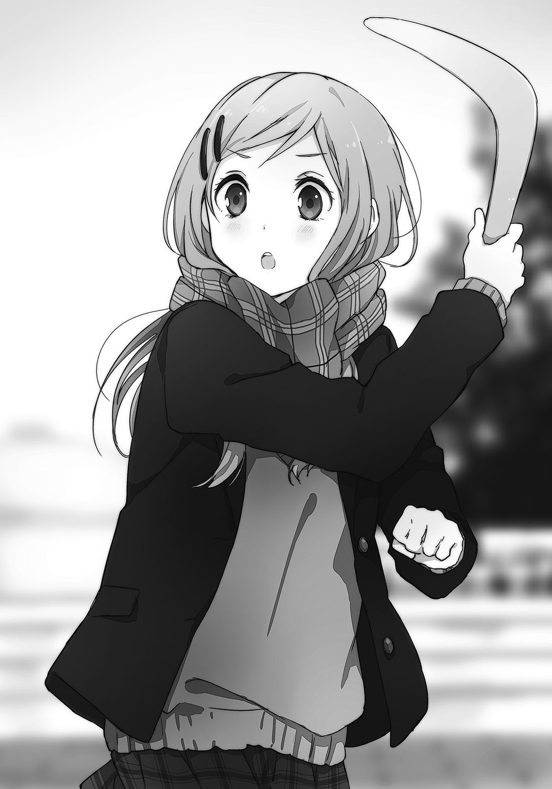ブーメランがぐんぐんと伸びて、広場の奥にまで飛翔する。荒さや尖りを感じさせない、風の上を滑っていくような動きだ。宙を泳ぐようにして行けるところまで行き着いたブーメランはいつの間にか水平となっていて、そして忠実に帰還する。
そのあたりから、目と共に耳が呑まれていた。
風を切る音が、ゆっくりと、やってくる。
不思議な間隔でそれはやってくる。最初、永藤の手から離れたときは無音に思えて。空から舞い戻ろうとするときに、音が生まれ始める。くん、くん、くんと。ブーメランの羽が空気を掻く音だ。それが次第にこっちへと距離を詰めてくる。綺麗な軌道を描いて。
その音に応えるように永藤が屈んだ姿勢で両手を突き出し、白羽取りのような形でブーメランを摑み取る。そして何事もないように膝を伸ばして、ブーメランを撫でた。
「ちゃんと戻ってくるやつだよ、これ」
「普通そうなんじゃないの？」
「出来が悪いやつも中にはあるから。はいどうぞ」
永藤が鞄とブーメランを交換してくる。わたしの手にはＶ字型のブーメランが一つ。
クリスマスプレゼントを買いに来たはずなのに、なぜ？
「最初は本気で投げない方がいいよ。防護用のゴーグルもしていないし」
「大丈夫。そこまで大胆じゃないから」
永藤の握り方と構えを真似する。そして注意どおり、弱く放ってみる。それでもブーメランは前へ、前へと飛んでいき、そしてちゃんとこちらへ戻ってくる。なんの意識もせずに投げてしまったために、戻ってくるそれに膝がすくむ。当たるかもという恐怖から「うひ」と思わず頭を押さえて屈んでしまう。ブーメランはわたしのずっと後ろを通って、公園の端に不時着した。走って拾いに行き、砂を払ってからもう一度、今度は意識しながら放り投げた。
緩い軌道を描いているのに、思いがけなく遠くまで飛ぶ。そして散歩を終えて回転が途中で切り替わるような錯覚を受ける、その戻り方と風を掻く音に自身の鼓動が重なる。
今度は受け止めようと両手を出したら、指先で弾いて落としてしまった。
投げるのにも、取るためにも慣れが必要らしい。
「……けっこう、楽しいかも」
思ったよりずっと軽やかな軌道を描いて戻ってくることを、素直に評価する。うまく取れなかったのに納得いかなくて、もう一投してみる。さっきよりも更に緩く、空を泳がせるように放ってみた。少し上に向けて投げてしまったブーメランは思いの外、飛んでいかない。
早々に戻ってきたそれは、今度は手前で力を失って地面に落下してしまった。投げる角度にコツがいるみたいだ。
これは、なかなか。
「どうだい」
いつの間にか隣に来ていた永藤が、肩に手を乗せながら感想を尋ねてくる。
「……案外、悪くないかも」
「いぇーい」
永藤が抑揚のない声と共に抱きついてきたので、顎を押して引き剥がす。
でもブーメランかぁ。食べ物はすぐになくなるし、こういうおもちゃなら気が向いたときに遊べるから、実用性という点からも評価していいのかも。いやでも、なにか、違うような。
なんだか騙されている気も、間違っている気もする。
澄んだ空気の果てで太陽が沈み始めて、夕陽の切れ端が遠くの空を焼いている。子供の頃、友達と一緒に見た景色と久しぶりに対面する。ブーメランがそこに溶け込み、そして再び翼をまとって戻ってくる度に、喪失した思い出を一つずつ取り戻していくようだった。
その郷愁に背中を押されて、ブーメランを握りしめる。
わたし自身、風を掻いて前へ進んでいくつもりで、空にブーメランを解き放つ。
家に帰ってから、袋に入ったままの新品のブーメランを妹に見せてみた。
「どう？」
「なにそれ」
くりくりとした目で逆に質問されてしまう。これはだめかなぁ、とちょっと思う。
「なんでしょう」
ちちちち、と制限時間をつけて煽ると妹が顎に手を当てて考え込む。ブーメランを左右から覗くように観察した後、「ぺぽーん！」と妹が架空の解答ボタンを押す。
「頭のやつがくっついていないハンガー！」
そのままだった。やっぱりなにか少し違うかなぁと、かなり思った。
そんなこんながあって、クリスマス当日。
12月25日に雪が降るのを見たことはない。天候が合わせないところを見るとやっぱり、日付とか特別なんていうものは人間が勝手に作ったものなんだよなぁと、空を見上げて思う。
それに振り回されるのもどうなんだろう。疑問は幾多もあれど、今日のわたしはその流れに、渦にかき回されるために身を投じる一人だった。昼前に出かける準備を終えて、前髪は二回ぐらい直して、台所にいる母親に出かける旨を伝える。丁度、妹も昼ご飯を食べていた。
「ちょっと出かけてくる」
「あーはいはい。……彼氏か？」
「だから違うってば」
何回聞いてくるのか、この母親は。手を横に振って否定していると、「なになに」と妹が頭を振って説明を求める。わたしと母親を交互に見て、ついでに口の中のものを飲んでと忙しい。
「姉ちゃんは友達と遊んでくるの」
「えぇー」
あからさまに不満げな態度を取ってきた。椅子からおりて、わたしの側までやってくる。
「晩ご飯は家で食べるんでしょ？」
母親の確認に「うん」と頷く。
「そのつもり。もし変わったら早めに連絡するけど、多分そうならない」
「なんだー、どこ行くんだよー」
妹がわたしの足をげしげし蹴ってくる。こいつ外では良い子ちゃんなのに、わたしには容赦ないな。額をぺしんと叩いてから見下ろすと、妹が膨れている。唇もひん曲がって……ふむ。
「なんだー、姉ちゃんにいてほしいの？」
妹の言葉を真似て、にやにやと笑ってやる。妹は霧でも振り払うように頭の上で手を振って、「なにを言うー！」と怒り出す。「そうかそうか」と無視して、脇の下に手を入れて高い高いと持ち上げる。けっこう重くなったなぁ、こいつも。じたばた暴れているせいもあるかな。
「まだかわいいところが残ってるじゃん」
「こら、おろせよぅ」
妹の短い足が激しく揺れる。冬なのに裸足とは強いなぁ、こいつ。
ま、姉ちゃんにも色々と都合があるのだ。
「夕飯の前には帰ってくるから。一緒にケーキ食べましょうねー」
妹を下ろしてから露骨に子供扱いすると、ぷいっと顔を逸らしてしまう。子供扱いもなにも、子供なんだけど。拗ねている妹の頭を一撫でしてから、玄関に向かった。普段は生意気なのにまだ意外と慕われているんだなと、悪い気はしない。これが三年、四年経ったらどうなるか。
この寒い中で外出するというときに、出かける前に上機嫌になることが一つあって大助かりというものだ。ともすれば気が滅入りそうになる寒気をしのぐ、心のカイロを一枚貼りつけたようなものだから。靴を用意して足を通しながら、自然、息を吐く。
結局、今日は安達となにをすればいいのやら。今後の予定はまったくの空白だ。
安達、ちゃんと考えてきてくれるかな。考えすぎて変なプランになっていないかな。
……どっちかというと、後者の方が心配になってきた。
「……とりあえず」
家での晩ご飯は決まっている。
だから昼ご飯にから揚げを食べるのは控えよう。それだけ決めてから、家を出た。
さーてクリスマス、クリスマス。
おまけ「肉屋来訪者その３」
クリスマスにはチキンカレーを食べるのがうちの決まりだった。お約束と言ってもいい。
「なんでだ？」
おやつ代わりにそのカレーを食べている日野が首を傾げる。クリスマスだろうとお構いなしに私の家にやってきていた。父さんたちもよく来たねーと笑顔で、もはやうちの子状態だ。
「なにが食べたいって聞かれてカレーと答えたから」
「そんでクリスマスだからチキンが入っていると。しゃれてるねー」
ジャガイモをむぐむぐと噛む日野のほっぺたが変形する。見ていると欲しくなる。
日野のほっぺじゃなくてカレーの方を。まぁほっぺたでもいいけど。
「一口頂戴」
「えー、まったくしょうがないなぁ、一口だけね」
私のカレーだぞ。しかも人参のとこを差し出してきた。でも食べる。うむよい味。
ちなみに明日の朝もカレー。晩ご飯も多分カレー。
「おばさんのカレーはおいしいですなっ」
店先で揚げ物を担当している母さんに向けて、日野が賞賛を送る。母さんは火の側にいるためか冬場なのにうっすら汗をかきながらも、こちらを向いて「ありがとうね」と答える。
「でもお家のカレーが一番でしょ？」
「うち和食ばっかりなんですよ」
日野が困ったように笑う。そういえばそうだった。日野の家に遊びに行ったとき、出されたおやつがひよこ豆と昆布だった。まったく甘くないおやつというのは新鮮だった。
「それにたまーにカレー作っても高野豆腐入れるしなぁ……あれはいかんよ」
スプーンを回しながら、日野がカレンダーに目をやった。25日には小さく、カレーと書かれている。私の字だ。……なんで書いたのか思い出そうとしたけど、忘れてしまった。
「クリスマスかぁ。一週間で今年も終わりじゃのぅ、婆さんや」
「そうかそうか」
カレンダーを見上げながらとりあえず頷く。お年玉は中学生まで、と言われているのでお正月も別に楽しみじゃない。日野はもらえるのかなと羨ましがっていると、こっちを向いた。
「永藤ってさー、将来のこと考えたりする？」
日野が急に難しそうな話を振ってきた。
「どれくらい先？ 明日？ お正月？」
「お前の将来予想は一週間が限界なのか」
カレーを食べ終えてスプーンを置いた日野がお茶を飲む。コップを置いてから、頬杖をつく。
「たとえば十年ぐらい経ったら、こんな暢気にしてられないっしょ？ わたしもあんたも働いて、三時にカレー食べている余裕なんかなくて、そもそも一緒にいるかも分からないんだよなぁって。そういうこと考えると、のんびりしていていいのかなぁって焦ったり、らなかったり」
やっぱり難解な内容だった。十年後とか言われても、私には手に負えない。
「日野も難しいことを考えるんだね」
「『も』というのが気になる、非常に引っかかる」
「うーん」
そのとおり、引っかかるものがあった。『一緒にいるかも分からない』のところだ。他のことは日野が望むような答えなんか返せるはずもないけど、そこだけはなにかがあった気がする。
乏しい（と日野に言われた。三回目らしいけど最近のしか覚えていない）記憶力を駆使して、思い出してみる。……あ、なんかこういうのあったなぁとうっすら見えて、よし、分かった。
「大丈夫だと思うよ」
「あん？ どれが急になにが？」
「ずっと友達だぞーって。映画を観た帰りに日野が言ってたし」
小学二年生のときだったはず。どんな映画を観たのかは思い出せない。
日野の方は発言自体を忘れているのか、目が泳いでいる。
「言った？ かな？」
「で、私はうんって返事をした」
「うん……」
「だから十年経っても一緒にいると思うよ」
いたいのなら、きっとそうなる。それを私と日野が望むなら。
日野が一拍おいて、頬をぽりぽり掻く。それからけたけたと肩を揺らして笑う。
む、変なやつになった。
「ここまで十年一緒にいたんだから、次の十年も大して変わらないか」
「ん？」
「なんでもなーうぃー。というわけでカレーお代わり」
「カエレー」
こんな調子に、あらためてよろしくしなくても来年もうまくやっていくと思った。
25日前日の夜、眠れるはずもない私はベッドの上で正座していた。
目の前には携帯電話。あとは送信ボタンを押すだけというところで足踏みしていた。前屈みになって、人差し指が行ったり来たり。顔の前にかかる髪を掻き上げて、勇気の出発点を探している。時計を見上げて時間を確かめて、あまり猶予がないことに一層焦る。
『明日 楽しみにしてる』
過剰だろうか。念を押すようにそんなこと言って、変に思われないだろうか。そんな心配が私の指を押さえつけている。しまむらが寝る前に送らなければ意味がない、とは思っているのだけど踏ん切りがつかなかった。かかかか、と送信ボタンの表面だけを連続して押す。
見事に一度もしっかり押せていない。絶妙の力具合だ。バカか私は。額をベッドに擦りつけて、ぐねぐねと身体を捻る。こっちも早く寝ないといけないのに。寝不足の隈をしまむらとのデートに持ち込みたくはない。だからさっさと押してしまえばいいのだ。
送らないと後悔するに決まっている。送れば後悔しない可能性もある。
迷う必要はなかった。横を向きながら、指だけを伸ばして他人事にボタンを押す。力を込めて、グッとボタンが沈むのを感じてから携帯電話を覗き込む。紙飛行機の飛んでいく簡素なアニメーションの後、『送信しました』と出た。すぐに携帯電話から離れて、壁に寄りかかりながら無意味に笑い声をあげる。ベッドからおりて、前屈みに考え込むフリをする。
携帯電話をずっと覗いているとちっとも来なくて、意識していない素振りを続けていればその隙を狙ってメールの返信が来る……ような思い込みがあるので、敢えて背を向け続ける。
だから返事に興味がありませんよと装うように、椅子に腰かけて教科書を開く。一行も読まないで閉じる。机に突っ伏して、腕を枕の代わりにしながら横を向く。机の下の足踏みが止まらない。目を瞑ると、胸と頭に靄がかかる。それはこの間のしまむらと永藤を見たことに起因する、薄曇りのようなものだった。悶々と、苛立ちと自己嫌悪に似たものに苛まれる。
返事を待つ間の、独特の緊張で胃が重たくなるのが好きになれない。どんな返事か、という以前に返信してくれるかも不安だった。しまむらはメールをこまめに返信する性格ではないと知っているので、余計に。それでも早く届かないかな、と願って、前髪を弄る。
携帯電話が唐突に鳴って、椅子から転げ落ちる。そのまま床を蹴って飛ぶ。ベッドに飛び込んで、携帯電話を摑み取る。転がって仰向けになりながら、電灯との間に掲げた携帯電話を操作する。しまむらからの返事を、目眩のしそうな緊張を伴って開く。
『おー』
返信はこれだけだった。え、これはどういうの？ どういうおー？ えいえいおーなのか、おーっとなのか、ふーん、そー、おー？ どう受け取ればいいのか分からない。
これだからメールは嫌いだ。乾燥していて、なにも湧き上がってこない。
極端なことを言えばしまむらじゃなくても『おー』になる。他の人が送ったとしても、それは受け取る側にとって区別のつかない『おー』でしかない。でも声は違う。感情というものが反応にみずみずしさを与えて、こちらはそれを受け取ることができる。
だから私は、しまむらの声を聞きたい。もっと、知りたいから。
「……明日、たくさん聞けるから」
本番もスタートもまだ早い。フライングなら、こんなものだ。
そう自分を納得させて布団をかぶる。頭に薄い網をかけるように、熱がこもった。
早く寝て、朝を迎えたい。
そう願う日ほど目が冴えてしまうあたり、人間っていじわるだ。
確か、十月にも一度、ここでしまむらと待ち合わせをした。あのときは朝まで眠れなくて、逆に朝が来たらつい寝てしまって、結果待ち合わせに遅れてしまった。今回は遅れなかっただけマシだ。その代わり、一分の間に五回は大あくびをすることになってしまったけど。
あくびのついでに身震いもする。目が覚めるようにと時間が押しているのに朝風呂に入ったのが失敗だった。髪が完全に乾くのを待つ時間もなく、慌てて飛び出してきてしまった。時間をかけて整えるつもりだったのに台無しだ。ついでに段々と体感温度まで下がってくる。
モール内にある、市内の総合案内所の前で待ち合わせると決めたのは私だった。ここは日野とお茶を買いに来たモールとはまた別なのだけど、ここにも巨大ツリーが当たり前のように飾られている。その前で待ち合わせるのが無難、というよりみんなそうしている。ここに来る前に少し迂回して覗いてみたけど、カップルの数が尋常じゃない。巨人か神様が潮干狩りの代わりにカップルをすくいあげても余りそうなほどいる。でもその中に、同性で待ち合わせている人たちはほとんど見当たらなかった。そりゃあ、そうだろうけど。当たり前だろうけど。
あらためて、私たちが変なことを自覚する。しまむら、嫌がらないだろうか。
友達付き合いだから仕方なく、来てくれるだけかもしれない。
寝不足だからか、気を抜くと悪い方にばかり考えが落ち込む。頭を振って霧散させた。
まぁ、そういうカップルさんたちとは距離を取って待ち合わせた方が、注目を浴びづらいかなという理由だった。本当は手を繋ぐなら、少しでも視線の少ない場所の方がいいかなという、私の都合も含まれている。自分は前を向いたまま後ろ向きに歩くような、どっちつかずの考えに常に翻弄されている気がした。
またあくびをしてから、十月のことを再び思い出す。あのときは水色の女の子がくっついていた。今回は付録がないことを祈る。今日という日の待ち合わせは、私が勇気を出したから実現したのだ。それをしまむら以外のだれかと分け合いたくはない。
時計代わりに携帯電話で時刻を確認する。あの後、『おー』の後にメールは来なかった。断りのメールも来ていないので、そっちには安心する。待ち合わせの十一時まで、あと五分。
「……あ、もう来た」
電話から目を離して顔をあげたところで、待ち人を発見する。
見つけた瞬間、心臓が高鳴るというほどではないけど、上へきゅっと縮み上がる。
遠くから小さく手を振ってくるその人影を見間違えるはずがない。
しまむらが一人で、時間どおりにやってきた。
よかった、だれもくっついていない。安心して、手を振り返す。
「待った？」
「今来たところ」
「嘘つけ。五分前から遠くで見ていたぞ」
しまむらが指差しながら嘘を見抜いてくる。五分どころか十五分は前から待っていたのでどぎまぎしていると、しまむらがその反応を見てか相好を崩す。
「いや冗談だったんだけど。とにかくごめん、待たせた」
適当に打ち切ってから、横に並んでくる。黒の花柄ワンピースに、フード部分にファーのついたジャケット。足もとは茶色いブーツで、鞄もいつも使っているやつと同じだった。
髪も整ってはいるけど、頭のてっぺんにはわずかな黒色が見え隠れしている。
どこを取っても普通の休日のしまむらだった。なんとなく、見ていて安心する。
並んで一緒に歩き出す。数歩進んだところで、並んで歩いていた永藤のことを思い返してしまう。もうけっこう前のことなのに、どうしても頭を掠めてしまう。嫌だなぁ、と額に手をやる。
そうしているとしまむらが私に向く。顔に出ていただろうかと、慌てて取り繕うように笑顔を浮かべる。多分、笑いというか引きつっていただろうけど。
「安達、一目見たときから気になっていたことがあるんだけど」
「えっ……なに？」
一目見たとき、という表現に動揺する。なにを言ってくるか、大体分かったからだ。
しまむらが私のコートの奥を覗いて、目を細める。
「なんでチャイナドレスなの？」
「……あぁまぁ、やっぱり、気になるよね」
バイト先から借りてきたチャイナドレスの端を摘む。上着としてコートは着ているけど、中は梅笹の刺繍が施された水色のドレスが輝いている。それでいて靴はぺたんこのパンプス。
やっぱり変だと思われた。私だっておかしいと思う。でも悩んで、悩み抜いて、新しい服をつい買ってしまってそれも全部試した結果、なぜかこれに落ち着いてしまった。どこでどういう空回りと迷子が起きたのか、今となっては知ったところで手遅れとなっていた。
昨晩の心理状況を整頓して、その理由を探すと心当たりが一つだけあった。
しまむらがかわいいと褒めたから。それが決め手となってしまったみたいだ。
私は自分の感性よりも、しまむらの一度きりの評価を信用したらしい。
「変だよねぇ……」
ただでさえ組み合わせとして好奇な目を向けられそうなのに、これはひどい。
着替える時間を与えてくれれば、そこらにあるアパレルショップで服を買いたい。
しまむらは首を軽く掻きながら、「というか」とぼやくように言う。
「変なお店の客引きと思われないかなぁ……あ、わたしはいいと思うよ。かわいいじゃん」
「ん……」
「美人は得だねー。よく似合っているもの」
しまむらが冗談で私を担ぎ上げてくる。本気じゃなかったとしても、しまむらに美人なんて評されると反応に困ってしまう。赤面したら微妙な空気になってしまいそうな気がして、我慢する。どうやって堪えているのかは自分でも分からない。頬に力を入れるけど、多分効果なし。
「しまむらの方が、かわいい……し」
美人評価への私なりの反論？ がこれだった。こっちは本心から褒めたつもりだ。
「ははは、嫌みはやめなさい」としまむらはまったく本気で受け取らなかったけど。
そんなやり取りがくっついてはいたけど、チャイナドレスは容認された。しまむらがそう感じてくれるなら、おかしさも肯定に落ち着く。止めていた足が、重荷を振りほどいて前へ出た。注意していないとばたばたばたと、慌ただしく早歩きになってしまいそうなので、はやる気持ちを抑えることに気を配る。焦るな、今日は始まったばかりだ。
「で、どこに連れていってくれるの？」
「えぇと、まずは二階」
エスカレーターのある方角を指す。三日前から毎日下見に来ていたのでモール内の地理はほとんど把握できている。中を巡りに巡って、なにをするかを決めてきたのだ。
総合案内所の裏手側すぐにエスカレーターがある。その前まで来たところで、ぶらぶら揺れているしまむらの手に目が行く。しまむらの手は甲が冷たそうで、でも手の平はみずみずしさを保っている。まるでなにか盗みでも働く前みたいに周りを確かめて、大して注目を浴びていないことを確認してから、思い切ってしまむらの手を握ろうと、腕を伸ばす。頭が釘で固定されるように動かなくなり、視界が白く染まっては遠くへ飛ぶ。度胸のない意識が逃げ出して、行動を身体に任せっ切りにしていた。その影響か腕の動きが思い切りすぎて、しまむらの手を掴んだ際に「ぐぉわ」と悲鳴をあげさせてしまう。勢いがよすぎてしまむらの親指がぐんにゃりと反ってしまっていた。あわわわと慌てて手の位置をずらす。親指が正しくなったけど、しまむらは顔をしかめている。突き指でもしていないだろうか、と青ざめそうになる。
「ごめんなさい」
「うん」と頷いたしまむらが、親指の具合を確かめる。何度か曲げても表情に痛いものが混じらないので、怪我をしたわけではなさそうだ。ホッとしていると、しまむらの目が向く。
少し咎めるような目を向けられて萎縮してしまう。しまむらに怒られるなんて、考えてみればほとんど経験がない。時折訪れる私の奇行もしまむらは寛容に受け入れてしまうからだ。でも痛みが伴えばさすがに無視できないだろう。怖い。しまむらに悪い印象を抱かれてしまうのは、なにより恐れることだった。
私が首を引っ込めておどおどしているのを見てか、『しょうがないなぁ』といった風に口と目を緩めてくれて、少し救われる。エスカレーターの前で突っ立っていては迷惑になるからか、しまむらが私の手を引いてエスカレーターの側面の壁に回り込んだ。
磨かれた壁には向かいの店の煌びやかな風景と、私たちがぼんやりと映っている。
「あー、その。ひったくりみたいに手を取るのはやめようね」
「ごめん。本当に、ごめん」
謝りつつも手は離さない。しまむらは握られている自分の手をジッと見つめている。
しまむらの表情を窺うのが怖くて、頭をあげられなかった。
「手、繋ぐの？」
こくこくと頷いた後、「できれば」と付け足す。是非とも、という本音は隠した。
「前にもこんなやり取りしなかったかな」
こくこくと頷いた後、「したかも」と付け足す。もちろん覚えていた。
「うぅん……んー、んー……」
しまむらが葛藤していると思しき声が頭の上で聞こえる。やっぱり日にちに大きな意味があるだけに、しまむらも戸惑っている。なにをやっているんだ私はとか、取り下げて手を離せとか頭の中でごちゃごちゃと及び腰の意見が飛び交う。でもしまむらの『特別』になりたいのなら、なにもしないで黙っていても状況は悪くなる一方だ。なにかをしなければいけない。
そのための行動がこれで正しいのかは、また別問題だけど。
メールを一つ送るだけであれだけ葛藤するのに、手を繋ぐのはちょっとすっ飛ばしすぎではないだろうか、と保守派の私が冷静に述べる。でも今更だった。ここから手を引っ込めたところで、握ったという事実は変えられない。だったら、引くことは無意味だ。
長い時間が経っていた気がする。耳は冷えて、コートの下で足も冷たくなっていた。チャイナドレスのスリットが憎い。握りしめているしまむらの手だけが温かい。
その伸びていたしまむらの指が、私の手を握り返してきた。
「ま、いいか」
一方通行でない指の熱を感じて、こみ上げるものがあった。
多分、口を半開きにするほど無防備なまま顔をあげると、指がずいっと伸びてきた。
しまむらの人差し指だ。繋いでいない方の手が私の口もとに迫っていた。
「次回からは、繋いでいい？ とかちゃんと事前に聞くように」
「えぅぃっ」
「なにその反応。どうやって発音したの」
しまむらが目を丸くする。次回もあるのか。繋いでいいのか、とそっちに注目して勢いよく変な声が出てしまった。なんで私はこんなに挙動不審なんだろう。多分、しまむらが悪い。
「エビ、にちょっと似ていたかも」
「今のは気にしないで……あの、分かった。次からは絶対に聞く」
本当は了承を得ないで手を伸ばす方が楽だった。これで一つ、ハードルが増えてしまった。
だけど、許可さえ取れば繋いでいいんだと、認めてもらえたことは素直に嬉しかった。
……逆にしまむらから、手を繋ぎたいと思うことはきっと、ないのだろうけど。
それが少しだけ寂しい。二本の平行棒の上で、私だけが隣に近づこうとよたよた暴れて、落ちそうになっている。そんな絵が思い浮かんだ。
「そうして」としまむらが言って、手を掲げた後。
「そんな慌てなくても、他にだれも、わたしの手を取ろうとしないんだからさ」
そんな台詞と共に、微笑みかけてくる。
しまむらの手を求める私と、私に求められることへの両方を際立たせるような一言に、爆発的に照れる。しまむらは意識せずにそんなことを言ってくるから、その、大いに困る。
……でも
この間の永藤みたいに。しまむらの横を歩く人は、私だけじゃないから。
だから、少し強引にでも先に手を取ってしまいたくなる。
そう反論しかけたのは、そっと、引っ込める。
エスカレーターの前まで戻って、上へと運ばれる。乗るのがエスカレーターで助かった。階段だったら痺れて固まり、上れなかっただろうから。
エスカレーターでは私が上で、しまむらが下で。そのまま手を繋いでいる。降りてきてすれ違う男女の視線を感じたような気がして肩が強ばる。しまむらの方はあまり気にしていないようだったけど、こっちは他の人の視線を意識することで、あぁ、手を繋いでいるんだと自覚を強めてしまう。
頭が真っ白になっていた。どこへ行くつもりで二階に上がったの？ 三日間の下見とはなんだったのだとばかりに、記憶のメモ帳は白紙に戻っていた。ぎこちなく、しまむらに引きずられるような形でエスカレーターから離れて、二階を歩く。えぇと……あ、右手すぐにあった。
「ここで遊ぼう……と、思います」
変な説明になってしまった。場所は前にボーリングで遊んだところだ。複合エンターテイメント空間と表に謳うそこへと入る。入った途端、モール内にかかっていたクリスマスにちなんだ音楽がなにも聞こえなくなる。賑やかさを飾りつけた音がどんどんと運ばれてきた。
「ボーリング？」
「ううん、違う」
ボーリングに行くとあの水色の女の子が隣で遊んでいそうなので、今回は見送る。ピンポンやビリヤードのコーナーも無視して、一番音のうるさい、ゲームセンターの方へと向かう。
ゲームセンターにはほとんど人がいない。賑やかなのはレースカートやビンゴゲームが自動で騒いでいるだけだ。表にあるメダルゲームのキャラクターが笑顔で勢いのある絵で、それを見ているとどこかもの悲しくなる。昔好きになったかわいいキャラクターが、いつの間にかその人気を失って細々としか展開されていないことを知ったときのような、そんな感傷がある。
そのメダルゲームの脇を通り、ビンゴゲームの大きな台を回り込んで、お目当てのものの前に出る。奥にある、エアホッケーの筐体が目当てだった。他のゲームの筐体と比べて少し古くさい。隣には新しい台もあって、そちらは小さいパックを連続で打ち合うような内容なのだけど、私は敢えてオーソドックスな方の台を選んだ。
「エアホッケー、どうかな」
卓球に通ずるものがあるし。私たちのお戯れといえば、これだった。
映画よりもこっちの方が盛り上がるし……それにこれは結果論なのだけど、映画館の暗闇の中で大人しく座っていたら、今の私は間違いなく寝入ってしまう。身体を動かさないと。
「ホッケーね……うん、なるほど」
実は私、ほとんど遊んだことないけど。
「よし、やろうか」
「うんっ」
運動するからか、しまむらがジャケットを脱ぐ。でも肩を出したところで「さぶっ」と身震いして、「暖かくなってから脱ごう」とすぐジャケットに袖を通す。オレンジ色の……ラケット？ マレット？ だったかなを小さな籠から取り出して、台の向かい側へと歩いていった。
エアホッケーをやるためだから当たり前だけど、手が離れて、しまったなぁと思ってしまう。
一回のゲームで料金は二百円となっている。百円ずつ負担して、飛び出てきたパックをマレットで押さえる。得点も動き出して、どちらの台にも０点と表示された。
「ふふふ」とかなぜかしまむらが笑っている。意味ありげに、余裕を見せつけるように。
「安達から打っていいよ」
しまむらが妙にサービス良い。自信があるのかなと思い、言葉に甘えてパックを引き寄せる。
そうして、ほとんどゲームセンターを貸し切っての勝負が始まる。
人気がなくて人の往来も少ないことを事前調査してエアホッケーを選んだのは、内緒だ。
まずは様子見と緩く打ったはずなのに大きな効果音が鳴って、ビクッと仰け反る。最近のエアホッケーはパックから音が鳴るのか。私が硬直した隙を見逃さないとばかりに、しまむらがパックを鋭く打ち返す。
ぱかんぱかんと景気よく跳ね返ったパックは私のゴールから少し外れて、ぽこんと打ち頃の位置に跳ねる。それを今度は腰を入れて強く打つと、激しく跳ね返りながらしまむら側のゴールにあっさりと飛び込んでしまった。狙ったわけではなく、完全に幸運だ。
「ありゃあ？」
しまむらが自分のゴールを覗き込んで、裏返った声をあげた。髪が上下に激しく跳ねる。
「んー、勝手が少し違う」
しまむらがマレットに向けて首を傾げる。
「なんのこと？」
「家でたまに妹と遊ぶんだけどね、エアホッケー。マリオのやつ。やっぱりちょっと違うか」
しまむらがマレットを額にこつこつと当てる。どうやら始める前の笑いは、経験者であるという自負から来ていたものらしい。今度はしまむらがサーブを放つ。直線的に打ち込んできたそれをなんとか弾き返そうと素早く腕を振ったけど、手応えがなかった。
空振りだった。脇にだけ負担をかけて思いっきり空を切る。運がいいことにパックはゴールの端に弾かれて跳ねていた。構えていたしまむらが、私の空振りに虚をつかれている。空振りしたマレットを切り返してパックを弾くと、油断したしまむらのゴールに突き刺さった。連続で決められて、しまむらが引きつった笑いを浮かべる。
「空振りして隙を作るなんて、安達やるね」
「……ど、どうだー」
得意がってみようとしたけど、どうにも勢いが出ない。しまむらにも笑われてしまう。
こういうとき、日野を参考にできるといいのだけど。いや、急に私が陽気に振る舞いだしても不気味なだけか。自分でも無理があると思う。自嘲を込めて、パックを打つ。
さて。他愛なく、かつそれなりに真剣にエアホッケーに興じている間のことだけど、私は腕を振りながら思いを散り散りに巡らせていた。しまむらのこととか、私のこととか。
最初にだれを好きになったか、あまり覚えていない。少なくともそれは同性ではなかったような気もする。でも今の私が様々な意味で『一番』にしているのはしまむらだった。
私の人間関係にとって性別というのはこの際どうでもいいのかもしれない。
あくまで私にとって、であって自分の外側では、周囲や環境、そしてしまむらにとってはどうでもいいで済ませられるものではないのだと、それぐらいの分別はついている。そういう常識に阻まれて、ひっそりとしていなければいけないことも、納得はできないけど理解はする。
ただ、世界から色んなものがなくなればいいと思うのと同時に、様々な要因が絡み合って私としまむらが今ここにいるという事実も尊いものとして受け入れていた。夏が暑くなかったら、夏休みが長くなかったら。そういう場所に生まれて偶然にも同じような地域にいて、たまたま同じ高校を受験して幸運にも二人とも合格したから。そして、授業が退屈だったから。
私としまむらは、体育館の二階で出会った。
どんな形でも、出会ってしまえばそこに至る流れ、運命がある。どんな出会い方にも壮大な過去が用意されているのだ。二百、五百、何百億という全体の行動の積み重ねがあったうえでしか、人と人は出会うことができない。なんという道のりだったんだろう。
一つでも違ったものを選べば、私はしまむらに出会えなかったのだから。
その事実だけで、私は今までの自分をどこまでも好きになれそうだった。
「安達にはすっかり騙されたなー」
「別に、嘘ついてないんだけど」
エアホッケーを六ゲームほど遊んだ後、一階のフレッシュネスバーガーに移ってお茶していた。ついでにお昼過ぎで少し遅いけど昼ご飯もここで済ませている。クリスマスだからと気張って背伸びした店を選ぶようなことは初めから考えていなかった。女同士で入る雰囲気ではないし、なにより割り勘であることを考慮すれば、高い店なんか行けるはずもなかった。
こんなときのためにバイト代を貯金しているのだから、私が奢るのはありだ。でもきっとしまむらが遠慮する。気を遣わせるという迷惑は、一方的な親切からも生まれるものだった。
「安達ちょー強いじゃん」
しまむらがセットメニューのポテトを摘みながら賞賛してくる。
戦績は四勝二敗だった。私が四勝の方だ。しまむらの経験は今ひとつ役に立たなかったみたいだ。私が強いのではなくしまむらが思ったより弱かった、とは口が裂けても言えない。
「自信があるから誘って初心者いじめとは、なかなかやるなぁ」
「そういうのじゃないから」
手を横に振って否定する。しまむらも本気ではないらしく、「楽しかったけどね」と締める。
「卓球も安達が勝ち越していたよね」
「そうだった？」
そこまで細かく記録を取っていないけど、そうだっただろうか。
しまむらが私の反応を受けて、とぼけたような調子で言う。
「いや、やっぱりわたしだったかなー」
「こっちが覚えていないからって改ざんするのはずるい」
私が冗談で膨れると、にやっと口もとを緩めた。それぐらいの話はできる程度に、私の緊張も薄れている。飼い慣らしているわけではないので、なにがきっかけで暴れ出すかは保証できないけど、今は安定していた。やっていないので多分という話になるけど、この店内を必要以上に見回せばまた、緊張なり萎縮なりしてしまうと思う。なにしろ、ほとんどの席が男女のカップルで埋め尽くされていた。みんなクリスマス好きだな、と自分を棚に上げて思ってしまう。
しまむらはストローでコーヒーを吸い上げた後、窓の外の駐車場へと目をやる。
「もう遠い……というほど昔には感じないんだよね。四ヶ月ぐらい前なんだけど」
しまむらの語るその感覚には、こちらも覚えがある。温度が下がっただけで、あの体育館で怠けているイメージは引きずり続けていた。残像を見ているようでもある。
「二年生になって、春が来て。日差しが強くなったら、また体育館に行くのかな」
しまむらが私を試すように、顔を覗き込みながら問う。
本音を言えば、あそこでしまむらと過ごすことは心地いい。残暑にゆだるのではなく、春の心地の中で一緒に身体を丸めて眠りたいと願うのは、偽らざる本心だった。でもそれを続けることを、しまむらは望んでいない。
「授業を受けて、放課後にここに来て。上でピンポンすれば、いいんじゃないかな」
私の答えに、しまむらが「１００点」と満足そうに採点を下した。
「安達もすっかり優等生になったね」
それはしまむらの見立て違いだった。私は、しまむらに同調しているだけだから。
「でも二年生かぁ。クラスも替わるねぇ」
しまむらは何気なく発言しているようだけど、こっちには大問題だった。
今日あたりから、寝る前にしまむらと同じクラスになれるよう祈っておこう。それと違うクラスになってしまった場合に落ち込まないよう、覚悟も養っておくことにする。
クラスが一緒でも教室でほとんど話はしないのだけど。できないのだけど。
それでも、しまむらを視界に収めることには確かな安心感がある。私はただの友達なのに、見ていないところでしまむらが他の友達を次々と増やしていくと想像して、嫌な気持ちになってしまうやつなのだ。嫉妬深い、のかもしれない。今まで自覚していなかったのだけど。
永藤のことも、まだ引っかかっているし。クラスが別々になったら、ああいうことがもっと多く起こるのかな。それは嫌だというより、怖い。しまむらとの距離をどんどん広げていってしまいそうだから。
コーヒーを最後に一気に飲んでから、フレッシュネスを出る。その後はまた二階に上がってから、エスカレーターの側にある二つ並んだ椅子に腰かけて休憩することにした。
最後まで暑くはならなかったのか、しまむらが上着を脱ぐことはない。行き交う人を目で追いながら、ぼーっとしている。控えめに伸ばした足が時折ばたつくのが、なんだかかわいく思えてしまう。しまむらの時折見せる、無意識な子供っぽさに目を惹かれるのはいつものことだ。
丁度いいかな、とここでプレゼントを渡しておくことにした。
「しまむら、これ」
鞄から取り出した、和風にラッピングされたお茶の袋をしまむらに差し出す。しまむらは不思議そうな顔をしながら受け取って、『どうしたのこれ』という目を私に向けてくる。
「クリスマスプレゼント、のつもり」
「へぇぇー」
しまむらが大げさに驚く。お茶の袋を掲げるようにしながら眺めて、何度もまばたきする。
「いやありがと。なんか、嬉しいじゃないの」
珍しく、しまむらが照れたように頬を掻いている。目尻も緩んで柔らかい表情を浮かべながら、お茶の袋を胸に抱える。しまむらの足の間に座ったときを想起して、こっちも照れる。
「あ、香りのいいやつ。これ飲んでみたかったんだ」
銘柄を確かめて、しまむらの表情がほころぶ。日野の情報が正しくて安堵した。
「でも安達がなんでわたしの好みを知っているの？」
あ。
そういえば、そうだ。私が知っていたらおかしいのだった。
「偶然？」
「……では、ない」
正直に答える。しまむらが額に指を当てて、「んー」と周辺を見回す。なにか思い返すように。
「あ、日野から聞いたのか」
「う、うん」
「気を遣わせちゃったねぇ」
しまむらが冗談で私の頭を撫でてくる。私にとってはなによりのご褒美だ。
もっと撫でてほしいと頭を前へ出したけど、しまむらの手はすぐ離れてしまった。あぁ。
「同じことを考えているとは思わなかったなぁ」
「えっ？」
「いい子の安達ちゃんには、お姉ちゃんからプレゼントをあげよう」
しまむらも鞄からなにかを取り出す。プレゼント、と聞いて色めき立ったけどしまむらの差し出したものを見て、感動は一時停止する。しまむらサンタのチョイスに衝撃を受ける。
「なにこれ」
「ブーメラン」
壊れたハンガーかと思った。青色でＶ字型のそれを受け取って……受け取って。
「こっちはゴーグル」
目を防護するそれを受け取る。……受け取る。
「遊ぶときにつけるの？」
「うん。あ、買う前に楽しいかわたしも試したから。……楽しかったよ、けっこう」
「そうなんだ……」
他にどう反応すればいいのか分からなかった。プレゼントがあったことと、その中身の両方に驚かされていた。ブーメランを握りしめて、感動するべきか、否か。
「こういうの選ぶセンスないから、永藤と相談して選んでみたんだけど。その結果、なぜかこうなっちゃって。やっぱり、相談する相手を間違えたと思う？」
「ながふ……あ……」
別のモールで、しまむらと永藤が歩いていた、あれは。
そういうことだったんだ。
しまむら、私のためにプレゼントを選びに行ってくれていたんだ。
選んだものはともかく、その行いには素直に感動してしまう。理解し、安堵が訪れて、正直に言えば妬いていたであろう自分を恥じ入る。しまむらが私のために、動いてくれたのに。
しまむらの肩に手を乗せる。私としまむらの間に、頼りない橋がかかった。
「安達？」
うつむいたまま動かない私を不審がる声が聞こえる。このまま肩を引き寄せて、しまむらを抱きしめたらどうなんだろうという衝動が一瞬芽生える。しまむらとの物理的な距離は限りなくゼロとなって、けれどそれは私たちの関係を際限なく遠いものにしてしまいそうだった。
だから堪えて、しまむらの肩を支えとしながら、ゆっくりと顔をあげる。
頬がぽわぽわ、熱く膨らんでいる。傍から見て、真っ赤になっているかもしれない。
「ありがとう。これ、大事にするから」
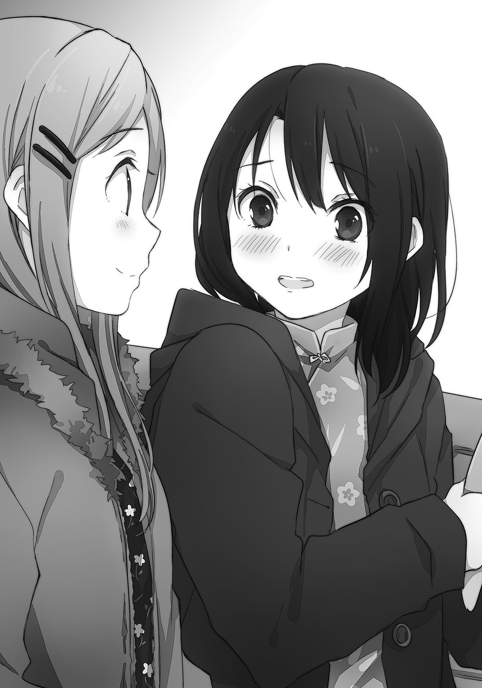正しい使い方ではないだろうけど、ずっと部屋に飾っておくつもりだった。
たとえば、本当にたとえば。いつか、しまむらと私が交わらなくなっても。
「喜んでくれたなら、いいけどね」
正直ブーメランを歓迎はしていない。しまむらがくれた、という事実だけがプレゼントだ。
クリスマスという行事の意味も重なって、それだけで十分すぎるのだけど。
頬を掻いていたしまむらが、「ま、いいか」といつものように言ってにっこりと微笑む。
「じゃ、外で投げてみようか」
「は？」
しまむらが朗らかな笑顔のまま、表に出ろと提案してきた。
「ブーメランの正しい投げ方を安達に伝授してあげようかなと」
「ひ」必要ないです、とはしまむらの笑顔の前で言いづらかった。
この後のデートは、私の予定は、とあわあわしている間にしまむらが下りエスカレーターに向かってしまう。本当にブーメランで遊ぶつもりみたいだ。……やっぱりどう譲っても、しまむら『も』変だった。
でも変だから私にも付き合ってくれるのかなぁと思うと、なんだか嬉しくなる。そんな風に解釈して受け入れてしまうあたり、既に私は爪先から頭のてっぺんまで意見統一されているらしい。
早歩きで追いかけて、早口で「いいですか」と確認を取って、しまむらの手を握った。
これなら外に出ても、寒くない。
モールと道路を挟んで向かい側にある、自動車教習所の側の公園には私たち以外にだれもいなかった。冬休みの子供たちは家でゲームでもして遊んでいるのだろう。錆びついた遊具が冬風に晒されて、剥げかけた塗装の切れ端がちりちりと掠れる音を立てている。
子供のときでも、冬のこの時期に公園で遊んだ記憶はない。
しまむら監修のもと、青色のブーメランを袋から出す。朝風呂で濡れていた髪はとっくに乾いて、今では風によってばらばらと散っていた。しまむらも同様で、前髪を邪魔そうに掻き上げている。
「ブーメランを後ろに倒して構えるの」
どことなく受け売りっぽい説明と共に、しまむらが私の手を取る。どきりとした。しまむらがそのまま、ブーメランの握り方と傾きを調整してくれる。ブーメランが早速、役に立った。
「縦に切るように、前へ投げる。上に向けて投げないようにね」
そこまで教えて、しまむらが距離を取る。もう一回教えて、は無理だろうなぁ。
ゴーグルをかけ忘れていると気づきながら、ブーメランを軽く放った。
青いブーメランが、群青の空へと飛躍する。遥か遠い大気と日差しに溶け込むように一瞬消えた後、羽の回る音と共に再びその姿を現す。空の壁を蹴ってターンするように舞い戻ってくるそれを受け止めようとしたら、私の斜め後ろまで飛んでいってしまった。
丸い網状の遊具付近に落下したブーメランを拾って、砂を払う。
……楽しいのかな？
「最初はこんなものかな」
しまむらが通ぶったように評価してくる。
「しまむらはちゃんと取れたの？」
「最初はこんなものなんだよ」
大差なかったみたいだ。投げ方とか、角度がいけないんだろうか。
「でもチャイナドレスの人が投げると、映画の一場面みたいで絵になってるね」
しまむらにそう言われて、自分の格好を再認識する。そういえばチャイナだ。下を向くと、スリットから足が大きく露出していた。慌てて足を引っ込める。それから照れ隠しにブーメランを投げ放つ。最初と似たような軌道を描いて、また私の後ろを通過していった。
拾って、首を捻る。
投げて飛んで、受け止めて、と分解してしか感じられない。
これならしまむらとエアホッケーする方がずっと楽しい。私には合わないみたいだ。
「いまいち？」
「ん……」
控えめに肯定した。しまむらはさして残念でもないように「そっか」と呟く。
「んー……今から戻ってなにか別のを買おうか？」
「いい、いい」とブーメランを振る。このブーメランにはそれ以外の価値がいっぱいある。
青いブーメランが左右に振り動くのを眺めながら、しまむらが「そう」とどこか満足そうに目を細める。うっすらと口の端が曲がって、私は、姉にでも見つめられているようだった。
「でも、戻ることは戻ろうか。中の方があったかいし」
しまむらがそう提案して、入り口の方に向く。それはいいのだけど、と引っかかるものがある。髪を引っ張るように、忠告するものが私の中にいた。
人の目がないここでしか、しまむらに踏み入った話はできそうにないぞ、と。
それは確かに。カップルだらけの中でしまむらと、愛だの恋だの語っていられない。
だから、踏み込む。準備ができてなくとも、転びそうになっても。
「あ、あの！」
一歩、前へ。つんのめるように、しまむらに近づく。
振り向いたしまむらの手のひらを上に向かせて、指を伸ばす。両手で覆うように手を握って、指を絡める。宝物のように手を扱われてか、しまむらが困惑しているようだった。
「なに？」
クリスマスだから、という安易な理由に背中を押される。
しまむらの手相でも探るように指が動いて、「くすぐったい」と言われて謝って。
「私、は」
しまむらのことが好きで。
こう、好きで。
好きで。喉がぎゅっと締め付けられて、息苦しくて唇が震えて。
「しまむらの、えっと……友達に、なりたくて」
妥協した。でも溜め込んでいた勇気の量から考えるに、これが限界だった。
「もう友達のつもりだけど？」
しまむらが困ったように笑う。私だってそのつもりだ。でもそういうのじゃなくて。
「それぐらいの友達じゃなくて」
自分でも意味の分からない表現に翻弄されて、瞳が揺れる。友達を大きさで測るのは間違っているだろう、多分。でも引っ込みがつかなくなって、言葉の続きを探す。
私が求めているのは。それぐらいじゃないとするなら。
ブーメランのように、もっと高く。
「一番の友達に、なりたい」
また一歩、前へ詰め寄るようにしながらそう宣言する。
「……一番？」
しまむらは意味を掴みかねているのか、眉をひそめている。見ていると弱気になってなにも言えなくなりそうなので、時間が経つ前に全部言ってしまおうと口を開く。
「なりたいっていうかなる、から。がんばろうと、思い、ます」
「そ、そうですか……」
曖昧に頷いた後、「んー」としまむらが難しい顔になる。ぶるりと一度、寒さに身体が震えた。
耳と横顔が冷たいのかジャケットのフードをかぶって、あ、それかわいいなとつい見とれる。
「よく分からないけど、向上心があるのはいいことだと思うよ」
「うん……」
確かに分かっていないようだった。でもうつむいた頭をどう思ったのか、しまむらがその手で撫でてくれる。私は自然と膝を曲げて、少し大胆に前屈みになる。しまむらの顎に頭が当たりそうになるぐらいに。しまむらはなにも言わず、肩で私の頭を支えてくれた。
その手と肩が逃げないようにと、しまむらの服の肘を、ぎゅっと掴む。
そのまま、しまむらに身をゆだねるようにしながら目を瞑った。
握りしめているブーメランの翼が、暗闇の向こうで羽ばたくのを錯覚する。
空に溶けていく青色の残像が、目の奥に焼きついていた。
「………………………………………」
公園で、二人。寒風に吹かれて少し震えながら、頭を撫でて、撫でられて。
至福の時間だった。少なくとも、私にとっては。
クリスマスだからと、劇的なことは起こらない。
だけどクリスマスにしまむらとこうしている、という特別さが、私の望むものだった。
だから本当は、しまむらとの待ち合わせが実現した時点で最高だった。
始まったときに、頂点にいる。後はそこから時間をかけて、長々と、高いところから見えてくる景色を楽しみながら無事におりるためにエアホッケーが、コーヒーが、プレゼントがあったにすぎない。ブーメランで若干怪しくなったけど、私にしてはうまくいった方だ。
終わりはもう少し先だけれど、確信する。今日は、大成功だと。
しまむらの指が、私の髪を梳く。
……きっと。今日という日は、良い思い出にならない。
なにしろ頭が真っ白になってばかりで、記憶どころじゃなかったからだ。
景色を雪が覆い隠すように。
『ホワイト・アルバム』があったことだけを、鮮明に刻み込む。
おまけ「ヤシロ来訪者その３」
「次は右にー」
「ぐるぐる」
「………………………………………」
「次は左ー」
「ごろごろ」
「……そこの自称六百何十歳、それわたしの布団」
傍から見ていた姉ちゃんが呆れ顔になる。そういえばそうだ、と今気づいた。
今日も部屋の中は寒いので、丸めた布団の中に身体を突っ込んで頭だけ出していた。布団の反対側からはヤチーが身体を出している。で、そのままころころと転がって遊んでいた。
ちなみにヤチーはいつの間にかやってきた。帰るときもいつの間にか。ふしぎだ。
「楽しいの？」
「あったまりますよ」
ヤチーがびたんびたん跳ねながら言う。布団の中で足も跳ね回って少し痛い。
姉ちゃんは呆れた表情のまま、テレビに向き直る。
「そりゃあよかったね」
「しまむらさんもご一緒にどうです」
「見て分からないと思うけど、わたしも結構忙しいの」
座椅子にもたれてテレビをぼけーっと観ている姉ちゃんが、なにか言っている。
わたしたちもけっこう忙しいのに。ただお気楽に転がっているわけではないのだ。
ヤチーと息を合わせないとなかなかうまく転がらない。それとコツは転がるとき、上と下の位置を意識すること。上から下へ、下から上へと流れを感じること。これが大事なのだ。
ごろごろごろ。姉ちゃんの後ろをごろごろごろ。大きく余裕を保ちながら壁際で方向転換。ごろごろごろ、と窓側までごろごろごろ「えぇいうっとうしい」姉ちゃんに止められた。
姉ちゃんの足に布団を挟まれてしまう。ヤチーと一緒に飛び跳ねるけど効果なし。
「なにをするのです」
「わたしはあんたたちがなにをしているのかと聞きたい」
「暖を取っています」
「取っておるのです」
ヤチーに便乗して言ってみる。姉ちゃんが溜息をついて、脱力したみたいに肩を落とす。
そうしていると、わたしたちよりずっと高いところで音が鳴った。
「お？ 電話だ」
姉ちゃんが四つん這いのまま移動して、机にほっぽり出してある電話を取る。かけてきた相手を確かめたあと、「はいはい」と電話に出た。そのまま膝で歩いて、部屋の外へ出ていく。
「むぅ」
「むむむ」
姉ちゃんがいなくなったから、なんとなく布団から出る。ヤチーものそのそ出てきた。そのまま二人で姉ちゃんの布団の上に座り込む。暑くなったのか、ヤチーがマフラーを外した。
「まふらーはあったかいのですが、首がちくちくしますな」
「そう？」
言われてみると、ヤチーの首回りが赤くなっている。肌が弱いのかな。
飛び跳ねたときに舞い上がったのか、埃と一緒にヤチーの光が宙をただよっている。今も水色の髪からふわふわ、鱗粉みたいに浮いていた。指を近づけると本当に小さな虫みたいに、そっと指先に乗ってくる。それを落とさないようゆっくり手を引いたら、その間にふっと消えてしまった。もう一度、ヤチーの髪に指を近づけて水色の光をすくい取る。
その間、ヤチーは大きな目をくるくると回してわたしの指を追いかけていた。
「ヤチーのこれ、なに？」
指に載せた光の粒について聞いてみると、ヤチーが首を傾げる。
そうやっている間にもまた、光は冬の空気へ溶けて消えていった。
「わたしにも分かりませんねぇ。元にした人に聞いてみないと」
「もと？」
ヤチーの言っていることは時々分からない。……お父さんお母さんに聞かないとってこと？
「ヤチーのお父さんも同じ髪？」
「髪はありませんねぇ」
「むむむ。おぼーさんか？」
「ぼーさん？」
ヤチーが聞き返してくる。どうやらおぼーさんではないみたいだ。……はげ？
「お母さんは？」
「ないですとも」
お母さんもはげか。……それはないかな？ んー、ヤチーは分からんことがいっぱいだ。
ヤチー自身はあんまり、嘘をついている感じがしないのだけど。
じゃあなんで分からんのかというと……んー、ヤチーがうちゅーじんだからか？
でも目の前に起きていることは地球でのできごとだ。じゃあ、分からんはずがない。
「よしよし。ではわたしが謎を解き明かしてあげよー」
「謎？」
ヤチーがくりんくりんと頭を動かす。そう、動くとふわふわ出てくるそれのことだ。
「この光の謎をてっていきゅうめいしてあげよう」
わたしがわたしが、とアピールするために胸をどんどん叩く。「ぐぇふ」骨の間に指が入ってむせた。ヤチーが自分の頭から溢れる光をゆっくりと、頭を振りながら追う。振るとどこまでも出てくるから、いつまで経っても終わらない気がした。
途中で飽きたのか、ヤチーが腕を組んで、ふてきな感じになる。
「しょーさんにできますかな？」
「理科のテストで百点を取ったことあるぞー」
「ほほぅ」
ヤチーが感心したように頷く。でもなんか、あんまり分かっていないっぽい。
頭がかくかく、動きが軽いからそう思うのだろうか。
「ではこれを差し上げましょう」
ヤチーがぷつんと、髪を二本抜く。「いづぇー」と痛がりながら抜いたその長い髪は、髪というより糸みたいだ。露を含んだようにみずみずしい二本の髪が暖房に吹かれて、なめらかに揺れる。それを摘んだまま、ヤチーがわたしの手を取ってきた。急に手を握られてビクッとした。
そのままヤチーはわたしの人差し指を伸ばして、そこに今抜いた髪をくるりと巻いた。
水色の髪がわたしの指の関節にそって結ばれる。
ヤチーの髪みたいにチョウチョ結びで、指を動かすとひらひら、羽が動くようだった。
ずびしと、ヤチーの指がそのチョウチョをとらえる。
「なんとそれは、謎が解けないと外れません」
「まじかっ」
「ふふふ」
ヤチーがふてきに笑う。それを見ているとほどけるか試したくて、チョウチョの端っこをひっぱりそうになる。でもこのチョウチョをほどいてなくすと、もうそこに止まらない気がして。
もったいなくて、伸ばしかけた指がひっこむ。
それを嬉しがるように、指の上でチョウチョがはばたく。
「ま、まー。すぐに解けてこいつもバイバイしちゃうわけで」
ヤチーの鼻先に指を突きつける。当然、水色のチョウチョも一緒になって。
季節外れのチョウチョが舞い散らす鱗粉は、ヤチーの瞳と同じ色合いにかがやく。
「かくごしておけよ、ヤチー」
「ほっほっほ……ところでヤチーってだれです？」
こうしてわたしの、ヤチーへの挑戦が始まった。
はっきり言うと、むぼーすぎる戦いだったのだけど。
あと十分で今年が終わるのだと、伸びをして時計を見上げたところで知った。新年の始まりになにかあるわけでもないけれど、そろそろ寝ようかなという気にはなる。上を向いていると、舞っている埃が口や鼻に入ってきそうなのでまずは顎を引いて前を向いた。
二階の物置兼勉強部屋が冷蔵庫の一部のように冷え込み、座っているのが辛い。寝転んで首までこたつに潜り込みたくなる。でもそれぐらいなら参考書を畳んで部屋に戻って寝るよなぁと、自堕落に陥りそうな自分を戒める。遅れた分の勉強を取り戻すのも大変だ。
三年寝太郎の気分だった。不幸中のなんとやらは、わたしが多趣味でないことだろうか。
興味の湧くことが大挙してわたしの注意を奪い合わないから、勉強の時間を維持できる。
「年越し勉強なんて、わたしは大まじめちゃんになったなぁ」
自画自賛していると、それをかき消すように大あくびが出た。
今年が終わり、といっても実感が薄い。正月から一週間もすれば三学期が始まるからだろうか。どうにも終わった、という印象がない。むしろ四月になって進級するときの方が、一年の始まりを感じさせてくれる。こういう感覚は学生の間だけの特別なものかもしれない。
日付が変わったら片づけて寝ようとシャープペンを握り直したところで、携帯電話が鳴り出す。一応持ってきてはいたけど今までずっと沈黙が続いていたので、急な反応にびくりとする。
設定した黒電話風の音から、メールの着信と判断する。シャーペンを放り投げて携帯電話を取って確認すると、安達からだった。メールとは珍しい。用事があるときは大抵、電話なのだけど。
『起きてる？』
本文はそれだけだった。深夜だから電話は遠慮したのかもしれない。
「起きてますよー、と」
起きていなければ返事も来るはずないので、そう書いて送る意味はあるのかな、と思いつつも返信する。送ってから電話を置こうとしたら、またすぐにメールが届いた。
『電話していい？』
結局、電話はするらしい。今日はちょっと遠回りだな。いいですよーと送りかけたけど、別に返事しなくてもこっちから電話すればいいのか。メール作成を取りやめて、安達の電話番号を履歴から探す。すぐに見つけて発信の項目を押す。コール音が鳴って待つ間、上半身が凍えそうになってきたのでこたつに潜り込む。布団を肩にかけ直したあたりで、安達が出た。
「はいもしもし。電話していいよ」
安達がなにか言う前にメールの返事を直接告げる。一拍おいて、安達が小さく笑った。
『しまむらから電話するなんて、珍しい』
「こっちこそメールなんてあまりもらわないけど……それで、なにか急な用事とか？」
『そういうのじゃなくて、えぇと、ちょっと電話したかっただけ』
「ふぅん」
寝返りを打つ。電話を耳に敷くように、右側を下にして寝転ぶ。
下の階からテレビの音が聞こえてくる。両親はまだ起きているみたいだ。
『テレビとか見てたの？』
「そうかもしれない」
『え、なんで他人事？』
勉強していたというのをなんとなく隠す。まじめと思われることに抵抗があるなんて不思議だけど、学校で周りを観察してみると大概がそういう姿勢を持っているようだった。
思春期としては普通の在り方なのかな。いやみんなそうだからって、理由が明らかになったわけではないのだけど。まぁなんとなく一生懸命というのを恥じるお年頃なんだろう。
余裕がある方が格好いいと感じちゃうのだ。
「そういえば知ってる？」
『なにが？』
「あと十分ちょっとで今年が終わるよ」
『知ってる。……しまむらはお正月になにかする？ 親戚の家に行くとか』
「お祖父さんたちの家に挨拶は行くけど、それぐらい」
『お年玉ってもらう？』
「あぁそんなのも……あった……ね」
また寝返りを打つ。どうにも頭の位置が落ち着かない。柔らかいクッションだと頭を乗せるのが不安定だ。安達の膝枕が高さも含めて一番適しているんだよねぇ。
『しまむら？』
「あぁごめん、安達の太ももを思い出していた」
『は？ ふ、ふと？ もも？』
「あれいいよねぇ」
『ふ、ふぉ。あ、あそ、あそう？ そそなんだ、ぁ』
「で、話を戻すけどお年玉は……安達、聞いてる？」
ばっふんばっふんと、ベッドの上でばたつくような音が聞こえてくる。陸に上がったエビの真似でもして盛り上がっているのかな。想像したら、安達の肌が深紅になってしまった。
「どしたの？」
『どしたのって、それは……しまむらって』
気になるところで言葉が途切れた。ぐむむとか唸っている場合じゃないぞ安達。
「え、わたしって？ わたしってなによ？」
『……今のセクハラ？』
「会話が繋がっていない感じなんだけど、セクハラちゃうよ。ふつーふつー」
太ももぐらいだれでも褒めるよ。
「で、お年玉の話だった？」
『それは……もういいや』
「そう？」
じゃあなにを話そう。沈黙が生まれて、安達の息づかいだけが伝わってくる。電話はこの間が苦手だ。なにか話そうか、いや話してよと責任を譲り合っている気がして好きになれない。
『……なんで太もも？』
「あ、そっちに話題戻すの？」
『いきなりだから気になるし』
まぁそうかもしれない。わたしだって、安達がいきなり『しまもも』とかいう詩を朗読し始めたら怖い。でも安達の書いた詩というものは一回読んでみたい。少女的なセンスありそう。
「安達の膝枕はよかったなーと思ったから。あ、今寝転んでいるからさ」
『そうなんだ……そうなんだ』
「そうなんですよ」
安達がコメントに困っているような反応だった。当然だ。クッションを頭の下から抜いて、床に直接、頬をくっつける。身体の温まりと対照的に頬を冷たくすると、その温度差が心地いい。床にばらけた自分の髪を眺めて、どうしようかなと悩む。最近、頭のてっぺんが少し黒い。
染めに行くか、放っておいてプリンになるか。茶髪は家族に不評だしなぁ。
『固くするか、柔らかくするか。どっちがいいの？』
いきなり安達がよく分からないことを尋ねてきた。
なんだその質問。「ふぇ？」と曖昧に反応すると、安達が言葉を続けた。
『太もも。しまむらは、どっちがいいかな、って』
変えられるのか。というかご要望に応えてくれるのか。なにそのサービス。
ラーメン屋で麺の太さを選ぶときみたいだなぁ。極太？ 普通？ スクワットして下半身がはち切れそうな安達を想像して、あまりのアンバランスぶりにこれは失礼だと抹消する。
がに股で足だけ異様に太い安達さんは現実で見たくない。
安達の場合、極端な方向に突っ走りそうなところがあるので迂闊なことを言えない。
「んー……そのままがいいんじゃない？」
現状維持でいい。今の安達（の太もも）がいいのだ、と回答する。
少し間を空けて、安達が返事する。
『太らないようにする』
「安達の場合は痩せないよう心配した方がいいと思うけどねー」
羨ましい限りだ。わたしも今度のお正月は餅ばっかり食べるのを控えよう。
「そうそう、お茶飲んでるよ。ありがとね」
『私も、えぇと、結構使っているから』
どうやって？ と聞いてみたくなることを言ってくれる。狩猟かな？
『あ、新年になった』
安達に言われて、釣られるように時計を見上げる。確かに12のところに針が重なっていた。でも日付が変わってからまだ二秒か三秒しか経っていない。安達、よくぴったりに気づいたな。
もしかして時計と睨めっこしていたのだろうか。
「新年の挨拶、しておく？」
『うん』
こたつからのそのそ出る。こっちの準備が整う前に、安達から挨拶してきた。
『あけましておめでとうございます』
「同じく。おめでとうございます」
正座した後にぺこぺこする。多分、安達もベッドの上で正座しているんじゃないだろうか。挨拶が終わったらまたすぐにこたつ布団に潜り込む。こんな調子で一階の布団まで帰れるのか不安になってきた。二階の廊下がまた寒いのだ。
『今年もよろしく』
「うん」
そうして、また無言。下の階からはテレビの音が消えて、そろそろ寝るのだろうか。
電話の内側も、外側も静寂に満たされる。間を置いて、安達が言う。
『じゃあ、そろそろ寝ます』
そう言い出してくれて少し助かった。やっぱり電話は、肩が凝る。
「そう？ 分かった。おやすみ、安達」
『おやすみ。……おやすみって、いいかも』
「いいって？」
『あ、なんでもない。なんでも……』
逃げるように声が遠のき、電話が切れた。安達は最近、いつも落ち着きがないな。
通信簿にあわてんぼさんと書かれるぞー。という冗談はさておき。
「新年の挨拶というのをしたかっただけなのかな」
電話を置いてから、その理由を一々考えてしまう。嫌な癖かもしれない。
これも安達の言っていた、『一番の友達』になるためなのだろうか。
一番に新年の挨拶とか。一番乗りならなんでもいいのかな。
……一番の友達、かぁ。
「簡単だと思うけどねぇ」
だってわたし、友達ほとんどいないし。今でも十分、一番じゃないのかな。
とはいえ一番だよと伝えても、安達はさして喜ばない気がした。
わたしの一番と安達の一番は、同じ言葉でありながら高さが異なる位置にあるのかもしれない。わたしの一番は近所のコンビニに出かけるぐらいの気軽さで辿り着けるけれど、安達の目指すものの高さは、翼でも生えていないと無理なんじゃないかと思うほど、上空にありそうだった。安達はわたしと出会う度にそれを見上げているから、ちょっと奇抜なものが目立つような気がしてきた。安達は一体、一番というものに、わたしにどんな高望みをしているのやら。
とはいえわたしたちは普通の延長線上に生きている。これからも、明日からも。
空を飛べないのなら、歩いていくしかない。当たり前の道も、困難で険しい道も。
それが辛いというならせめて、友達と一緒に歩いていこう。きっと、辛さもまぎれる。
「今年もお互い、がんばろー」
伝え忘れたそれを一人で呟きながら、妙な充足感と共に参考書を閉じる。
「……言った直後に、これか」
がんばる気あるのか、とちょっと疑わしかった。
しまむらの胸をどう感じるかで大体分かると思う。
私のしまむらに対する好意の正体は、そこで見極められる。
年が明けてから、現在十分ほど経過。新年最初に考えているのがしまむらの胸についてときた。でも冗談みたいな考察だけど、これは大事なことだった。
私は、しまむらの胸を見たいのだろうか？
当たり前だけどしまむらの裸など見たことはない。水泳の授業に参加したこともないから、水着姿だってない。それも含めて、見たいのかと己に問う。
「んー……」
ベッドの上で正座して、額に指を押し当てながら真剣に考える。十分前まで電話していたしまむらも、電話の後に自分の胸について考察されているとは想像もしないだろう。
新年を迎えた瞬間まで睨めっこしていた時計の秒針の音がこちこち、妙に鮮明に聞こえる。
しまむらを思い浮かべる。そして、上着を脱がす。これじゃあ変態だと若干、自己嫌悪に陥りそうになる。くじけないでそのまま制服を脱がして、上半身だけ下着姿にする。下着の柄と色は衣替えする前に一度だけうっすら見たことのあるやつだ。緑で……いやそこまで詳細に再現しなくていいから。で、問題はこの後。下着を退けて胸を覗き込みたいか、という。
もし是非を問わずに求めるのなら、私の好意は恋というものに属しているのだと思う。そうなると、まぁ普通に問題だ。親からすれば大問題かもしれない。しまむらだって、胸を触らせてなんて言われたら引いてしまう。だから、できればそういうものとは無縁でいたい。
そう思い立って徹底分析しようと試みたのだけれど。
思ったよりずっと平静で、こんなものかと拍子抜けだった。
見たくもない、というほどの拒否感はない。でも率先して見たいかというと、そこまでの衝動はないなぁと自己分析する。しまむらの胸が強い自己主張をしていないとかそういうことはさておいて、そもそもがっつくのなら今までも胸ばかりを注視していたはずだ。
けれど私にそういった兆候はない。多分、いやきっと。
なんだ、私は案外普通ではないか。今までがアレだっただけに安心してしまう。
しまむらを『そういう目』で見ていないのだ。ベッドに背中から寝転んで、身体を伸ばす。
飾ってあるブーメランを眺めながら、にやりとしてしまう。
妙な解放感があった。私のしまむらへの思いは純粋な好意で、人としてしまむらを好きなだけなのだ。それならば大して萎縮して人目を気にする必要もないのではないかと、そこまで楽観的になってしまう。しまむらとの電話を思い返して、頬が緩むのを抑え切れない。
「おやすみって……いいなぁ」
理由は定かじゃないけど、しみじみと染みいるものがある。毎日聞きたいぐらいだ。
急に太ももを褒められたことには動揺したけど。起き上がって、パジャマの上から足を撫でる。このままがいいと言われたのなら、現状維持に努めるしかない。なにも足さない、なにも引かない。具体的にどうすればいいのだろう。足の太さを測っておこうか？ いやでも。
うつぶせに滑り込んで、枕に顔を埋める。こんな風にしまむらの胸に飛び込んでも、今の私なら問題ないはずだ。なにしろ私は普通……だから……。
「……顔？ 胸？」
胸に……顔を。
跳ねるように起き上がる。目の前の枕が背景と共に、くらくら揺れる。
なんだろう。これは、猛烈に恥ずかしい。頭が痛くなるほど頬が熱い。関連性あるのかそれ。
「え？ え？」
顔を押さえながら不可解さに戸惑う。なんで私は、暖房もなしに暑い？
もう一度、想像上のしまむらと向き合う。制服で、冬服。脱いでいない。あるといえばある胸の盛り上がりに目を向けて、そこに自分の顔を近づけてみる。ふるふると震えながら、目もとをその胸の間に乗せたところで、仰け反った。現実の私もベッドの上で尻餅をついたようにへたり込み、頭がゆであがる。湯気か蒸気を噴き出す穴があれば、間違いなく噴出していた。
「……そんなはずは」

胸に触れた感触なんか、もちろんない。強いて言えば自分の身体を洗うときの感覚だろうか。そんなものはまったくなにも思うところはない。つまり私は完全に架空のイメージを想像しただけで、これだけ露骨に反応してしまっている。……普通のはずの私が、なぜ。
今度は顔を近づけないで、手を伸ばしてみる。想像の相手にもかかわらず、私は思わず目を固く瞑る。唇を固く結びながら、想像上のしまむらの胸に手を添える。瞬間、座ったまま飛び跳ねる。何度か飛んで埃が舞う中、私はそれを見上げて朧気に理解する。
顔とかじゃなくて、どこでも全部。触れるのがだめなんだ。
いやダメというか……やっぱりダメだ。私がダメになる。
この過剰反応は、つまり。
私は、別に見たくないけど触ってはみたい？ ということ？ え、なにそれ？
「えぇぇ……なんだ、なんだこれは」
頭を抱える。ちっとも普通じゃないぞ、それは。アレじゃないか。完全に、大問題だ。
最初に出した結論で探求を終えていればよかったのに。調子に乗ったら、わけの分からない方向へと自分を開拓してしまった。気の迷いで、明日にはこんなの嘘になる。本当に？
普通だと調子に乗った途端、この横やり。そして圧倒的な独り相撲。
こういうのをミイラ取りがミイラになる、というのだろうか。
「どちらかというと……墓穴を掘る？」
必死に壁を掘って外に出られたと喜んだら、その先にも牢獄があった。
私の苦悩としまむらは、まだまだ切り離せない。
少年アシベにおけるゴマちゃんの位置にいるのが安達です（今決めた）。
というわけでしまむらの小脇に抱えられる安達を想像しながら本書をお楽しみください。
そしてゴマちゃんは今見てもかわいい。サカタ兄の気持ちがよく分かる。
ところでこれ、どっちが主人公なんだろう？
こんにちは。入間です。入間市関係ないです、なんとなくごめんなさい。でも岐阜太郎はもういるしなぁ（市役所とかの記入例に）。
最近はXbox360でマインクラフトにはまっています。今は巨大スマキン像でも作ろうかなと、紫と空色の羊毛ブロックを集め続けています。このゲーム、地下渓谷とか海底から続く洞窟とか冒険心に溢れる場所を探検できてすごく面白いです。最初は３Ｄ酔いしたけど。
あとまったく関係ないけど、ニーアを最近遊び直していて、ヨナの声優さんが藤和女々（40）と同じ人であることにようやく気づいた。……まぁどっちも妹キャラだからな！
声優さんってすごいですね。
『自伝的エッセイで人気が出たらどうしよう』と書いていないのに自伝とはこれいかに、有頂天親父こと父と『母のしょーぞーは書かなくていいから』と心優しい息子を脅す心優しい母にも感謝しています。
本書にもお付き合いくださり、ありがとうございました。
次回、安達としまむら３（あるのかな？）がありましたら、またよろしくお願いします。
入間人間
初出
「しまむら ジムへ行く」／電撃文庫MAGAZINE Vol.31（2013年5月号）
「アダチズＱ」／電撃文庫MAGAZINE Vol.32（2013年7月号）
文庫収録にあたり、加筆、訂正しています。
「ストレンジ☆アダチ」「安達思考中クリスマス進行中」「しまむら思考中クリスマス進行中」「ホワイト・アルバム」「満点のふともも」「真剣なおっぱい」は書き下ろしです。
安達としまむら2
入間人間
電撃文庫
2014年7月17日 発行
ver.002
©2013 HITOMA IRUMA
本電子書籍は下記にもとづいて制作しました
電撃文庫『安達としまむら２』
2013年9月10日 初版発行
発行者 青柳昌行
発行 株式会社ＫＡＤＯＫＡＷＡ
●お問い合わせ